CharForge: rigged, animated game characters from a few words or one image, on a laptop
A living research paper - method, measurements and open problems, revised as the experiments run
We describe CharForge, a pipeline that turns a few words or a single picture into a game-ready character - a textured mesh with a standard skeleton, modelled hands, a face rig and eighteen animation clips, exported as glTF and FBX - running end to end on one Apple Silicon laptop with local models only. A second lane adds new moves from generated video: a reference-to-video model films the character performing a written move, a pose model reads the video, the nearest motion capture is retrieved and bent toward it, and the character's own skinned mesh is optimised until it lies on the video. Across four moves in three art styles the rig's silhouette overlaps the video's figure at IoU 0.771-0.843 (from 0.609-0.751), with joints 0.054-0.119 torso lengths from the video's. A third lane makes a move from a sentence, generated on the character's own skeleton in about half a minute. Every frame of every clip is audited for aberrations - faces crushed, stretched or sheared, one body part inside another, a shoe through the floor - and holding each clip inside joint limits measured on the character's own mesh takes the frames with a part more than 2 cm inside another from 48% to 5%. Measured against professionally made meshes, the models' surfaces were two to four times rougher; generating at a million faces with the surface filtered, keeping the pose the model was made in as its rest pose, and mending what close-ups of every character showed - loose shards, two-toned hands, one skin in three colours - brought the roster's median surface noise from 3.07° to 2.92° and its loose pieces from 13 to 1. Faces, the largest gap left, were then taken part by part - each eye rebuilt as a smooth cap under its lids, each feature laid on the model's own, the face left as the picture painted it - which on a benchmark set of two characters per style and gender took the median likeness of the eyes to the picture from 0.63 to 0.69 and of the mouth from 0.53 to 0.64 - on realistic faces most; drawn faces held. The work is organised as a record of measured decisions: 59 experiments, each with its question, metric and result, and what was dropped kept beside what was kept. Several of the largest errors we found were in our own measurements - a comparison video running 25% fast, a score dip that was the pose model misreading our render, face positions read in 3.9 mm steps - and we report how each was caught. This is a living paper: its tables are regenerated from the pipeline's measurement files, and its roadmap (39 planned or open experiments) is the project's.
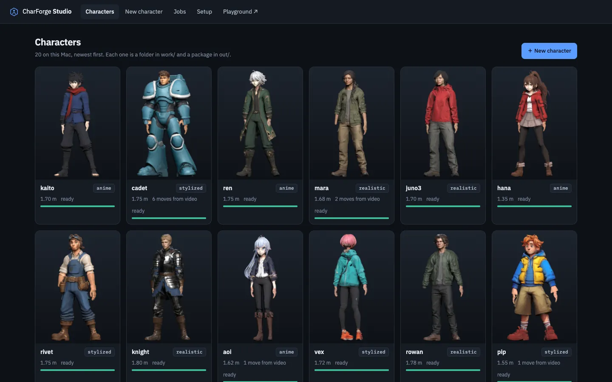
1 Introduction
A game character is more than a mesh. It needs a skeleton with the bone names an engine's animation library expects, skin weights that bend cloth without tearing it, hands with fingers, a face that can blink and speak, a collision capsule, levels of detail, and clips that move its feet without sliding. Image-to-3D models now produce convincing meshes from one picture [1, 2], and research systems produce rigged characters from an image or a prompt [3, 4, 5]; hosted tools and auto-riggers promise the rest [6, 7, 8, 9]. Two things are still hard. The first is the gap between a generated mesh and a character that deforms well: generated topology has no edge loops where joints bend [10], parts the generator fused (an arm to a hip, a vest to a sleeve) cannot move apart, and a rig built on them shows it in the first wave. The second is motion that is not in a library: a spell, a victory cheer, a particular roundhouse kick.
CharForge is our answer under a hard constraint: everything runs locally, on a 24 GB M5 MacBook, with openly available models. It is also an experiment in method. Each stage exists because a measurement showed the stage before it failing in a specific way, and each decision is recorded with the number that made it (Appendix A). This paper is the curated account of that record; the chronological version is the lab notebook.
Our contributions:
- An end-to-end local pipeline from a few words or one image to an engine-ready character (glTF and FBX, Mixamo bone names, LODs, capsule, face morphs, 18 clips) in about 41.3 minutes of median stage time (Section 3, Section 4).
- Generated-mesh repair for rigging: arms cut free of the bodies they were generated against, modelled hands sized to the forearm they end, garments bound to the bone they move with, loose pieces carried along (Section 4.4, Section 4.6).
- Moves from generated video onto the character's own rig: retrieval, a fit on the video's own body, and analysis-by-synthesis refinement of the skinned mesh, with hands and feet (Section 4.11).
- A measurement suite - silhouette and joint fidelity against the video, a per-stage breakdown that separates the rig's error from the scorer's, and synchronised four-view renders with joint readouts - and an account of the errors it found in itself (Section 5).
- A living, reproducible record: every table here is rebuilt from the pipeline's measurement files, and the experiment tracker is the project's roadmap (Section 9).
2 Related work
2.1 Characters from an image or a prompt
Image-to-3D generators. TRELLIS [11] and its successor TRELLIS.2 [1] generate meshes with physically based materials from structured sparse-voxel latents (a 10243 asset in about 9.6K tokens). TRELLIS.2 conditions on DINOv3 image features [12]. Hunyuan3D 2.0 and 2.1 [13, 2] pair a shape diffusion transformer with a texture painter and produce PBR materials. Both families are general-purpose: they model a character as one surface, which is the root of most of what CharForge repairs. A practitioner's survey of hosted and open generators [10] recommends the same two-step workflow we use - draw a clean reference with an image model, then lift it to 3D - and notes the same weakness: generated topology lacks deformation loops at the joints. The Cinevva workbench advertises text or up to four views, rigging, animation and GLB export, but does not identify the underlying model [9]. AI3DGen advertises selectable-face-count OBJ exports and personal-use terms; its cited page does not document rigging or animation [14].
The Qwen-Image and Qwen-Image-2.0 papers describe earlier generations in the image-model family [15, 16]; the separate Qwen-Image 2.1 repository documents the checkpoint actually used by CharForge [17]. Its license permits non-commercial research and evaluation only; it requires a separate license for commercial use [18].
Character-specific systems. CharacterGen [3] canonicalises a character in any pose to four A-pose views with an image-conditioned multi-view diffusion model, reconstructs it with a transformer sparse-view model, and back-projects the views into a texture with a depth test and Poisson blending [19]; it rigs with AccuRIG [6]. Make-A-Character [4] takes the opposite route: a language model parses the prompt into attributes, a portrait is generated and fitted onto a fixed, production-rigged template (MetaHuman) using 431 dense facial landmarks, hair is built as strands, and garments are matched from a library by CLIP similarity. Make-A-Character 2 [5] starts from a single portrait, corrects its lighting and skin tone, and calibrates a facial skeleton for expressive animation. Template methods get rigging and faces for free but not the look of an arbitrary character; generation methods get the look but inherit the generator's topology. CharForge generates the character (like CharacterGen) and then builds the rig from the generated solid itself.
Decomposed and product-ready generators, and open peers. StdGEN [20] and StdGEN++ [21] generate a
character as separate body, clothes and hair meshes from a canonical A-pose, the second adding a video-diffusion
texture decomposition into editable layers; DreamCharacter-1 [22] post-trains a 3D foundation model for
characters with geometry preference optimisation, two-stage texturing and distillation; and Pixal3D [23]
conditions the TRELLIS.2 backbone by back-projecting image features along camera rays, so the shape is aligned pixel
for pixel with the input view. Code is released for StdGEN and Pixal3D (CUDA; Pixal3D also through a third-party
Apple Silicon port) and, as far as we could find, not for DreamCharacter-1 E153. Two open projects do the whole task
on one machine: OpenMeshy [24] chains TRELLIS.2, Hunyuan3D and Pixal3D backends with retopology, a pass that
copies the source picture's pixels onto the surface, SkinTokens rigging and Unity Humanoid export, and writes a record of
the licences behind each output; reference-asset-compiler [25] gates every stage on recorded evidence,
including a five-pose deformation suite for the rig, and never retries a crashed model run. The pages we read describe
neither foot planting, interpenetration nor measured motion quality - the layers this paper adds. They had two things
CharForge lacked, and took from them: a licence record with each package (PROVENANCE.json) and an
extreme-pose check on skinning (Section 5.7).
Commercial generators. Meshy's API generates a mesh and texture from one picture, then optionally remeshes it to quad-dominant or triangle topology at a target count (100-300,000, default 30,000) and textures it at 2K, 4K or 8K with optional metallic, roughness and normal maps, delighting the base colour by default; its rigging step takes a textured humanoid facing +Z and returns a rigged model with walking and running clips [26]. Tripo adapts its face count to the shape (about 1.4 million faces, two million at its detailed setting), offers quad output up to 150,000 faces, a 'smart low-poly' topology of 500-20,000 faces, and texture tiers up to 8K [27]. Neither documents how its rig is weighted or how its animations are cleaned. Against them E162, CharForge's surface density is comparable (one million faces), but it ends in triangles, not quads. Its 4096-pixel texture holds about one megapixel of real detail, projected from an 832 x 1216 picture and 1024-pixel side and back views. Each clip carries the corrections we add to keep limbs out of the body. The roadmap takes these one lane each (Section 10).
Repair and representation quality. ManifoldPlus [28] turns triangle soups into watertight manifolds while optimizing the result back toward the input; Metro [29] measures simplified-surface error by sampling the source and output surfaces. These works motivate two separate checks in E116 and E118: topology repair success and geometric fidelity. They do not supply a CharForge-specific tolerance. Semantic-segmentation confidence is also not automatically correctness: Wang et al. [30] and de Jorge et al. [31] study calibration, reliability, and shift-related failure, motivating a manually labeled, held-out calibration set before multi-view part probabilities are trusted E117. Neither gives CharForge-specific thresholds.
Characters from drawings. Animated Drawings [32] rigs a child's drawing in 2D. DrawingSpinUp [33] lifts a drawing to 3D, removes and later restores its view-dependent contour lines, thins single-line limbs with a skeleton-guided deformation, rigs with Mixamo's auto-rigger from eight front-view keypoints and assigns each vertex to its nearest bone; its authors report surface adhesion where the drawing has self-occlusion, the same failure our arm cut addresses. Akman et al. [34] go from stick figures to 3D bodies with a variational autoencoder and animate by interpolating in its latent space.
Unified models. PixelUMM [35] reads and writes raw pixels with one decoder-only Transformer - images as patches, video as tubelets, no VAE or vision encoder - and both understands and generates images and video. Weighed against each CharForge stage E142, its released generation takes text only, at 256 px for an image and 176 x 320 for a video, where the stages need a full-body character at about 1024 px, image-to-image for the face and the character itself in its videos; its understanding scores are those of a 7-8B vision-language model, the level that could not judge moves from words here E143; and it runs only on Linux with CUDA. It is not used.
2.2 Rigging and skinning
Pinocchio [36] embeds a template skeleton in a mesh and computes weights by heat diffusion; RigNet [37] learns joints, connectivity and weights; UniRig [38] predicts skeletons autoregressively with a skeleton-tree tokenisation and was trained on over 14,000 rigged models. Commercial auto-riggers place a humanoid skeleton from guide markers - AccuRIG [6] with correctable markers and finger counts, PINOC [7] with mirrored markers from chin to ankles, Rig Lab [8] fully automatically, but with each hand a single joint, and Mixamo [39]. Magnenat-Thalmann et al. describe earlier joint-dependent local deformations for hand animation and grasping [40]. The glTF standard's linear-blend skinning path uses weighted joint transforms [41]; this can collapse bent joints, which dual quaternion skinning [42] can reduce, but not eliminate, by blending rotations as rotations. Our weights follow the idea of geodesic voxel binding [43] - distance measured through the voxelised body rather than through the air - so a vest glued to an arm is not near the arm's bone.
Learned rigging has moved on since: Puppeteer [44] adds attention-based skinning with topology-aware joint attention and an optimisation that animates the rig from video, and SkinTokens [45] encodes skinning weights as discrete tokens and predicts skeleton and skin as one sequence, reporting 98-133% better skinning accuracy than earlier methods. Both need an NVIDIA GPU (SkinTokens: 14 GB, CUDA 12.1 and flash-attn), so they are out of reach on this laptop; the geodesic binding we keep runs here, and the extreme-pose battery (Section 5.7) now measures it. Make-It-Animatable [46] is the learned skinning model that does run here: from a mesh it predicts a Mixamo skeleton, blend weights and a rest-pose reset with a transformer trained on Mixamo characters, and of its CUDA requirements it uses only farthest point sampling and PyTorch3D's transforms, both plain PyTorch - 48 seconds a character on a CPU. Its weights on our skeleton are measured in Section 5.7 E157. AniGen [47] generates shape, skeleton and skin together from one image, the route that would remove the fused surface's rigging problems at the root; a third party's run on an Apple laptop rigged a simple mascot and produced no faces for a clothed character with thin limbs, so it is not tried. For faces, OmniFaceRig [48] registers a template to the character's dense face keypoints, builds the inner mouth procedurally (teeth, gums and tongue, their texture baked) and transfers up to 155 FACS shapes with collision awareness, on an A100 in 20-30 seconds; the template route of E149 follows the same recipe with the Anny body's 52 ARKit-named facial actions [49]. Single-photo face reconstruction has a strong 2026 prior in Pixel3DMM [50] (per-pixel normals and UV from DINO features constraining a FLAME fit), which needs CUDA and a non-commercial licence.
Expressive hands and faces are often modelled together with the body: SMPL-X [51] extends a body model with articulated hands and an expressive face, while MANO [52] learns pose-dependent hand shape corrections from scans. These works motivate testing hand and face deformation as well as landmark placement; their research models are not drop-in templates for arbitrary generated characters. InterHand2.6M [53] provides real-captured 3D hand-pose labels, while D3DFACS [54] and the FaMoS sequences released with TEMPEH [55] provide dynamic human-face/action evidence. Their different topology, style and access terms mean they are calibration references, not direct acceptance tests for stylized meshes E123 E124. AU-Blendshape [56] specifically studies stylized action-unit controls and provides a relevant challenge-design reference, but not a CharForge benchmark or a licensed drop-in asset set. Pose-space deformation [57] provides a classical basis for the elbow and shoulder correctives planned in E107.
Layers and motion. CAPE [58] learns pose-conditioned clothing shape, and CLOTH3D++ [59] pairs animated dressed-human sequences with dense cloth geometry and texture. They provide useful challenge cases for layered motion, but neither demonstrates CharForge's runtime spring chains or guarantees stylized garment behavior E110 E125.
2.3 Motion from video
Human pose models read 2D joints from images: ViTPose [60] for the body, DWPose [61] for the whole body including 21 points a hand. Recovering 3D motion from them is usually done by fitting a parametric body such as SMPL [62] - by optimisation, as in SMPLify [63], or by regression, as in HMR, 4D Humans and WHAM [64, 65, 66], the last grounded in the world with foot contact. We do not fit a parametric body: the target is the character's own skeleton and mesh, whose proportions (a cartoon's head, an anime character's legs) no human body model shares. Instead we retrieve the nearest clip from the 2,453-animation Mixamo mirror [67] by dynamic time warping [68] of its 2D projections, bend it toward the video, and refine the character's own skinned mesh against the video in the spirit of SMPLify. The videos themselves come from the community Ref2VA fine-tune [69] based on MiniMax H3 [70], conditioned on the character's picture; Comfy-Org supplies separately packaged encoder and VAE components [71].
Motion ground truth. AMASS [72] unifies optical mocap datasets as rigged 3D motion, making it useful for controlled renders with exact motion truth but not paired RGB. TotalCapture [73] provides synchronized calibrated video, IMU and Vicon labels; 3DPW [74] adds in-the-wild footage from a moving phone camera with IMU/video-derived poses. AIST++ [75] broadens action coverage with multi-view dance footage and reconstructed 3D motion, but its annotations are not Vicon measurements. These sources test different failure modes and label quality, so we keep them as separate conditions rather than pooling them E111.
Contact labels. UnderPressure [76] records pressure insoles with motion capture and derives foot-contact labels. It supports evaluating contact classification against an independent signal; the geometric sole-depth threshold and foot-slip ratio in CharForge remain separate proxies and need their own calibration E122. Pražák et al. [77] found small footsliding perceptible in most tested conditions, but their controlled mannequin study does not establish a universal acceptance threshold for generated characters.
2.4 Measuring generated assets and delivery
TIFA [78] and GenEval [79] use fine-grained question or object checks to expose prompt attributes, counts and relations that a holistic image-text score can miss; neither is validated for stylized character renders. MATE-3D [80] instead collects human ratings for semantic alignment, geometry, texture and overall quality separately. THUman 2.0 [81] supplies scan meshes and textures for a permission-checked scan-anchored study; rendered orbit views are synthetic views, not captured calibrated camera observations, and redistribution of derived data requires written permission under the posted terms. We use these works to design and calibrate character-specific measurements, not to assume a published image or 3D evaluator transfers unchanged E102 E112 E113.
Metro-style surface distance [29] complements the existing nonmanifold checks with source-to-retopo shape error E118. Texture Mapping Progressive Meshes [82] motivates checking local UV stretch and anisotropy beyond median texel density E119. Unity's mip documentation [83] describes runtime selection and trilinear blending across downsampled levels; therefore a base-resolution gutter alone does not establish that exported color, normal and ORM maps are seam-free at runtime E120.
For animated humans, DDH-QA [84] includes human-rated binding errors and motion unnaturalness, while DHQA-4D [85] studies geometry, texture and temporal-discontinuity distortions in scanned 4D humans. These taxonomies are useful for designing CharForge's deformation audit, but their learned quality predictors are not assumed to generalize to generated, stylized characters E102.
The Khronos glTF Validator [86] checks conformance to glTF 2.0, while Unity, Unreal and Godot document importer-specific behavior for rigs, clips, morphs, materials and skin influences [87, 88, 89]. A standards-valid file is therefore necessary but not sufficient evidence of engine-ready behavior; the importer/runtime smoke matrix is E114.
For traceability, W3C PROV-DM [90] models entities, activities, agents and derivations; CycloneDX's ML-BOM [91] gives an inventory pattern for models and data, and Sandve et al. [92] emphasize archiving exact computational procedures. They motivate a claim ledger and output-lineage manifest, not a claim of formal provenance compliance E115 E121.
3 System overview
CharForge has three lanes that share one skeleton (Figure 2). The character lane (charforge.py
make, 23 stages) builds a character once, from a prompt or an image. The move lane (charforge.py
move) adds a move from a generated video to any character; because every clip it produces is on the standard
Mixamo skeleton, one video serves every character. The words lane (tools/unimate_moves.py) adds a
move from a sentence, generated on the character's own skeleton by UniMate [93] E129. Both lanes are Python and headless Blender [94] around
local models: an image model for the reference [17], TRELLIS.2 [1] through its MLX port
[95] for the 3D model, a human parser [96, 97] for part labels, ViTPose [60] and DWPose
[61] for pose, U2-Net [98] for cut-outs, a small language model [99] for prompts, and the
community Ref2VA fine-tune [69] of MiniMax H3 [70], with separately packaged Comfy-Org encoder/VAE components
[71], through ComfyUI [100]. A browser application, the Studio, runs the same stages
for a user without the command line (Figure 19).
Character lane · charforge.py make
- Prompt, written outa local model fills age, build, skin, hair, face and each garment
describe - Reference imageA-pose, cut out, arms checked
reference - 3D modelTRELLIS.2, checked from the front; a second pass on repainted side and back views is off by default E106
generate - Parts and jointsorbit renders, human parser, joints traced to limb centre lines
views · parts · skeleton · joints - Solid and handsone closed solid; arms cut free; modelled hands
solidify · hands - Mesh and texture60k triangles, baked PBR; the reference projected back, the face in detail
retopo · texclean · texture - Rigweights through the body, finger bones, springs, metres, T-pose
weights · rig · springs · frame · tpose - Facejaw and five shapes where eyes and mouth are found
face - 18 clips, packagecaptures retargeted, the shoe the viewer sees planted, every clip held inside joint limits measured on the mesh; glTF, FBX, LODs, manifest
animate · package · web
Move lane · charforge.py move
- Write the movetimed beats in the video model's prompt format
- Generate the videothe character's reference in, 5 s of it performing the move out
- Read the posefigure cut out of each frame; 17 body points, 21 a hand
- Nearest capturedynamic time warping over 2,453 mirror clips [67] and 16 camera angles
- Fiteach bone bent toward the video on the video's own body
- Retarget and aimonto the character's rig, its limbs aimed along the fit
- Refinethe skinned mesh optimised until silhouette, joints, face and hands lie on the video; feet on its floor
Words lane · tools/unimate_moves.py
- Write a sentencein the style of the model's training captions
- Sample on the character's skeletonUniMate, conditioned on the rig's topology and T-pose; three samples
- Choose onefrom a contact sheet of each sample, by eye
- Onto the rigretargeted, planted and held inside the joint limits like every clip
Where the time goes. Table 1 gives the median time of each stage over every build logged on this machine. Four stages - the second, multi-view 3D pass (off by default since E106), the reference image, the first 3D pass and the texture projection with its detailed face - take 37 of the 41.3 minutes; everything that turns the generated mesh into a rigged, animated character takes under five. The times include any wait for the GPU while another job held it (Section 4.13), so they are what a user waited, not each stage's own cost; timing each stage alone, and cutting what the measurements say is not worth its time, is experiment E106.
| stage | median min | p90 min | builds | share of the median total |
|---|---|---|---|---|
| reference | 8.0 | 22.5 | 9 | 19% |
| generate | 7.8 | 19.3 | 11 | 19% |
| multiview | 16.1 | 24.0 | 11 | 39% |
| views | 0.1 | 0.1 | 12 | 0% |
| parts | 0.1 | 0.2 | 12 | 0% |
| skeleton | 0.1 | 0.1 | 12 | 0% |
| solidify | 0.3 | 0.4 | 11 | 1% |
| joints | 0.1 | 0.1 | 12 | 0% |
| hands | 1.1 | 1.6 | 27 | 3% |
| retopo | 1.0 | 1.7 | 34 | 3% |
| labels | 0.0 | 0.0 | 34 | 0% |
| texclean | 0.1 | 0.1 | 32 | 0% |
| texture | 5.0 | 9.8 | 34 | 12% |
| weights | 0.1 | 0.1 | 34 | 0% |
| rig | 0.0 | 0.1 | 43 | 0% |
| springs | 0.0 | 0.0 | 41 | 0% |
| frame | 0.0 | 0.0 | 43 | 0% |
| tpose | 0.0 | 0.0 | 43 | 0% |
| face | 0.1 | 0.3 | 43 | 0% |
| animate | 0.8 | 1.6 | 58 | 2% |
| refine | 0.0 | 7.7 | 54 | 0% |
| package | 0.2 | 0.4 | 55 | 0% |
| web | 0.2 | 0.5 | 54 | 1% |
refine is zero for characters without moves from video.4 Method
We describe each stage by what it does and the failure that made it necessary. Experiment identifiers link to the tracker, where each has its question, metric and result.
4.1 A few words, written out
Users type little: "a boy scout", "gray alien that is extremely muscular". Passed straight to an image model, the first came back a grown man at the height slider's default of 1.72 m and the second a grey clay sculpture - no clothes, no colour. Following Make-A-Character's use of a language model to parse a prompt into attributes [4], a local model [99] fills a fixed set of fields - who, age, build, skin, hair, face, top, bottom, shoes, extras - and the sentence is composed from them in code. Asked instead for free prose under rules, 3B-8B models broke a rule in about one prompt in two ("holding a wooden badge", "standing at 1.5 meters tall"); fields that name a prop, a pose or a height are now dropped, and the age group is taken from the prompt's own words, not the model's. The height follows the age group unless the user sets it, and a name that exists is refused rather than overwritten E016.
We scored nine local models on five prompts against four rules each E015; Table 2 gives the results. Gemma 2 9B kept all 20 checks but took 15.0 s a prompt; Gemma 4 e4b kept 19 in 9.2 s and is the default. Gemma 4 answered nothing until its "thinking" mode was switched off, which only models that report the capability are sent. The Studio shows the written-out text before anything is drawn, to edit.
| local model (Ollama) | rules kept | time a prompt |
|---|---|---|
| gemma2:9b-instruct-q5_K_M | 20 / 20 | 15.0 s |
| gemma4:e2b | 19 / 20 | 4.8 s |
| gemma4:e4b | 19 / 20 | 9.2 s |
| llama3.2:3b | 19 / 20 | 58.3 s |
| gemma3:4b | 18 / 20 | 7.8 s |
| qwen2.5vl:7b | 16 / 20 | 14.2 s |
| qwen2.5:7b | 15 / 20 | 10.2 s |
| No answer (errors on every prompt): ministral-3:8b, mistral-nemo:12b | ||
4.2 The reference image
Everything is generated from one picture of the character standing in an A-pose on a plain background. We compared two local image models on six characters with the same prompt and seed E013: Krea 2 drew one broken figure in six (a jacket with no head or legs, which the automatic checks passed, since it still has "arms"), Qwen-Image 2.1 [17] produced no broken figures and returned a usable alpha cut-out in each case. Qwen read "arms slightly away from the body" literally - wrists 0.28-0.37 torso lengths from the hips, close enough to fuse in 3D - until the angle was spelled out (0.58-0.70). It is the default; Krea stays a flag away. Qwen-Image 2.1's license is limited to non-commercial research and evaluation; commercial use requires a separate license [18].
A reference in the wrong pose costs half an hour before it shows. Bo, a cartoon chef, was drawn with his fists on his hips despite the prompt; the 3D model fused them and his hands came out in shreds at his belt. The pose model now reads every reference's arms: our references put the wrists 0.60-0.79 torso lengths from the hips, Bo's 0.33, and below 0.45 the picture is drawn again on a new seed E028.
4.3 The 3D model, checked from the front
TRELLIS.2 [1] builds a mesh with PBR textures from the reference. On four characters its first pass built the picture's plain backdrop into the model as a solid board - in front of the figure, behind it, or through its legs - which later stages cut into grey sheets hanging from the arms (Figure 3). Rendered from the front, a sound model lies on the picture's silhouette at IoU 0.9-0.94; these lay at 0.35-0.44. The model is now checked from the front, and below 0.8 made again from the picture cut out by a salient-object model [98], then on a new seed E014: Gray 0.42 → 0.931, Knight 0.4 → 0.916, Kaito 0.35 → 0.906, the boy scout 0.35 → 0.908. It is also checked from behind: on Vex, made from a painting, TRELLIS.2 sculpted and painted a second face on the back of her head, which nothing later looked at. DWPose [61] reads a face on the back of an ordinary head at 0.34-0.55 - a ghost of one in any hair - and on hers at 0.97; above 0.8 the model is made again on another seed E145.
Pixal3D, on request E155. Pixal3D [23] conditions the same backbone on image features carried along
the camera's rays, so the shape lines up with the picture. Run through its Apple Silicon port on six of our references
with the same gates, it matches the picture's front silhouette better on all six (IoU 0.921 → 0.949 on average) and
comes out as one closed piece with a quieter surface and clean armour and cloth edges, where TRELLIS.2's first pass is
40-409 pieces. It is worse where the gates do not look: the mirror symmetry of five of six, black eyes on two, a face on
the back of the head read higher on two, and two to three times the time. So it is an option
(--generator pixal3d), turned to face our cameras and welded at the import's seams before it is
decimated, and TRELLIS.2 stays the default.
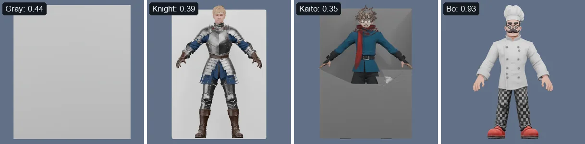
A second pass conditions TRELLIS on side and back views repainted from renders of the first. Scored against a
generated 360° video of Mara E012, the second pass moved the mean silhouette IoU from 0.778
to 0.781, and three turntable frames as extra views to 0.786: more
views barely change the shape, and where views disagree the model averages them (Mara's braid, over her shoulder in
the reference and down her back in the video, was lost at the back). The second pass is also the slowest stage
(Table 1). Every character built with it keeps both models, so the two were held against each other on
12 characters E106 (Figure 4). The second model fits the reference's front worse on 12 of
12 (silhouette IoU 0.923 on average for the first pass, 0.908 for the second), and its
side silhouettes overlap the first's by only 0.63-0.93: it is a different model, not
a refinement. Where the difference shows it follows the repaint, not the picture. The image model repainting the
side and back views invents what the reference does not show, and the second pass builds it: the boy scout grew knee
socks and lost his grin, Vex's trainers became boots and a grey hood appeared under her jacket, Mara's braid moved
from her shoulder to her back. What it adds is a more plausible back (the scout's neckerchief is tied behind him). The
second pass is therefore off by default since this version (--quality best keeps it), which saves a
median 16.1 of 41.3 minutes. This is a pilot on finished models: the end-to-end
comparison, with the characters rigged and audited both ways and rated blind, is still to run.
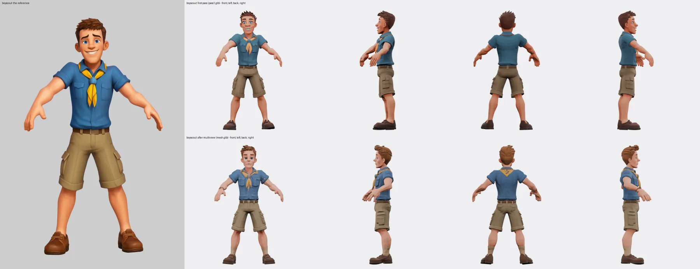
A finer surface. TRELLIS.2 simplifies its surface before writing it. At the 200,000 faces this pipeline asked for until version 0.11, gently curved armour became large flat facets with sawtooth edges, and every later stage kept them: the solid's vertices are put back on the generated surface to keep its detail, so the facets reached the normal map and showed as a triangle pattern under any grazing light (Figure 5). The generator now keeps 1M faces, and its surface is filtered before anything is built on it by bilateral normal filtering [101]: each face normal is averaged with its neighbours', weighted by their area, their distance and how alike the two normals are, so facets a few degrees apart become one smooth surface while a plate's edge, tens of degrees sharp, stays; the vertices are then moved to agree with the filtered normals [102], a median 0.05 mm on a 1M-face model E135. A rebuild of the roster on it is scored in Section 5.8. Quad remeshing was tried as well and refused both the generated mesh and the solid (QuadriFlow needs a manifold input).
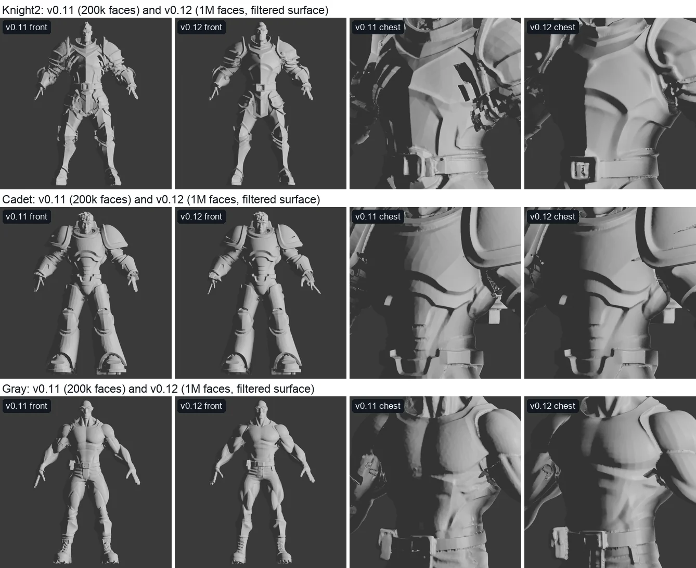
4.4 Solid, joints, arms and hands
The generated mesh is closed into one solid (OpenVDB level sets [103]), its flakes, inner shells and shards removed. Orbit renders give per-vertex part labels from a SegFormer architecture [96] using the FASHN human-parsing checkpoint [97] and 3D joints from the pose model; each joint is then moved onto the centre line of its limb, traced through the solid. A traced line can double back: on knight2 the arm's trace reached his gauntlet and turned 36 cm back up the vambrace, and the hand was placed a forearm's length behind the wrist; the trace now ends at its farthest point E018.
Arms cut free. Generators glue arms to whatever they hang against - a hip, a vest, a bag. Rigged as is, the surface between moves with both, and a raised arm pulls the vest into wings. The arms are cut free below the armpit (T-pose faces stretched past 3x: 1,150 → 390 on Pip), thin webs opened first, and the cut checked slab by slab along the arm and repeated where a join survives: 3-9 joined slabs an arm after the first cut, 1-3 after the second E025 E026. The cut is a shell at the arm's estimated radius, and at the armpit the estimate runs large: on 8 of 17 characters the shell went through the torso from front to back and showed on the back as dark rectangular holes. Once the arm is free, everything the cut took that lies more than 3 voxels (about 5 mm) from the arm's own solid now goes back to the body; a band of air still parts them wherever they were glued, and the stage undoes the give-back if its own joined test would fail E146.
Modelled hands. Generated hands are paddles. They are carved off at the wrist and replaced by a modelled hand (a signed distance function with anatomical proportions, 15 finger bones) unioned onto the solid. The modelled wrist was a person's; on Gray, "extremely muscular", whose forearms measure 11-13 cm at the wrist, each arm ended in a flat step like a cuff and the waving hand read as a small hook (Figure 6). A sleeve's cuff measures just as wide, so width cannot tell a bulky forearm from a sleeve - but the part labels can: the vertices just above the cut are labelled bare skin on 0.92-1.00 of a bare forearm and 0.13 or less under a sleeve or gauntlet. On a bare forearm the hand is now scaled across its width and thickness to meet it, up to 1.6x (Gray 1.60x) E021.
The exact boolean that joins a hand to the arm fails now and then, and the fallback was to join the hand as an overlapping shell. On five characters the left hand fell back, and the right hand's boolean, run on that self-intersecting body, returned it unchanged; the only check, that the volume did not shrink, passed it, and they shipped without a right hand. Every hand is now unioned onto the body as it came from the solid, and a failed one joined only after all the unions; a union is kept only if the volume grows by at least a quarter of the hand's, four or more fingertips lie on the result's surface and it adds few non-manifold edges (exact, then nudged a tenth of a millimetre, then with self-intersection handling, which put hands on but tore the surface). The stage fails if a hand's fingertips are not on the final mesh, and after retopology every fingertip the hand model recorded is looked for on the low-poly E146.
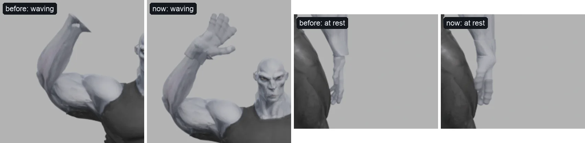
4.5 Mesh and texture
The solid is decimated to about 60,000 triangles [104], the head keeping 28% of them, unwrapped, and its colour, normal, roughness/metal and ambient occlusion baked from the generated model. Collapse decimation spends triangles where the surface turns and left the head 17% of the budget, too few for an eyelid or a lip; a vertex group lets the head's vertices collapse less freely, its strength found by bisection until the share holds E140. The generator's own colour is a 1024-px atlas of thousands of small charts for a million faces - most triangles smaller than a texel - and along the charts' edges it leaves texels sampled off the surface; baked, they were a crackle of short grey and dark lines over every surface the picture does not paint (Figure 7). They are not dark specks a filter on the atlas can find, nor holes in the mesh; and an atlas texel cannot be mended from its neighbours there, which belong to other charts. So the colour is rebuilt through the mesh: each triangle sampled at its centroid, each vertex (its copies at the atlas's seams joined) given the median of its triangles' colours, a vertex far from its neighbours' median along the mesh given that median, and the atlas painted again from the vertex colours at four times its resolution, where nearly every triangle holds a texel of its own. New characters are generated at 2048 px. Smart UV projection on a smoothed copy folded islands onto themselves wherever the copy curls (224-2602 faces per character sharing texels with another surface - the backs of Pip's sleeves showed his vest's paint); the overlapping faces are unwrapped again as their own islands at one texel density, leaving 6-31 E027.
The bake is soft, so the reference is projected back onto the mesh, aligned to renders of the mesh by a similarity transform on the silhouettes and then by a smooth optical flow [105], together with the repainted side and back views; the reference sets the palette, colour-matched group by group. Like CharacterGen's back-projection [3] a view only paints surfaces it sees face-on and unoccluded; unlike it, views are blended by weight rather than by Poisson blending [19] - comparing the two is E105. The face is painted from a detailed image: the reference's face region enlarged 3-5x and re-detailed by the image model at low strength.
Sharper from the same pixels E164. The 4096 atlas holds about one megapixel of real detail: the reference is
832×1216 and the views 1024 px. Three changes take more of it into the texture. The pictures are read with a
Lanczos filter instead of bilinear. The bake's own colour, which was mixed in at 8% everywhere, drops to 0.1% where the
views see a texel strongly, and keeps only its low frequencies, as the colour field the views' detail is laid on. The
shadow floor below was a softplus with a slope of 0.2 at black, which flattened the darkest folds; it is now a
power curve whose slope never falls below 0.4. On Mara, Pip and Hana the albedo's lightness detail rises 14%, 13% and 3%,
and an unlit front render keeps 0.51, 0.58 and 0.65 of the picture's own detail at the picture's scale, up from 0.43,
0.52 and 0.59. The sides and backs are limited by their 1024 px views; a 2× refine of the reference and views
(pipeline/tex_hires.py) is written for when ComfyUI runs.
The face in parts. Faces looked sloppy after version 0.12 - eyes hollow or smeared, features off the shape, patches on the cheek - and taken one part at a time the faults had separate causes E140. The eyes were in the shape: TRELLIS.2 models every eye as an almond opening with shards inside it, the solid filled it with streaks, and the decimation crumpled it into a pit no texture reads as an eye (Figure 8). Each opening is found by DWPose [61] on a front render of the generated model in its own colours - the generator paints its features where its geometry has them, where on a grey render of a drawn face the pose model only guessed - and rebuilt in the solid as a cap across the opening: it follows the lids' depth round the rim, bulges a little forward in the middle like an eyeball under lids and sinks a little at the rim; what lies in front of it is cleared, the region smoothed and kept from being put back onto the generated surface's shards. A ball set behind the opening instead left a slot whose hard ledges rendered as dark rings round the eyes. The features were in the projection: the silhouette fit had put Mara's painted face larger than her sculpted one, its eyes 10-30 pixels off. Each part - each brow, each eye, the nose, the mouth, the jaw - is now moved by its own similarity [106] from where the projection puts the model's points (read on the generator's paint) to the picture's, and the moves are spread by a thin-plate spline [107] that falls to nothing past the face; this replaces the earlier face flow, which had squinted and smeared Mara's eyes. The face's ellipse is painted by the front view alone - the generated side views, their faces drawn again a little elsewhere, put patches on the cheek and skin on the hair - and left out of the skin tone below (Figure 9). Anime faces are not laid on in parts: a drawn face's shape does not say how big its eyes are, only the generator's paint does, and fitted to it Kaito's eyes came out a fifth wider than his picture's. Where DWPose cannot read the model's eyes (12 benchmark characters: 11 rebuilt; most anime faces are not read) the eyes stay as generated, and where it cannot read both faces the face flow is used as before. A drawn smile can run past the lips - Cadet's, Kaito's and Bo's corners read 1.2 eye spacings apart - so the jaw's cut is held to 0.8 of the eye spacing.
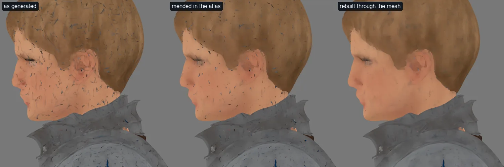
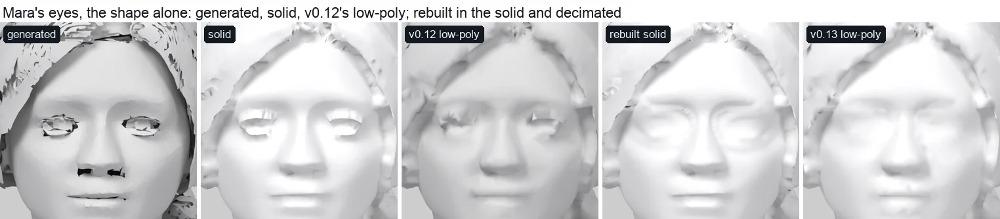
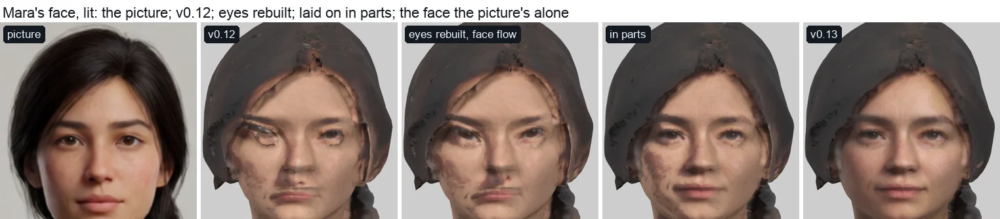
No loose shards. The solid is one piece, but the modelled hands are unioned onto it and the decimation's repairs delete faces round non-manifold edges, so small shells survived into every low-poly: 2-94 a character, of 1-58 faces each and a few millimetres to 3 cm across, floating at Cadet's and Knight2's shoulders, and holding nearly all of the model's open edges (Cadet 207 of 212). Pieces under 0.25% of the faces are dropped; a garment or a strand kept apart by design is hundreds of faces or more E138.
Hands shaded by their own shape. The modelled hands take the skin tone of the face, and took their light and dark from the base colour bake - which comes from the generated mesh, where the old hand, or nothing, stands where the modelled hand is - so every hand carried pale and dark patches. They now take it from the ambient occlusion baked on the solid they are part of: soft shade in the creases between the fingers, nothing elsewhere (Figure 10) E138.
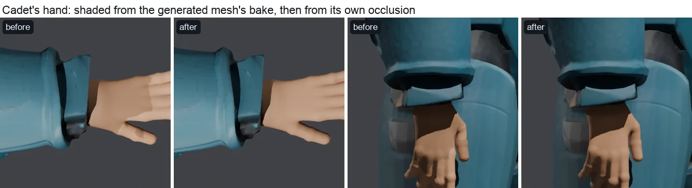
One skin. The skin's colour comes from three places - the picture, with its light and shadow, on the front; the generator's colours on the sides and back; one tone on the modelled hands - so the same skin was three colours: a ring at every bare wrist (Mara's forearm L* 50 against her hand's 69, CIEDE2000 16.6) and, on the face, the picture's shading lying on a shape not quite the picture's. Skin texels - near the character's skin tone in hue and chroma, at a lightness within a band of it so that shading counts and brows, lashes, lips and eyes do not, on the parts the parser calls skin (brown boots and khaki are skin-coloured too) - have their colour at the 1-2 cm scale of shading replaced by the tone, measured in 3D so a cheek's islands are not kept apart by the atlas, and keep their own detail at the scale of freckles and pores. Mara's wrists go from dE 16.6 and 16.3 to 1.5 and 2.2 E138. Anime is left as drawn: its painted shading is the style. So is the face, since version 0.13: its colour bands cut the picture's soft cheek shadow into patches, some texels lifted and their neighbours not, and the face is now the picture's own E140.
Colours a renderer can light. A physically based renderer multiplies the light by the base colour, and the PBR guides keep a non-metal between sRGB 30-50 and 240 [108]: a black jacket painted at sRGB 5-15 renders as a hole without folds, and 17-38% of five characters' textures lay below 30. Every non-metal texel's lightness is eased into that range by a smooth curve that leaves texels well inside it untouched and keeps a garment's own contrast, its hue and chroma as painted; metals (the ORM map's metal channel) are left alone E132.
Painted sides and backs, on request. Hunyuan3D-Paint 2.1 [2], run through its Apple Silicon port
[109], paints six views of the mesh from its own normals and positions, consistent with the picture and each
other. Its own bake back onto the atlas covered a third of the surface on our meshes and filled the rest in UV space, a
patchwork, so only its views are kept, fitted onto our cameras by silhouette and projected like any view, with the
front delit by Hunyuan's delighting model and each garment's colour on the side and back views matched to the front's
E133 E134. It cleaned Pip's blotchy back. On eight more characters, though, the texture audit scored it better while
it looked worse on six: generated at 256 px, the views paint what the picture does not show - a face-like pattern on
the back of the boy scout's head - and lose fine pattern (Figure 11). It is an option (--texture-views
hunyuan), used for Pip.
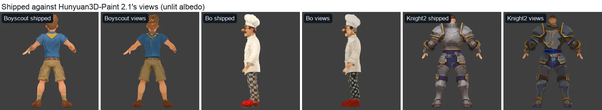
4.6 Weights and rig
Skin weights come from distances measured through the solid body rather than through the air [43], so a vest that touches an arm is still far from the arm's bone. Three rules handle garments the generator fused to the body E025. The arm's own surface is flooded from the sleeve's outside starting past the cut (0.30 of the upper arm), so it does not walk onto the vest; a vest's armhole moves with the collarbone where colour tells the torso garment from the sleeve; and an upper garment near the hips follows the pelvis rather than the thighs, so a jump does not pull a hem into a W. Loose pieces the generator left (Kaito came as 40: hair spikes, the inner toes of his sandals) each ride rigidly with the body part nearest them. The project rig maps the 64-bone Mixamo-style vocabulary in its clip library, including fingers and a jaw [67]; bone chains are hung on what should swing (braids, ponytails, bags). The glTF standard's skinning path is linear blend [41]; the playground patches three.js [110] to dual quaternion skinning [42], which cuts jacket faces collapsed below half their area during the walk from 8.8% to 6.1% and during the run from 11.5% to 6% with the same weights E024.
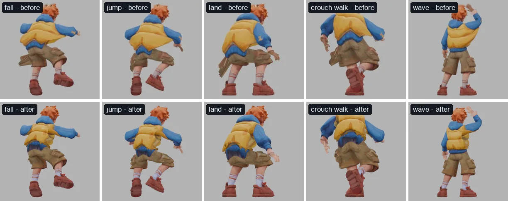
Two weightings, and the extreme poses choose. A gentler falloff (influence by distance to the power -2 instead of -4) and more smoothing (30 passes instead of 6) take the stretch out of a loose jacket's armpit: with Vex's arms overhead, stretched, sheared and crushed faces fall from 13.3% to 10.5%, with her arms forward from 10.4% to 7.1% E154. On the legs the same weights cost the strides: chosen for nine characters in a first rebuild, they stretched Juno's and Mara's thighs more in the gaits and took Knight from 2 pops to 6, five of them in the sprint; on the head and neck they stretched Juno's and Knight's heads in the clips. So the soft weights are blended with the default by how much of a vertex follows a hip, knee, ankle, the neck or the head - soft on the body and arms, the default on the legs and head - and each build makes both, rigs each through the same stages and poses it in the ten extreme poses of Section 5.7. The hybrid is kept when its mean share is at least 0.1 points lower and no pose is worse by more than 0.3 (Table 11): 10 of 17 characters keep it, and the tight-clothed and armoured ones keep the default (Ren's deep squat loses 0.35 points with the hybrid). Knight rebuilt with the hybrid is back to 2 pops; keeping the head on the default too took Juno's stretched faces in the clips from 1.46% to 1.40% and sheared from 1.65% to 1.59% E160.
What the extreme poses cannot judge. Two other weightings scored better still at the extreme poses and worse in
the clips. Make-It-Animatable's learned weights [46] beat the hybrid on six of seven characters - on Vex by 15% - and
broke Cadet's pauldrons; taken through Vex's clips they stretched and sheared less and left a part more than 2 cm inside
another in 22% of frames against 7% for the build it replaced, with 8 pops against 3 E157. Measuring distance from each body part's surface
instead of its bone's line, so that a loose jacket's side - which hangs nearer the thin arm's bone than the thick
trunk's - stays with the trunk, takes the fin out of Vex's raised arms (Figure 13; the fin vertices' arm weight
falls from a half to a twentieth) and cuts her extreme-pose share from 4.35% to 2.73%; in her clips, frames with a part
inside another went from 7% to 12% and pops from 3 to 15, the arm now sinking into a jacket that no longer moves with it -
while Pip's clips, his vest no longer rising with his arms, improved on every measure (deep frames 6.8% to 4.6%,
stretched faces down a fifth, a pop fewer) E159. Faces that hold their shape can be faces that let a limb through them,
and the battery counts only the first (its own penetration reads the same for Pip's and Vex's two weightings); both stay
experiments (--skin-weights mia, geodesic_weights.py --radius) until the clips can decide.
Now they can: tools/weights_trial.py builds a candidate through every clip in a copy of the character and keeps
it only when no clip is worse beyond a tolerance E161. The surface-relative weights fail it on Vex, Pip, Rowan and Bo -
Pip's clips stretch and shear less, but his fall and strafe go deeper - and the cause is in the method: the radius is
subtracted per bone, so a thick bone takes the weight of the thin joint beside it on the same chain (Vex's left wrist
keeps 33 of its 880 vertices; her forearm and hand pass through each other), and the trunk's radius pulls weight from the
shoulders and collar.
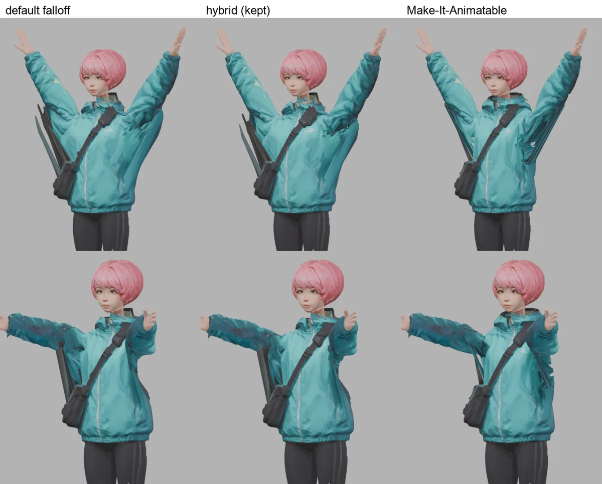
The pose it was modelled in, as its rest. Retargeting turns each source bone by its change from its own
rest and applies that change to the target's rest, so the two rests must agree: Mixamo's is a T. Until version 0.11 the
rig was therefore skinned up from the A-pose the character was generated in to a T and saved in it - and skinning is
linear blending, which cannot be undone exactly: armour fused to the arm (Cadet's pauldrons) sheared into shards on the
way up, and arms-down frames, skinned back down from that T, kept slivers. The T is now recorded on the armature and
used only inside the retargeting maths; the rest pose stays the modelled one. The clips come out the same - foot slip
identical in all nine gaits - while on Cadet crushed faces went from 3.44% to
1.446%, self-intersecting face pairs per frame from 1,093 to
502, and frames with a limb more than 2 cm inside another from
40% to 28% (Figure 14) E137. Arms raised above the shoulder
still stretch armour fused to the arm; that needs rigid shoulder pieces E110. Engines take an A-pose bind like any
other (Unity's Enforce T-Pose, Unreal's retarget pose, Godot's Fix Silhouette); --rest T bakes the T as
before, and the manifest says which a build has.
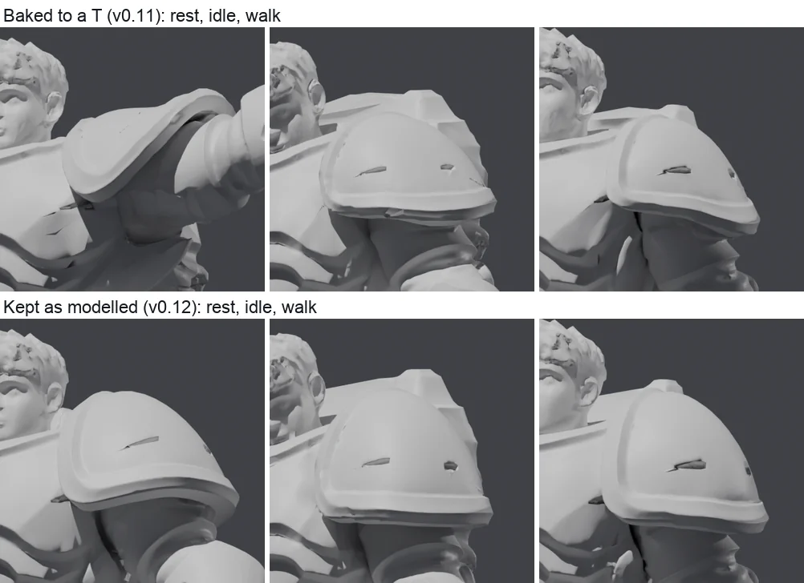
4.7 Face rig
The head is rendered from the front, unlit, together with the world position under every pixel. Eyes are found as blobs and the mouth by its colour and the pose model's face points; from them the face stage cuts the mouth open, adds a jaw bone and five shapes (blinks, smile, raised brows, pucker), and beside them 23 shapes under ARKit's names - eyes wide and squinting, brows down and raised inside and out, jawOpen, smiles, frowns, funnel, stretches, cheek puff, sneers - the names engines and face-capture apps drive E166. Each is a smooth field per side from the same landmarks, gated by the same trust in the eyes and mouth; jawOpen is the jaw bone's opening as a morph. Stored as sparse morphs, they add about 0.6 MB to a web model. It places nothing it cannot find: on Bo, eyes behind round glasses and a mouth under a moustache, it builds no face rig rather than a guessed one E109. Two characters lost their face rig because the frame stopped above the chin on a tall head E017. The position render had its own error: written as position + 4 into EEVEE's half-float film, every position was read in 3.9 mm steps, 2.5 mm off on average; written around the frame's centre the step is 0.5 mm E019.
4.8 Clips, feet and packaging
Eighteen motion captures (idle, walk, jog, run, sprint, backpedals, strafes, turns, crouch, jump, fall, land, wave) are retargeted onto the rig with the fingers. Feet are planted by clip selection, grounding and foot IK, and the playground drives all locomotion from one stride clock, so the foot on the floor slides a median 3.2% of the gait's ground speed (Section 5.5) E029. Every change of clip is a cross-fade (0.12 s), and the simulation steps at no more than 1/120 s whatever the display's rate, so a gait change, a landing or a wave no longer jumps in one frame (Mara's worst single-frame bone turn: 95° → 43° between gaits, 136° → 24° on landing) and the motion is the same at 60 and 120 Hz E167. The foot that is planted is the shoe as the viewer deforms it: every vertex of the shoe below the ankle (1016-3266 a foot on the roster), each posed by its own skin weights with dual quaternions, the way the playground skins the mesh E130. A planted key pivots on the flat of the sole; a key in the air keeps the whole shoe, toe cap included, above the floor. A rigid copy carried on the ankle bone works for an ordinary shoe, which is rigid below the ankle; Cadet's armoured boots blend with the shin above a high ankle joint, and the rigid copy stood on the floor while the boot on screen was 4.4 cm under it. All of the shoe is needed, not a sample of it: thinned to 400 points, its lowest point jumped from one sample to the next as the foot rolled, and the planted pivot jumped with it. The package follows engine conventions: real height in metres, origin on the floor under the pelvis, glTF [41] and FBX with three levels of detail, and a manifest with the collision capsule, each clip's ground speed, direction and contact phase, the jump's take-off and landing, and the face's morph targets.
4.9 Room for each limb
A motion capture was performed by one person of one build. Played on a thicker character, the same joint angles fold a forearm into a puffy sleeve, a heel into a thigh, and hang the arms inside a wide torso. Game rigs carry joint limits for this; we measure them for each character from its own mesh E128. From the rest pose each elbow and knee is bent in 5° steps about its hinge axis, read from the character's own clips as the mean axis of each frame's bend, and the upper arm is lowered from the T-pose at five swings, from 60° forward to 60° back. At every step the mesh is posed and the depth of one body region inside another measured as in Section 5.6. A joint's limit is the last angle before that depth passes 2 cm, the audit's own threshold for a deep penetration: flesh squashes where a rigid mesh can only overlap, and at a 1 cm tolerance Mara's boxing guard was opened by 25°. The arms' limits leave out the head, whose region includes the hair; hair should swing aside, not stop an arm.
Every clip is then held inside the limits. An arm past its limit moves to the nearest allowed direction, measured against the chest so a lean does not count, and those turns are smoothed over ±2 keys so the nearest choice cannot hop between two near-equal ones (on Bo's first limits, raising the arm instead cost up to 44° where moving it out to the side cost 17°), and faded out as the arm swings past 60° forward or back, where the limits were not measured. An elbow or knee past its limit is opened about its own bend axis, a knee only while its foot is off the floor (faded in between 8 and 16 cm of lift), so the feet stay where retargeting planted them. The limits are soft: the last 10° are approached along a tanh, so a correction has no corner in time. The sweeps take about a minute per character and the clearance seconds; both run at the end of the animate stage. Contact-aware retargeting treats the same interpenetration with a learned, geometry-conditioned model [111]; measured limits need no training data and cannot invent a pose, but they only see each joint alone (see Section 5.6 for what that leaves).
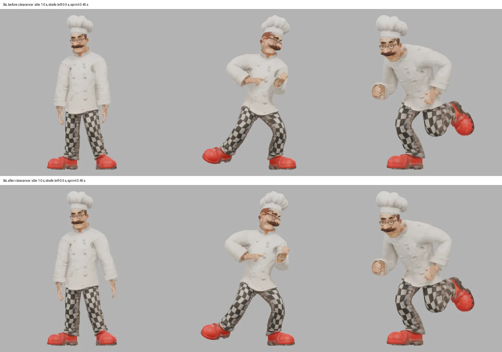
4.10 Every frame against the body
Limits are measured with each limb beside the body and held one joint at a time, so they cannot see a hand go into a thigh that is itself swinging, or a forearm into a bulky jacket half-way through a turn - after clearance, those pairs still carried most deep frames E148. The research answer is retargeting that models the meshes' interaction: MeshRet [112] learns a dense interaction field between body surfaces and runs on this laptop's CPU in under a second a clip. Measured on six characters E150, it removes arms from torsos but drives the hands into the thighs, a pair its field does not include, and its median share of deep frames (35%) is no better than clearance's (36%). We keep its idea and drop the network E151. After clearance, each clip is solved against the character's own skinned surface: for every frame, the smallest and smoothest extra turn of each shoulder, elbow and wrist (in the bone's own frame; the fingers ride the wrist) that keeps about 1,500 points of each arm's surface 1 cm outside the torso, thighs and shins, posed from the clip by linear skinning. A point counts as inside when it lies behind the normal of its nearest body vertex and within 2.5 cm of that normal's line, and the test runs both ways round: Pip's puffy vest goes through his sleeves, which only a body vertex measured against the arm's surface shows. Points with more than a tenth of their weight on the other part or a collar, or within 3 cm of it at rest, are not tested - that is the fold at the armpit, where arm and torso are one surface - mirroring the audit's own rule. The cost is the squared depth of every inside point, plus the squared turns (a twist three times, an elbow's sideways turn five times dearer) and twenty times their squared change from frame to frame, minimised over the whole clip at once (Adam, 300 steps, nearest vertices re-found every 25). A clip with nothing near a surface is left as it was. The turns are written into the clip's own keys, so the planted feet and the pelvis are untouched. Contact-aware retargeting [111] optimises in a learned space for the same reason; here the space is the joints' own turns and the measure is the mesh.
Three refinements, each from a residual the first version left E152. The cost's squared depth is weighted ten times the squared turns: at equal weight, when only a handful of points were inside, the turn penalty outweighed them and Gray's idle stayed at 98 of 98 deep frames although the same solve cleared it at a wider margin with turns of 1.4°. Skipping arm points that share skin weight with the torso or collar, which protects the armpit's fold, hid real penetration on a physique where the biceps meet the lats: relaxing the skip to 0.40 for the arm points alone takes Gray's audited idle from 100% of frames to none, but the same setting breaks Cadet, whose overlapping armour is built to interpenetrate at the shoulder, and the solver's own measure cannot tell the two apart. So the audit decides, clip by clip. When frames with a part more than 2 cm inside another are still above 3% after the solve, the relaxed solve is run on top, and its turns are kept for each clip in which the audit finds at least two points fewer such frames and no more crushed, stretched or sheared faces (0.05 points) or pops - one more pop where the clip loses twenty points or more, as Gray's landing does (64% to 18%) E156. A first version took or refused the relaxed solve for a whole character, and one clip made worse - Cadet's armour - kept the rest from it; clip by clip Cadet keeps it for his walk, bow and fist pump and goes from 11.5% to 10.3% of frames. The solve poses the arm by linear skinning while the audit and the playground blend dual quaternions; judging the surface the audit's way instead (a differentiable dual quaternion skin, E156) moved the share of deep frames by -0.3 points on Cadet, +0.7 on Pip and +1.2 on Vex, so the solve stays linear. Smooth corrections E165. Measured against the same capture retargeted with neither step, the shipped clips carried 1.3-2.4 times its joint jerk: the solve's turns are found frame by frame and keep frame-to-frame noise, and clearance clamped each key on its own (an elbow gate at 0.05°, a knee floor switching on and off). The corrections, never the capture, are now eased in time: each clip's turns and the shoulder and elbow corrections over 2.5 keys (a zero-phase Gaussian, 42 ms), the knee's over one key and only while the foot is lifted, and the floor bound eased in without being crossed. The added jerk falls to 0.5-1.6% (Cadet 1.28 → 1.005, Mara 2.36 → 1.016, Pip 1.53 → 1.008 times the capture) with the same deep frames, foot slip and pops, at 0.02-0.06 cm more depth at the deepest point. Clips made from video are re-posed by the refine stage after all this, and a punch with the arms crossing the chest goes back into it, so the solve is run again on them and kept for a clip only if its silhouette still matches the video as well (the same IoU refine measures, at the same placement; at most 0.01 lost).
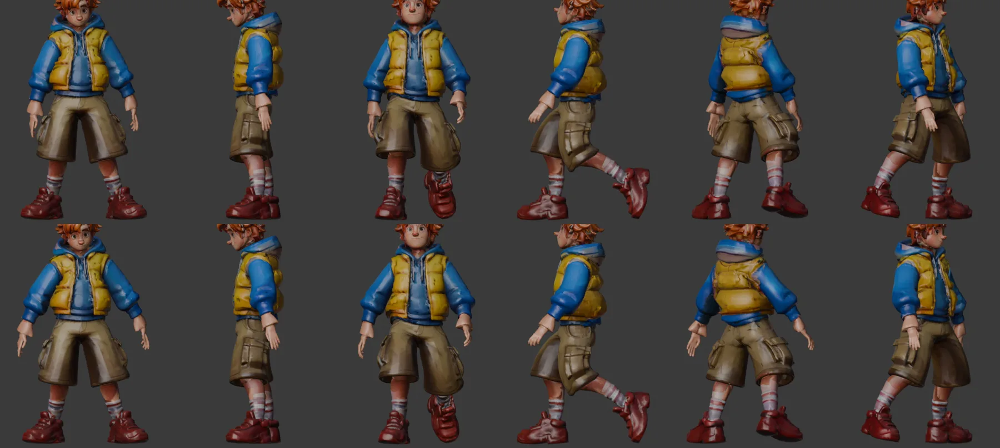
4.11 Moves from generated video
The video. The character's reference image and a written move - timed beats: ready, the move, recovery - go to the community Ref2VA fine-tune [69] based on MiniMax H3 [70], which returns 5.2 s at 24 fps of the character performing it (32-48 minutes on the laptop, E030); its text encoder and VAEs are supplied by a separate Comfy-Org package [71]. Because the performer is the character, its proportions are close to the rig's.
Retrieval. ViTPose [60] reads 17 points in every frame. The sequence is matched against a library of 2,453 captures from the pinned mirror [67] by dynamic time warping [68] of each clip's 2D projection from 16 camera angles, mirrored or not. In a self-test on 40 library clips shown from random angles with pose noise, a stretch and a speed change, the right clip or an exact duplicate ranked first every time, and the angle was off by 5.4° (median) E001.
The fit. A move the library lacks is approximated by its nearest capture, then bent toward the video bone by bone: each bone's direction in the image from the video, its depth from its length - kept from the capture where the two agree within the pose model's noise, and only when the capture misses the video by more than 1.2 times that noise E002. The bone lengths are the video's own, measured where the capture shows each bone flat to the camera E003: with a capture actor's lengths, Aoi's short torso bent into a 28° lean. Table 3 shows the trade-off on the self-test: on the actor's own body the capture's lengths are, as they must be, slightly better; on another body - the real case - the video's own lengths are clearly better. An arm's two depth signs are chosen together, so an elbow cannot bend past what the library's elbows ever do E007.
| 40 moves each | capture as retrieved | fit, capture's bone lengths | fit, the video's own lengths |
|---|---|---|---|
| in the library, the actor's own body | 0.031 | 0.025 | 0.024 |
| left out of the library, the actor's own body | 0.269 | 0.189 | 0.212 |
| in the library, another body | 0.132 | 0.216 | 0.129 |
| left out of the library, another body | 0.324 | 0.311 | 0.259 |
Onto the character, and refined. The fitted clip is retargeted by copying rotations and then aiming the character's own limbs, spine and head along the fitted bones, which removes rest-pose differences of 4-12° at the thighs and 16-27° at the collarbones E004. Finally the character's own skinned mesh is posed in PyTorch - forward kinematics mirroring Blender's - projected with the video's camera, and 20 bones a frame are optimised against the video in the manner of SMPLify [63], but on the character rather than a body model E005: the silhouette's chamfer both ways, the joints, the face points, DWPose's hands [61] (wrists, forearm twist and 30 finger joints E006), a prior to the fitted clip, smoothness, joint limits, and a bend limit at the elbow. The feet are then put back on the video's floor line E008.
4.12 Moves from words
The capture library has no salute, no boxing guard, no march. A video of the character doing the move works (Section 4.11) but takes half an hour of video generation per move. UniMate [93] generates a skeletal motion from a sentence for a skeleton it has never seen: a flow-matching model conditioned on the skeleton's topology and T-pose as well as on the text, encoded by Flan-T5 [113]. We run it on each character's own skeleton E129. UniMate's own preprocessing reads the packaged character - its canonical T-pose, its topology and its clips as motion features - through Blender 4.0 as a Python module, the version it was written for. Its sampler integrates the flow with an adaptive solver that needs double precision, which Apple's GPU lacks; a fixed 50-step Euler grid runs on the GPU in about 25 s per two-second move. UniMate's exporter writes an FBX on the character's canonical rig, and the move then goes through retargeting, foot planting and clearance (Section 4.9) like any captured clip. Two of our conventions broke it. Face-rig morph targets kept their old coordinates when UniMate moved the mesh into its canonical frame, so the export tore into ribbons even for the character's own clips; UniMate gets a copy without them, since it only makes bone motion. And its pruned skeleton ends at the toe bone, which the FBX importer drops as a leaf, so the generated moves went unplanted; the foot bone's tail now stands in for a missing toe.
Each move is sampled three times and the best kept by eye (Figure 18; automating the choice is E143). Prompts follow the wording of UniMate's training captions ("An object marches in place."): a longer, more specific sentence for the march and for looking around produced lunges and hands on the head, the short one a march.
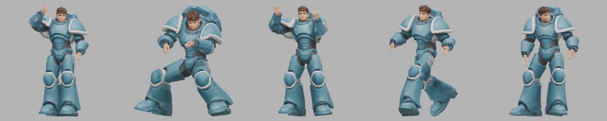
4.13 Running it on a laptop
Everything runs on a 24 GB M5 MacBook with shared memory. Two jobs on the GPU at once do not merely slow down: two refines corrupted each other's results (Aoi's silhouette 0.672 → 0.647, the kick's 0.733 → 0.485, where each alone reaches 0.82-0.86; one ended in NaN), and a 3D pass beside another job was stopped by the operating system's GPU watchdog. A machine-wide lock now serialises every GPU step of every job E023. The video model is a 33-billion-parameter model; running it here took rewriting its float8 scales for a GPU without float8 and merging its LoRA offline, since patching it at load doubled its memory E030. The Studio (Figure 19) queues jobs, survives its own restart mid-job, and shows each job's stage and time left.
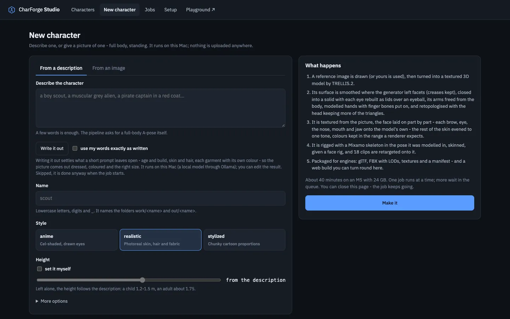
5 Evaluation
5.1 Measures
We measure what a player would see, in units that do not depend on the character's size.
- Joint error (moves from video): the character's clip is rendered at the video's own frame times from the video's camera angle; the same pose model [60] reads the video and the render, the hips are laid on each other frame by frame with one scale for the clip, and the mean distance between the twelve body joints is reported in the video's torso lengths (shoulders to hips; 0.05 is about 2.5 cm on an adult).
- Silhouette IoU: the render's outline against the video's figure, cut out by a salient-object model [98].
- Face error: nose, eyes and ears about their centre, in torso lengths - which way the head turns.
- Hands: DWPose [61] on both, each hand it is sure of; the 21 points about the wrist in palm lengths (mean and median), how often the palm faces the video's way, and the angle between the hands' pointing directions.
- Per stage: the same joint error for the fitted points, the FBX written from them, the character's own skeleton, and the pose model's reading of the render - which separates the rig's error from the scorer's.
- Four views: the clip rendered orthographically from the video's camera, the side and above, at one scale on a 10 cm grid, with each elbow's and knee's bend and each shoe's height above the floor read out per frame.
- Foot slip: while a foot is on the floor, how far its lowest vertex slides between frames, as a share of the gait's actual nonzero ground speed, driven by the playground's own controller; absolute slip in m/s is also retained. A percentage is undefined for a stationary gait. The historical table used a 1 m/s denominator floor and is provisional below that speed; Blender's corrected v2 path and the still-legacy browser audit also need contact-mask parity before the same-schedule rerun E029 E122. Sole depth remains a separate fixed-floor measure, not contact-conditioned penetration. Human perception thresholds from mannequin studies are rating-design evidence, not a universal pass value [77].
- Front silhouette IoU of a 3D model against its reference picture, rendered from the front.
- Aberrations E102: every frame of every clip of every character, on the mesh as the viewers deform it (dual quaternion skinning), against its rest pose. Faces crushed below half their rest area or stretched past twice it; faces sheared, turned more than 60° beyond their own bone; triangles that intersect although they were more than 3 cm apart at rest [114]; penetration, how deep one body region has gone inside another, counted as deep past 2 cm; vertices under the floor; and popping, a vertex whose offset from its neighbours spikes out and back within three frames. Each is assigned to the body region of the bone that dominates the surface there. Shares are of all faces, so characters compare directly.
5.2 Characters
Table 4 lists the 17 characters built so far - 17 in the public playground - with what each was made from and the checks this paper describes. 16 have a face rig; the others' faces could not be read and were refused (Section 4.7). Build times are in Table 1.
| character | style | made from | height | triangles LOD0 / 1 / 2 | face rig | clips | checks |
|---|---|---|---|---|---|---|---|
| Aoi | anime | “a young anime adventurer girl with a long high ponytail of…” | 1.62 m | 70,197 / 28,077 / 10,529 | jaw + 28 shapes | 19 | front 0.922 |
| Bo | stylized | “a cheerful cartoon chef with a tall white chef's hat, round glasses…” | 1.60 m | 59,894 / 23,956 / 8,984 | refused | 18 | front 0.931 |
| Scout | stylized | “a boy scout” | 1.20 m | 91,510 / 36,603 / 13,726 | jaw + 28 shapes | 18 | front 0.908, hands ×1.60 |
| Cadet | stylized | “a fresh-faced young space marine, about 19 years old, short messy…” | 1.75 m | 96,880 / 38,751 / 14,532 | jaw + 28 shapes | 24 | front 0.911 |
| Gray | stylized | “Gray Alien That is Extremely Muscular and looks like a gigachad” | 1.76 m | 102,514 / 41,005 / 15,376 | jaw + 28 shapes | 18 | front 0.931, hands ×1.60 |
| Hana | anime | “a cheerful young archer girl with a long brown ponytail, a red…” | 1.35 m | 73,036 / 29,213 / 10,955 | jaw + 14 shapes | 18 | front 0.897 |
| Juno | realistic | “a woman in a red hooded windbreaker, grey cargo trousers and black…” | 1.70 m | 73,585 / 29,434 / 11,037 | jaw + 28 shapes | 18 | front 0.924 |
| Kaito | anime | “an anime ninja boy with spiky black hair, a long red scarf, a…” | 1.70 m | 98,781 / 39,511 / 14,817 | jaw + 28 shapes | 18 | front 0.906 |
| Knight | realistic | “a young knight in dented steel plate armour over a blue surcoat…” | 1.80 m | 61,953 / 24,781 / 9,292 | jaw + 14 shapes | 18 | front 0.916 |
| Knight II | stylized | “a young knight in steel armor” | 1.85 m | 95,519 / 38,206 / 14,326 | jaw + 28 shapes | 18 | front 0.93 |
| Mara | realistic | “a young woman field researcher with a long dark brown braided…” | 1.68 m | 76,395 / 30,557 / 11,459 | jaw + 28 shapes | 20 | front 0.931 |
| Pip | stylized | “a cheerful cartoon courier with messy orange hair and freckles, a…” | 1.55 m | 90,224 / 36,089 / 13,533 | jaw + 28 shapes | 19 | front 0.921 |
| Ren | anime | “a calm young swordsman with short silver hair, a long dark green…” | 1.75 m | 80,435 / 32,173 / 12,065 | jaw + 28 shapes | 18 | front 0.899 |
| Rivet | stylized | “a cheerful young mechanic with grease-smudged blue overalls rolled…” | 1.75 m | 109,008 / 43,603 / 16,351 | jaw + 28 shapes | 18 | front 0.899, hands ×1.60 |
| Rowan | realistic | “a man in a green bomber jacket with medium-length wavy hair” | 1.78 m | 76,168 / 30,467 / 11,425 | jaw + 28 shapes | 18 | front 0.938 |
| Vex | stylized | an image | 1.72 m | 78,848 / 31,539 / 11,827 | jaw + 28 shapes | 18 | front 0.926 |
| Wren | realistic | “a woman in a brown leather jacket with a satchel and a braid” | 1.68 m | 74,267 / 29,706 / 11,140 | jaw + 28 shapes | 18 | front 0.934 |
5.3 Moves from video
Table 5 follows four moves in three styles from the first measurement to now. The first column is the pipeline as it was before this line of work (the nearest capture, retargeted), the second after fitting on the video's own body and aiming the character's limbs, the third after the refine stage, the hand terms and the floor. Silhouette overlap rose from 0.609-0.751 to 0.771-0.843. At rest the same models lie on their reference pictures at 0.90-0.93, so most of what remains is in the motion.
| move | start | own body + aimed limbs | now: joints · IoU | face | hands mean (median) | palm facing | max elbow |
|---|---|---|---|---|---|---|---|
| Mara · punch combo | 0.086 · 0.751 | 0.073 · 0.796 | 0.054 · 0.843 | 0.012 | 0.20 (0.17) | 97% | 149° |
| Mara · roundhouse kick | 0.187 · 0.622 | 0.121 · 0.747 | 0.071 · 0.831 0.049 without 7 misread frames | 0.013 | 0.14 (0.12) | 100% | 150° |
| Aoi · spell cast | 0.214 · 0.609 | 0.167 · 0.651 | 0.119 · 0.771 | 0.032 | 0.30 (0.15) | 97% | 151° |
| Pip · victory cheer | 0.127 · 0.616 | 0.114 · 0.714 | 0.068 · 0.818 | 0.020 | 0.20 (0.19) | 99% | 130° |
The hands show why means alone mislead. Aoi's hand error is 0.30 palm lengths in the mean but 0.15 in the median: in about twenty frames her jacket sleeve, which rides the upper arm, sticks out past her bent elbow, and DWPose reads the sleeve's light lining as her hand. That is a skinning limit, not a hand error (Section 8).
Table 6 breaks each move's error down by stage. The fit is close to the video everywhere (0.054-0.119 after the refine, 0.037-0.039 for the fitted points); writing it as an FBX and moving it onto the character adds error, mostly the capture's and the character's body proportions. The last column counts frames where the pose model's reading of the render disagrees with the rig's own skeleton by more than 0.3 torso lengths - the scorer's error, not the rig's (Section 5.12).
| move | fit | FBX | rig skeleton | render (read) | misread frames |
|---|---|---|---|---|---|
| Mara · punch combo | 0.037 | 0.060 | 0.056 | 0.050 | 0 |
| Mara · roundhouse kick | 0.039 | 0.068 | 0.076 | 0.071 | 7 |
| Aoi · spell cast | 0.039 | 0.100 | 0.125 | 0.122 | 0 |
| Pip · victory cheer | 0.045 | 0.091 | 0.055 | 0.070 | 0 |
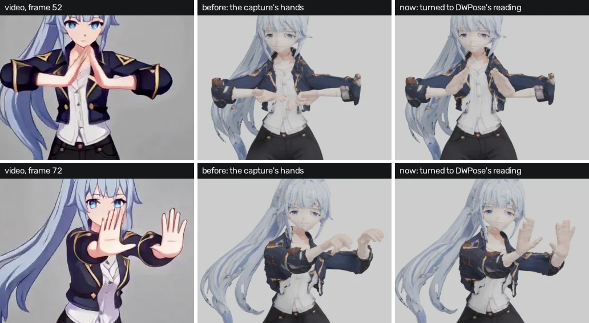
5.4 Seeing every move from four sides
One camera cannot see depth. A clip can match its video from the video's angle while an arm folds back through itself behind the figure. We render every move from the video's camera, the side and above at once, beside the video, with the joints read out (Figure 21) E009. It found three faults the scores had missed: Aoi's elbow bent to 176° (the forearm back through the upper arm) for 16 frames, now held at 150° E007; the feet of every move standing off the floor after the refine, Aoi's lowest shoe 3.1 cm up on average, now 0.6 cm E008; and a comparison video running 25% fast E010. It also cleared the rig of a fault the score seemed to show E011.
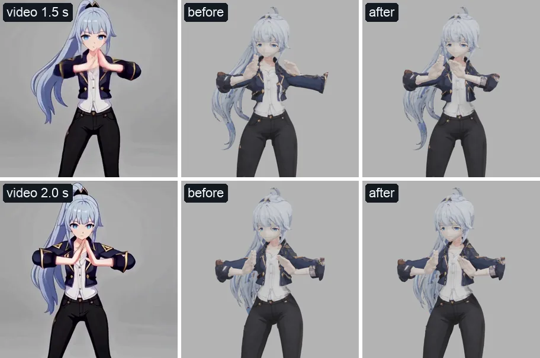
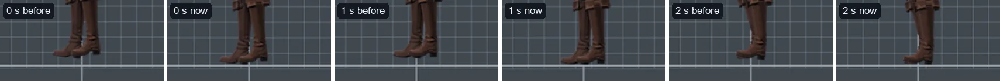
5.5 Feet
Foot slip is measured on the deformed shoe while the playground's controller carries the character forward at the
clip's ground speed: the horizontal speed of the lowest shoe vertex while it touches the floor (within 4 mm), as a
share of the gait's true ground speed, and in metres per second (blender/foot_audit.py, metric v2). On
17 characters and nine gaits the worse foot slides a median 3.2% of ground speed, a mean
4.2%, and at worst 28.3% (Table 7). Walking backwards is now the worst gait, at most
10.4% on every character but one. The exception is Cadet: his sprint slides
28.4% and his left strafe 19.1%, the same with or without
clearance. His flared greaves come down to within a few centimetres of the floor and are weighted to the ankle, so
their rims are planted as if they were the sole: as the ankle flexes a rim holds the floor and the sole floats
millimetres above it, and the audit finds his feet down in 8% of sprint keys against a
median 24% for the others. Planting only the shoe's contact patch is the next
experiment E131.
Which surface of the shoe is planted changes this E130. With a rigid copy of the sole carried on the ankle bone, the 13 characters measured before slid a median 4.01% (mean 4.73%). Posing the whole shoe by its own skin weights but thinning it to 400 points brought the median to 3.64%, and made 12 of the 117 gaits worse by more than a point: walking backwards, Juno 6.0% → 11.4% and Knight2 9.1% → 14.7%; Pip strafing left 15.3% → 20.5%. Their ground speeds were unchanged; the contact slid. Thinned, the lowest point of the shoe jumped from one sample to the next as the foot rolled, and the planted pivot jumped with it. With every vertex the median is 2.89% (mean 3.59%): 39 gaits better than with the rigid sole by more than a point, 2 worse, and the three above at 6.0%, 6.9% and 7.8%. Cadet, whose armoured boots started it, had a boot more than 1 cm under the floor in 48.3% of his frames with the rigid sole, 1.88% thinned, and 1.28% now.
| gait | Aoi | Bo | Scout | Cadet | Gray | Hana | Juno | Kaito | Knight | Knight II | Mara | Pip | Ren | Rivet | Rowan | Vex | Wren |
|---|---|---|---|---|---|---|---|---|---|---|---|---|---|---|---|---|---|
| walk | 1.5% | 3.2% | 2.8% | 6.4% | 2.1% | 1.5% | 3.0% | 1.1% | 1.4% | 1.8% | 3.3% | 2.9% | 2.5% | 1.8% | 2.0% | 2.7% | 2.1% |
| jog | 1.9% | 2.7% | 2.5% | 6.1% | 2.8% | 2.1% | 3.1% | 3.2% | 1.5% | 2.6% | 2.6% | 2.8% | 3.2% | 2.3% | 1.8% | 2.4% | 2.1% |
| run | 1.7% | 3.3% | 4.1% | 11.0% | 1.3% | 1.6% | 3.5% | 1.3% | 0.9% | 3.4% | 4.0% | 3.1% | 1.6% | 1.6% | 2.5% | 1.4% | 2.6% |
| sprint | 0.8% | 5.0% | 4.3% | 28.3% | 2.7% | 1.9% | 4.0% | 1.0% | 2.0% | 5.5% | 4.8% | 3.5% | 2.0% | 1.6% | 1.8% | 2.8% | 2.0% |
| walk back | 3.4% | 11.8% | 8.3% | 11.2% | 7.5% | 4.4% | 6.3% | 6.7% | 7.9% | 9.6% | 6.7% | 6.7% | 5.7% | 7.9% | 8.0% | 3.8% | 6.8% |
| jog back | 1.1% | 4.4% | 4.5% | 15.4% | 3.0% | 4.7% | 2.6% | 1.8% | 4.4% | 2.7% | 4.0% | 6.8% | 4.6% | 3.1% | 4.4% | 2.9% | 2.7% |
| strafe left | 1.9% | 9.1% | 7.0% | 16.0% | 4.3% | 2.3% | 4.6% | 4.4% | 5.9% | 5.5% | 3.9% | 7.8% | 3.3% | 6.3% | 4.8% | 3.4% | 4.5% |
| strafe right | 1.9% | 9.1% | 5.7% | 16.0% | 3.7% | 2.4% | 4.8% | 4.3% | 5.6% | 5.5% | 3.9% | 7.8% | 3.2% | 5.9% | 4.7% | 3.2% | 4.2% |
| crouch walk | 1.1% | 4.1% | 2.8% | 7.9% | 1.9% | 1.4% | 2.5% | 2.7% | 1.7% | 2.1% | 2.2% | 3.0% | 3.1% | 2.1% | 1.7% | 2.7% | 1.6% |
| deepest shoe through the floor | 0.0 cm | 0.0 cm | 0.0 cm | 0.4 cm | 0.0 cm | 0.0 cm | 0.0 cm | 0.0 cm | 0.0 cm | 0.0 cm | 0.7 cm | 0.0 cm | 0.2 cm | 0.0 cm | 0.0 cm | 0.0 cm | 0.0 cm |
blender/foot_audit.py metric v2,
work/<name>/qa/feet_v2.json). Above 10% in red. The last row is how far the deepest shoe goes
through the floor. The table this replaces, which divided by at least 1 m/s, is in Appendix D; the browser's own
slip readout is still a different estimand E122.5.6 Aberrations
The aberration audit was checked before it was believed. A synthetic character (a box torso and an arm on two bones with a blended elbow) was built with aberrations of known size, and 22 of 22 checks pass under both skinnings (Table 8): nothing where nothing moves; exactly the share of faces built to be crushed or stretched; the floor at −3 cm; a one-frame pop found on its own frame and a fast smooth bend not called one; and penetrations of 0.5, 1, 2 and 5 cm measured to the millimetre. Three of these checks failed first, and each failure was an error that would have misled the measurements of real characters (Section 5.12). One-frame pops are only seen on the frames sampled, so the audit samples every frame; that costs a fifth more time than every second one.
| built in | measured (DQS) | result |
|---|---|---|
| still: every measure zero | all zero | pass (DQS, LBS) |
| squash: torso top+bottom crushed | 12.30% vs 12.30% | pass (DQS, LBS) |
| stretch: torso top+bottom stretched | 12.30% vs 12.30% | pass (DQS, LBS) |
| sink: floor every frame, lowest -3 cm | 100.0% of frames, -3.0 cm | pass (DQS, LBS) |
| pop: popping at the popped frame only | frames [10] | pass (DQS, LBS) |
| bend: a fast smooth bend is not popping | frames [] | pass (DQS, LBS) |
| push: penetration 0.5 cm | 0.50-0.50 cm | pass (DQS, LBS) |
| push: penetration 1 cm | 1.00-1.00 cm | pass (DQS, LBS) |
| push: penetration 2 cm | 2.00-2.00 cm | pass (DQS, LBS) |
| push: penetration 5 cm | 5.00-5.00 cm | pass (DQS, LBS) |
| push: rigid, so nothing crushed/stretched/sheared/popping | pass (DQS, LBS) |
On the 17 characters, before clearance, 2.72% of faces were crushed, 1.52% stretched and 2.71% sheared, averaged over clips and characters. Crouch walk, the clip furthest from a standing pose, is among the two worst for every character; the other is the sprint or a strafe. Most crushed faces are out of sight: of the flagged faces, a ray along the normal escapes the character for only 26-45% (an armpit collapses under the arm). Dual quaternion skinning, the playground's, crushes fewer faces than linear skinning, the glTF default (2.72% against 3.51%), and stretches more (1.52% against 1.32%): it keeps the volume that linear blending loses, and a joint bulges instead [42]. Penetration was the most common aberration: in 48% of frames, on average, one body region was more than 2 cm inside another (50% counting arms through hair, which the head's region includes).
Holding the clips inside each character's joint limits (Section 4.9) brings that to 29% (30% with hair), and solving every frame against the character's own surface (Section 4.10) then to 5% (6% with hair); the deepest penetration between body regions, averaged over clips, goes from 3.89 to 2.71 and then 1.44 cm (Table 9). Clearance itself raised no character's crushed, stretched or sheared share and added no pop (one hand pop already in Wren's sprint came to straddle two frames) E128, and the contact solve, measured alone, changed those shares by at most 0.04 points and added no pop E151. Against the clips after clearance, this version - the contact solve with its second look and the skin weights chosen at the extreme poses (Section 4.6) - crushes fewer faces on every character (0.92% to 0.74% on average); stretched faces rise on four characters (Juno most, 1.29% to 1.40%), sheared on six by at most 0.05 points, and pops on three (Rivet's 7 to 13, in his crouch walk and jog, not traced yet). The planted feet do not move: Bo's foot slip on walk, jog, run and sprint is identical to the fourth decimal before and after. The largest single turn clearance makes is 7-53° per character, and armour takes the most: Cadet's knee plates meet at 105° of bend, so his sprint's swinging knee, bent 159° in the capture, is opened by up to 53° - a stiffer-legged sprint, plates meeting instead of passing through each other.
| character | frames with >2 cm penetration | … counting hair | deepest body penetration, cm (clip mean) | crushed | stretched | sheared | largest turn | worst clips (surface) |
|---|---|---|---|---|---|---|---|---|
| Aoi | 35% → 4% | 44% → 10% | 3.1 → 1.4 | 0.85% → 0.82% | 1.73% → 1.09% | 1.84% → 1.28% | 16° | crouch walk, sprint |
| Bo | 56% → 1% | 56% → 2% | 3.3 → 0.7 | 3.16% → 0.86% | 0.88% → 1.60% | 2.15% → 1.61% | 10° | crouch walk, strafe left |
| Gray | 60% → 2% | 60% → 2% | 4.3 → 1.2 | 2.77% → 0.56% | 1.07% → 1.08% | 2.48% → 1.09% | 33° | crouch walk, sprint |
| Juno | 36% → 1% | 36% → 1% | 3.2 → 0.6 | 4.06% → 0.72% | 1.20% → 1.39% | 2.63% → 1.59% | 14° | crouch walk, sprint |
| Kaito | 18% → 1% | 19% → 1% | 2.3 → 0.6 | 1.54% → 0.92% | 1.46% → 1.87% | 2.01% → 2.02% | 7° | crouch walk, strafe right |
| Knight | 47% → 1% | 47% → 1% | 3.3 → 0.9 | 1.82% → 0.79% | 2.02% → 1.28% | 2.89% → 1.66% | 21° | crouch walk, sprint |
| Knight II | 40% → 1% | 40% → 1% | 3.6 → 0.6 | 6.25% → 0.73% | 1.92% → 1.81% | 4.78% → 1.30% | 36° | crouch walk, sprint |
| Mara | 29% → 2% | 35% → 2% | 3.2 → 1.5 | 2.83% → 0.74% | 1.00% → 1.07% | 2.67% → 1.38% | 13° | crouch walk, sprint |
| Pip | 73% → 7% | 73% → 7% | 6.3 → 1.6 | 1.89% → 0.83% | 1.73% → 2.02% | 1.71% → 1.62% | 19° | crouch walk, fall |
| Rowan | 79% → 2% | 79% → 2% | 6.1 → 0.9 | 2.30% → 0.70% | 1.07% → 1.25% | 2.17% → 1.49% | 12° | crouch walk, fall |
| Scout | 7% → 0% | 7% → 1% | 1.5 → 0.5 | 2.67% → 0.81% | 1.75% → 1.19% | 3.73% → 1.36% | 15° | crouch walk, sprint |
| Vex | 70% → 8% | 71% → 9% | 4.6 → 2.2 | 2.75% → 0.57% | 2.14% → 1.95% | 3.55% → 1.51% | 15° | fall, sprint |
| Wren | 80% → 35% | 80% → 35% | 5.7 → 3.9 | 2.53% → 0.70% | 1.84% → 1.88% | 2.57% → 1.93% | 14° | crouch walk, sprint |
What clearance leaves is what a single joint's limit cannot see: hands swinging into thighs that are themselves moving (the limits are measured with the legs at rest), legs brushing past each other in strafes, arms through long hair, which is a job for the hair's own spring chains E125, and knees through a long coat's hem, which needs the hem to follow the thighs.
5.7 Extreme poses
The 18 clips never put the arms overhead or across the chest, or squat deeply, and a neutral stance hides what skinning does
there: practitioners' rigging guides ask for checks at extreme poses for that reason, and the open
reference-asset-compiler [25] gates its rigging on a five-pose deformation suite E153.
blender/deform_suite.py writes ten held poses into a copy of each rig - arms overhead, forward, across the
chest and behind; a deep squat; a bend with a twist; a high kick; the head turned hard; and, for the feet, on tiptoe and at
heel strike, added when softer weights bled a boot's ankle in a run that the first eight could not see - each turn signed by which way it
moves its child joint, so no knowledge of a rig's bone axes is needed, and the audit measures them like clips
(Table 10). Skin is mostly sound at the extremes: over 17 characters the median stretches
1.31% of its faces with the arms overhead and crushes
0.43% with the forearms across the chest. The tail is the finding.
Vex stretches 4.7% of its faces
with the arms overhead, three to four times the median, and the worst for arms forward is
Vex (2.86% sheared): the characters in loose
jackets and armour, at the torso and upper arm beside the armpit, where a jacket is pulled up with the arm. Penetration
at these poses is geometry, not skinning: the forearms across the chest go
7.73 cm into a median torso, and a thicker one takes more. Shares are of all
faces, so they compare only between rigs with the same face count: the face rig adds 18,196 faces to Vex's 59,617 and
dilutes every share by 23%.
| pose | stretched faces % | sheared faces % | crushed faces % | deepest penetration, median cm | |||
|---|---|---|---|---|---|---|---|
| median | worst | median | worst | median | worst | ||
| arms overhead | 1.31 | 4.70 (Vex) | 1.51 | 2.95 (Vex) | 0.25 | 0.46 (Vex) | 0.0 |
| arms forward | 0.85 | 1.85 (Vex) | 0.99 | 2.86 (Vex) | 0.27 | 0.94 (Bo) | 0.0 |
| forearms across the chest | 0.74 | 1.42 (Vex) | 0.73 | 1.42 (Vex) | 0.43 | 1.02 (Bo) | 7.7 |
| arms behind | 0.44 | 1.09 (Vex) | 0.49 | 1.00 (Vex) | 0.20 | 0.32 (Cadet) | 0.0 |
| deep squat | 1.02 | 1.80 (Pip) | 1.41 | 3.14 (Knight) | 0.60 | 1.26 (Knight) | 6.3 |
| bend and twist | 0.29 | 0.95 (Vex) | 0.30 | 0.80 (Vex) | 0.21 | 0.32 (Rowan) | 0.0 |
| high kick | 0.52 | 1.41 (Knight) | 0.69 | 1.45 (Knight) | 0.17 | 0.42 (Knight) | 0.0 |
| head turned hard | 0.39 | 1.45 (Knight II) | 0.36 | 0.79 (Kaito) | 0.12 | 0.41 (Kaito) | 0.0 |
| tiptoe | 0.06 | 0.18 (Cadet) | 0.05 | 0.19 (Bo) | 0.09 | 0.34 (Bo) | 0.0 |
| heel strike | 0.07 | 0.23 (Pip) | 0.09 | 0.25 (Juno) | 0.06 | 0.12 (Hana) | 0.0 |
The battery is also what chooses each character's skin weights (Section 4.6): the default falloff and a hybrid, soft on the body and default on the legs, are rigged and posed, and the hybrid is kept when it is at least 0.1 points better on average and no pose is more than 0.3 worse (Table 11). It cannot choose alone. Two weightings it preferred - the learned weights of Make-It-Animatable E157 and distance measured from each part's surface E159 - held Vex's faces in shape at the extremes and in her clips let her arms sink into her jacket two to three times as often, while the second improved every clip measure of Pip's; the battery's own penetration did not tell the two apart, so the clips will have to decide (Section 10).
| character | default falloff | hybrid | Make-It-Animatable | kept |
|---|---|---|---|---|
| Aoi | 1.12 | 1.06 | - | sharp |
| Bo | 2.93 | 2.25 | - | hybrid |
| Scout | 1.94 | 1.98 | - | sharp |
| Cadet | 3.29 | 2.62 | 4.05 | hybrid |
| Gray | 2.23 | 2.05 | 1.74 | hybrid |
| Hana | 1.89 | 1.82 | - | sharp |
| Juno | 2.02 | 1.84 | 1.65 | hybrid |
| Kaito | 1.25 | 1.23 | 1.09 | sharp |
| Knight | 2.26 | 2.01 | - | hybrid |
| Knight II | 2.51 | 2.14 | - | hybrid |
| Mara | 2.10 | 1.84 | 1.56 | hybrid |
| Pip | 2.54 | 2.44 | 1.91 | sharp |
| Ren | 1.13 | 1.20 | - | sharp |
| Rivet | 1.84 | 1.80 | - | sharp |
| Rowan | 3.80 | 2.78 | - | hybrid |
| Vex | 4.35 | 3.25 | 2.80 | hybrid |
| Wren | 2.54 | 2.31 | - | hybrid |
5.8 Against professionally made models
The measures above are of motion and deformation. Whether a model looks professionally made is measured by a model-quality audit run the same way on every character and on professionally made meshes E132: Blender Studio's Human Base Meshes [115] and Ellie from the open film Sprite Fright [116]. Shape, on the shipped low-poly at the character's height: noise, how far each surface point's normal turns from the mean normal within 1 cm; lumps, how far the surface within 4 cm departs from the quadric that fits it best, the worst quarter left out so a designed crease does not count; triangle tilt, how far each triangle leans against the smooth normals at its corners - what a normal map has to correct; asymmetry, the mirrored surface's distance to the surface about the best mirror plane; open edges and loose pieces. Texture: lighting left in the albedo, the same garment's colour where it faces front and back (CIEDE2000), the colour step across UV seams, and the PBR range. The professional bodies score noise 0.74-0.83°, lumps 0.20-0.27 mm and asymmetry 1.4-1.5 mm, with no open edges and one piece. Ellie, a layered production character, scores noise 2.98° and lumps 1.73 mm: folds and hair are designed detail, and the audit cannot yet tell them from noise, so a garment needs comparing with garments.
Table 12 scores each character's shipped model as version 0.11 built it and as rebuilt on this version's defaults - the finer surface (Section 4.3), the loose shards dropped, the hands and the skin, the albedo range (Section 4.5). Over the 9 characters, the median noise went from 3.07° to 2.92°, lumps from 1.05 to 0.94 mm, triangle tilt from 15.7° to 14.8°, open edges from 11.0 to 5.8 per 10,000 triangles and loose pieces from 13 to 1; the same garment's colour front and back from dE 2.23 to 1.79. The low-poly's numbers move less than the renders do - the solid and the decimation set it - and the gap to the professional meshes remains two to four times on noise and lumps: the visible gain of the finer surface is in the normal map (Figure 5).
| character | noise, deg | lumps, mm | triangle tilt, deg | asymmetry, mm | open edges /10k | loose pieces | front/back dE | seam dE |
|---|---|---|---|---|---|---|---|---|
| Aoi | 3.31 → 3.43 | 0.79 → 0.82 | 18.6 → 16.4 | 3.6 → 10.3 | 20.3 → 18.9 | 13 → 1 | 2.25 → 1.50 | 1.10 → 1.27 |
| Cadet | 1.93 → 1.92 | 1.26 → 1.22 | 20.7 → 20.4 | 2.8 → 24.4 | 41.0 → 51.9 | 78 → 112 | 4.15 → 3.58 | 1.15 → 1.36 |
| Gray | 2.08 → 1.88 | 0.91 → 0.82 | 11.9 → 10.5 | 6.2 → 11.3 | 11.0 → 0.3 | 13 → 3 | 0.72 → 1.12 | 0.65 → 0.59 |
| Kaito | 3.02 → 2.92 | 0.97 → 0.84 | 14.3 → 15.1 | 6.7 → 3.0 | 3.8 → 5.5 | 10 → 1 | 1.08 → 1.36 | 0.58 → 0.66 |
| Knight | 3.55 → 3.27 | 1.21 → 1.13 | 21.4 → 20.2 | 19.1 → 7.4 | 40.0 → 22.1 | 27 → 1 | 1.48 → 1.78 | 1.53 → 1.41 |
| Knight II | 3.07 → 2.30 | 1.72 → 1.26 | 25.1 → 14.8 | 3.1 → 2.3 | 60.8 → 4.0 | 95 → 1 | 2.23 → 3.30 | 1.36 → 1.24 |
| Mara | 3.45 → 3.12 | 1.05 → 0.94 | 15.7 → 13.2 | 4.9 → 36.3 | 8.2 → 8.5 | 7 → 2 | 3.33 → 1.98 | 1.14 → 1.27 |
| Pip | 2.33 → 2.54 | 1.05 → 1.01 | 15.4 → 14.8 | 2.3 → 1.9 | 5.0 → 5.0 | 4 → 1 | 5.69 → 3.29 | 0.86 → 1.08 |
| Scout | 3.14 → 3.25 | 0.56 → 0.51 | 14.8 → 11.4 | 26.1 → 25.8 | 5.0 → 5.8 | 3 → 1 | 2.23 → 1.79 | 0.83 → 0.91 |
| Ellie (Sprite Fright) | 2.98 | 1.73 | - | 3.2 | 245.6 | 108 | - | - |
| Human Base Mesh, female realistic | 0.80 | 0.20 | - | 1.5 | 0.0 | 1 | - | - |
| Human Base Mesh, female stylized | 0.74 | 0.20 | - | 1.4 | 0.0 | 1 | - | - |
| Human Base Mesh, male realistic | 0.83 | 0.24 | - | 1.5 | 0.0 | 1 | - | - |
| Human Base Mesh, male stylized | 0.77 | 0.27 | - | 1.4 | 0.0 | 1 | - | - |
Close-ups. A whole model's averages moved little between builds that look very different close up, so every character was rendered in eight lit close-ups - face, three-quarter, a hand from above and both hanging, a shoulder, the upper back, a foot - and each fault listed E138 (Figure 24). On the fourteen version 0.11 builds: faces blotched where the picture is projected onto a face shaped unlike it (nine), shoulders and armpits torn by the T bake (five), two-toned hands (most), rings at bare wrists, a skin-coloured bell at Pip's wrists where the hand was cut beyond his flared cuff, dark streaks in hair, and floating debris (all). Hands, wrists, debris and shoulders are mended above, faces taken part by part below (Section 5.9); hair and Pip's wrists are open (Section 8).
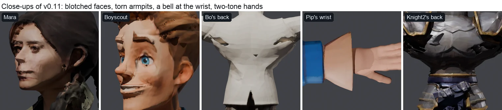
5.9 Faces, on a benchmark set
Faces are judged on a benchmark set rather than the whole roster: two characters for each style and gender - realistic Mara, Juno, Rowan and Knight, stylised Vex, Rivet, Pip and Cadet, anime Aoi, Hana, Kaito and Ren - chosen to differ (hair over the face, a helmet collar, a drawn smile, painted eyes) so a change that helps one kind and hurts another shows E140. Each face is rendered from the front in soft light and scored against its picture two ways. Landmark error: DWPose's 68 face points [61] on the render are fitted onto the picture's by one similarity [106] (the render is framed differently) and the mean distance left, as a share of the eye spacing, is the NME of face alignment. It is not enough: Mara's smeared, squinting version 0.12 face had every point within 3% of the picture's, because a smeared eye is still where an eye should be. Likeness: the render is laid onto the picture by those points and the whole face, the eyes, the nose and the mouth are compared by the cosine of their DINOv3 features [12], robust to the render's light but not to a smeared lid. Over the 10 characters with a version 0.12 build to compare, the median likeness of the eyes went from 0.63 to 0.69 (7 better), of the whole face from 0.67 to 0.71 (9 better), of the mouth from 0.53 to 0.64 (9 better), and the landmark error from 3.2% to 2.7% (Table 13, Figure 25). The gain is the realistic faces': their eyes from 0.51 to 0.63 and whole faces from 0.59 to 0.65, where every part had been misplaced and the eyes were pits. Stylised faces held (0.72 and 0.73) and so did anime (0.82 and 0.83): drawn features were already roughly where the generator sculpts them, one of the eight cannot be read on the model at all (Aoi's eyes are drawn too large; Vex's could not be until her model was made again without the second face on the back of her head, E145), and the faces left wrong are wrong in shape - Ren's head longer than his picture's. On the same characters the rest of the model held: median surface noise 2.62° in version 0.12 and 2.77° now, asymmetry 3.7 and 2.1 mm, faces crushed during the clips 1.15% and 0.97%, foot slip 2.6% and 2.8% of the ground speed; frames with a part deep in another moved by -1.9 to +8.7 points a character (a mean of 2.6): the largest, Vex's, is her arms 2-5 cm into her torso in most clips, at the audit's 2 cm line, and her first rebuild of this round had scored 45.9% against version 0.12's 46.4%.
| character | style | landmark error (NME) | likeness: face | eyes | nose | mouth | eyes rebuilt |
|---|---|---|---|---|---|---|---|
| Juno | realistic, female | 0.032 → 0.024 | 0.54 → 0.59 | 0.53 → 0.67 | 0.56 → 0.68 | 0.47 → 0.58 | 2 of 2 |
| Mara | realistic, female | 0.027 → 0.028 | 0.60 → 0.65 | 0.50 → 0.58 | 0.47 → 0.64 | 0.42 → 0.68 | 2 of 2 |
| Knight | realistic, male | 0.052 → 0.038 | 0.63 → 0.75 | 0.59 → 0.79 | 0.63 → 0.76 | 0.52 → 0.62 | 2 of 2 |
| Rowan | realistic, male | 0.031 → 0.026 | 0.59 → 0.64 | 0.47 → 0.50 | 0.41 → 0.49 | 0.45 → 0.61 | 2 of 2 |
| Rivet | stylised, female | 0.028 → 0.025 | 0.70 → 0.68 | 0.72 → 0.70 | 0.71 → 0.64 | 0.59 → 0.71 | 2 of 2 |
| Vex | stylised, female | 0.064 → 0.025 | 0.61 → 0.66 | 0.48 → 0.61 | 0.58 → 0.56 | 0.36 → 0.51 | 2 of 2 |
| Cadet | stylised, male | 0.037 → 0.050 | 0.74 → 0.77 | 0.67 → 0.63 | 0.64 → 0.55 | 0.75 → 0.70 | 2 of 2 |
| Pip | stylised, male | 0.024 → 0.020 | 0.82 → 0.88 | 0.77 → 0.80 | 0.72 → 0.75 | 0.71 → 0.78 | 2 of 2 |
| Aoi | anime, female | 0.041 → 0.044 | 0.83 → 0.83 | 0.77 → 0.77 | 0.83 → 0.83 | 0.54 → 0.60 | as generated |
| Hana | anime, female | 0.026 | 0.83 | 0.70 | 0.74 | 0.32 | 2 of 2 |
| Kaito | anime, male | 0.030 → 0.029 | 0.81 → 0.82 | 0.88 → 0.82 | 0.88 → 0.79 | 0.61 → 0.65 | 2 of 2 |
| Ren | anime, male | 0.051 | 0.84 | 0.85 | 0.70 | 0.38 | 2 of 2 |
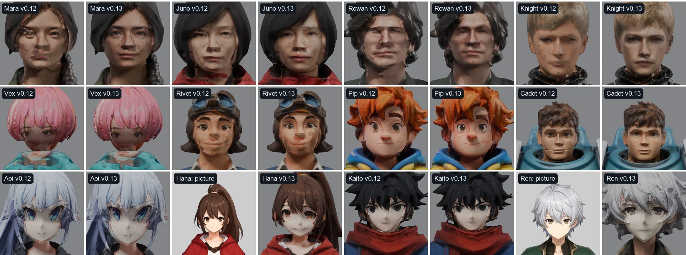
5.10 Checks a person would make
Two faults shipped that a person saw at a glance and no measure caught: five characters without a right hand, and one with a face on the back of her head. Both are now measured - every modelled fingertip looked for on the low-poly, and a face read on the back of the head E145 E146 - and close-ups of every character's hands, back and back of head are rendered for review. Whether a local vision model can do the looking was measured on the user's own library (LM Studio) E144. Every vision-capable 9B model there read a picture correctly (hair colour, 10 of 10) and told a hand from a stump on 33-34 of 34 close-ups, the five missing hands among them; none picked a move's best sample better than chance. Asked for any defect, the two best found every one labelled by eye - Vex's second face, the pits in three characters' hair, the notches on eight backs - and flagged a third to all of the clean ones too E147. They are used for triage, which close-ups to open first; the measured checks are the gates.
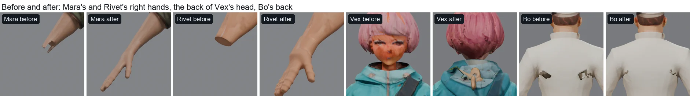
5.11 Moves from words
Cadet's 6 generated moves - the five above and a bow made from the Studio's panel - were audited like his 18 captured ones E129. On the surface they fall inside the captured clips' range: 3.18-4.09% of faces crushed against 1.47-4.96%, 0.61-2.76% stretched against 0.97-4.7%, 1.85-3.74% sheared against 1.83-5.01%, and no pops. The feet were the problem. Before the toe bone was recovered and the shoe planted as the viewer shows it E130, the moves meant to stand still slid: the salute's feet at 0.065 m/s, the ready stance's at 0.579 m/s, against 0.001 m/s for the captured idle. After, 0.002 and 0.088 m/s. The march still slides (0.861 m/s): a high-knee stomp scrapes the toe at every lift and landing, which planting a contact does not remove. Three of the five moves came out as asked on the first wording; the march and looking around needed the short, caption-like one. Generation takes about 25 s per move on the GPU and 11 s to export, against half an hour of video for a move from video; choosing among three samples is still done by eye. Three ways of automating it were measured against the picks made by eye on Cadet's six moves, and none beat chance E143: local vision-language models shown the samples side by side (6-7 of 18 trials, answering by a row's place, not its content); a 9B vision model describing each sample and Jev judging the description (1 of 6); and the skeleton's own motion written up as measured facts for Jev to judge (2 of 6) - exact where vision was not, but the samples differ too subtly for six cases to show it.
5.12 Validity of the measurements
Several of the largest errors we found were in the measuring, not the pipeline. We list them because each would have sent the work in the wrong direction.
- The comparison ran fast E010. The side-by-side and four-view videos resampled the 24 fps video to the renders' 30 fps by taking each video frame once, never twice, so the video played 25% fast and then stood still: the rig seemed to punch 0.2 s late, more as the clip went on. The fidelity score was unaffected, since it renders the rig at the video's own times.
- The scorer misread the render E011. Mara's kick scored 0.071, with a dip to 0.46 at the top of the kick that read as the rig folding its leg. Held against the rig's own skeleton, the pose model's reading of the render was wrong in 7 frames (the skeleton was 0.12-0.14 from the video there, as elsewhere); without them the kick scores 0.049. The four views confirm the leg is at head height.
- Face positions in stairs E019: 3.9 mm quantisation from a half-float render target, found while tracing an unrelated seam.
- Stale caches: the per-stage tool kept its skeleton dumps forever and was scoring a rig two rebuilds old.
- Triangles that change under the audit E102: Blender splits a quad along its shorter diagonal in its current shape, so the synthetic elbow's quads re-split at 55° of bend and a comparison with rest compared different triangles. The audit now splits once, at rest.
- Depth that stopped at 3 cm: the first penetration search looked a fixed six vertex rings from the intersection and measured a 5 cm push as 3.1 cm. It now floods through every vertex that is still inside.
- Inside an open tube: a body region is an open patch (the upper arm is a tube open at both ends), and past its open end the nearest face's normal says nothing about inside. Aoi's bent forearm read 15.9 cm inside her upper arm; Vex's elbow read 15.7 cm at 105° of bend and 0 at 115°. A vertex now counts as inside only if it projects straight onto the face and a ray from it, deeper, leaves the region through its far wall; Vex's elbow then rises smoothly from 0 to 5 cm.
- Intersections are intersections: a review of the audit had renamed its intersecting pairs "broad-phase candidates". A two-triangle test shows Blender's overlap query is a triangle-triangle test after the box test (boxes that overlap without touching are not returned); what it cannot tell apart is contact from penetration, which is why depth is measured.
- Planting that switched itself off E129: foot planting needs the capture's toe bones, UniMate's pruned skeleton ends at them, and the FBX importer drops a final bone as a leaf. Nothing failed: the generated moves were simply never planted, and stood 3-19 cm into the floor, sliding. Retargeting now says so when it cannot plant.
- Planting the wrong surface E130: the planted sole was a rigid copy of the shoe carried on the ankle bone, and the audit measured the mesh. On an ordinary shoe the two agree; Cadet's boot blends with the shin above a high ankle, and the solve kept the copy on the floor while the boot on screen went 4.4 cm under it, in 48% of his frames. Posed by their own skin weights, with linear blending the points still sat a few centimetres above the boot the viewer draws; with dual quaternions, as the viewer skins, they match Blender's deformation within 0.01 mm.
Threats that remain: the joint and hand scores compare two readings by the same pose model, so its blind spots cancel as often as they show; everything is 2D against one camera, with depth checked only by eye in the four views; there are four moves, all from generated video of the character itself, not of people; and times include waits for the GPU. Recovering a known clip from a render of it - a 3D ground truth - is the first experiment of the next phase E101.
6 Negative results
Ideas that looked right and measured worse. Each is kept in the tracker so it is not tried again without new evidence.
| idea | measured | instead |
|---|---|---|
| Lift the video's 2D joints to 3D directly | 4x worse than the retrieved capture on moves the library has (0.022 → 0.088 torso lengths) | retrieve, then bend only where the capture misses by more than the noise E002 |
| Depth from the best of the top four captures | worse than the nearest capture's depth: agreeing in the image is not agreeing in depth | the nearest capture's depth |
| A three-quarter camera in the video prompt | no better than front or side over 40 held-out moves | a near-front camera, both arms in view |
| Extra views of the character for the 3D model | turntable IoU 0.781 → 0.786; disagreeing views averaged away a braid | kept only as a check E012 |
| Let the hand term swing the arm to point the hand | hands closer, silhouette −0.005 and Aoi's hands raised to her chin | wrist, forearm twist and fingers only E006 |
| Calibrate all 21 hand points to where DWPose sees them on the rig | worse where the offsets were small (Aoi 0.24 → 0.29) | calibrate the wrist only |
| Require a wrist in front of the torso in the image | from random cameras half of such wrists are behind the body - seen from its back | the rule in the body's own frame E007 |
| Tie Pip's vest to the chest, found by its colour | found exactly; tore the fused surface into streaks at the sleeve | cut the arm free, flood from past the cut E025 |
| Binary part masks for skin weights | surfaces tear where parts meet | smooth weights through the body; dual quaternions at runtime E024 |
| Repair folded UV islands on the shipped mesh down to single faces | atlas coverage 0.58 → 0.42: a third of the texture wasted | unwrap the overlapping faces again as islands E027 |
| Tell a jacket from trousers by the parser's classes | the parser gave the backs of three jackets to the trousers; a crouch showed a pale band | colour, where the garments differ |
| Force the face flow past its gate | Knight's eyes smeared into bands | keep the generator's face E022; since v0.13 the face laid on in parts E140 |
| Let ComfyUI apply the video model's LoRA | memory doubled; 20 minutes of swapping and no load | merge it offline E030 |
| Skip foot planting on clips from video | Pip's joints 0.114 → 0.128 | plant, then refine |
| Hunyuan3D-Paint's own bake of its views onto our meshes | 33-42% of the atlas covered on Apple Silicon, the rest filled in UV space into a patchwork | keep its views, fit and project them ourselves E134 |
| Hunyuan3D-Paint's views as every character's sides and back | the texture audit scored them better on most measures, but by eye 6 of 8 characters were worse: invented details, lost patterns | an option, used for Pip E134 |
| Delight the reference with Marigold's appearance model | erased Pip's painted eyes and brows as if they were lighting | Hunyuan's delighting model, as a smoothed lightness ratio E133 |
| Delight the reference's front on its own | the model also darkened the picture 10-42% (dull red, dull steel); with the level kept, the gain was slight | only inside the Hunyuan-views option E133 |
| Delight the face close-up | darker and more contrasty, not flatter: the model is trained on whole figures | one skin tone at the shading's scale E138 E139 |
| Quad remeshing (QuadriFlow) of the generated mesh or the solid | refused both: they are not manifold where it needs them to be | 1M faces and a filtered surface E135 |
| Bake the T into the rest pose with dual quaternions | the pauldron kept its shape slightly better; the armpit still tore into shards | keep the modelled pose as the rest E137 |
| Generate the head alone with TRELLIS.2 at 1024 | unfinished after 30 minutes against 8 for the whole figure: the head fills the grid | Hunyuan3D 2.1's shape model, 7-8 minutes E139 |
| Paint the head alone with Hunyuan3D-Paint | at the 256 px the port runs at here, a posterised face with blobs for eyes | project the picture E139 |
| More texels on the head (2.5x across) | no difference in close-ups at review size: the texture was not what made faces sloppy | kept, cheaply; the eyes' shape and the features' placement E140 |
| Find the model's facial features on a grey render of its shape | on a drawn face DWPose only guessed - it put Pip's mouth under his nose | read them on the generator's own paint E140 |
| An eyeball set behind the eye's opening, in the solid | decimated it looked like lids; on the shipped rig in soft light the opening was a slot with hard ledges, dark rings round Mara's eyes | a cap across the opening that follows the lids E140 |
| Put an eyeball into the generated mesh | voxelised whole, its sides bulged out of the face past the eye's corners | clear the opening and add the ball in the solid, where the opening shows it E140 |
| Find an anime model's eyes from the picture's, carried by the head's silhouette | landed high, and the model's openings were twice the picture's eyes | leave unread eyes as generated E140 |
| Find the eye openings as pits in the depth | the shards fill a realistic opening to the lids' depth; temples, nose and fringes break any fitted face | DWPose on the generator's paint E140 |
| Drop the picture's paint round the face wherever it and the model disagree on skin against hair | the generator's orange skin showed at Mara's temples, where the picture's hair over them had read as hair falling | one way only, experimental (--hairline) E140 |
| Lay an anime face on in parts | the parts moved up to a fifth of the face's width and Kaito's eyes came out wider than his picture's: the generator's paint, not the shape, set their size | anime keeps the picture's face as projected E140 |
| Take the crackle out of the generator's atlas as dark specks, or from the texels round them | the lines are grey on skin as well as dark, so a 2D speck filter missed most; a texel mended from its atlas neighbours took another chart's colour, and tiny triangles became grey blobs | rebuild the colour through the mesh's vertices and paint the atlas again at 4x E140 |
| Let a local vision-language model pick among a move's three samples | chance (6-7 of 18) for qwen2.5vl and gemma4, and the answer followed the row's place, not what it showed | picked by eye E143 |
| A 9B vision model describes each sample, Jev judges the description | the descriptions were fluent and wrong about the hands - 1 of 6; the model's own 0-10 rating was 5 for everything | picked by eye; skeleton facts are the route worth more work E143 |
| PixelUMM, a unified pixel-space model, in any stage | text-only generation at 256 px and 176 x 320, Linux and CUDA only, 15B parameters; its understanding at the 7-8B level that failed above | the stages' current models E142 |
| Check a hand's boolean union only by the volume not shrinking | a union that returned the body unchanged passed it: five characters shipped without a right hand | the volume must grow by a quarter of the hand's and the fingertips lie on the surface E146 |
| Boolean union with self-intersection handling as the fallback | it put the hand on, and added 3,000-7,000 non-manifold edges | join the hand as a shell after all unions E146 |
| Narrow the arm cut, measured from the arm's estimated radius | the notches stayed: the estimate itself lay inside the torso | give back what lies beyond the arm's own solid E146 |
| Fill pits in the back of the hair by how few directions they see out along | at fewer than 8 of 26 hardly a change; at fewer than 12 the hair became blobs; closing the hair 2-3x wider changed nothing | open E145 |
| A local vision model as a gate for defects | found all of them, and flagged a third to all of the clean close-ups | triage only; measured checks gate E147 |
| A vertex group at weight 0 to keep the head's triangles | weight 0 locks a vertex whatever the strength: the head kept all 137k and the body got 1.7k | weight 0.5 and a strength found by bisection E140 |
7 Comparison with other systems
Table 15 sets CharForge beside the systems and tools it is most often compared with, from each one's own paper or page. It is a comparison of what each does, not yet of how well: measured comparisons on the same characters are experiments E103 (auto-riggers) and E104 (generators).
| system | input | 3D from | pose handling | rig | skin weights | fingers | face | motion | runs |
|---|---|---|---|---|---|---|---|---|---|
| CharForge (ours) | few words or one image | TRELLIS.2 [1] | reference drawn in A-pose, checked (E028) | joints traced in the solid, Mixamo names | measured through the body [43] | modelled, 15 bones a hand | jaw + 5 shapes when eyes and mouth are found | 18 captures + moves from generated video | one laptop, local |
| CharacterGen [3] | one image | own sparse-view reconstruction | canonicalised to A-pose by multi-view diffusion | AccuRIG [6] | AccuRIG | AccuRIG | - | retargeted | GPU; <1 min |
| Make-A-Character [4] | text | MetaHuman template fit to a generated portrait | template | MetaHuman | MetaHuman | yes | 52 blendshapes | engine animations | server; ~2 min |
| Make-A-Character 2 [5] | one portrait | template + face reconstruction | template | template, facial skeleton calibrated | template | yes | blendshapes + facial skeleton | co-speech (transformer) | server; <2 min |
| DrawingSpinUp [33] | one drawing | image-to-3D, thinned | front A/T pose assumed | Mixamo auto-rigger (8 keypoints) | nearest bone | - | - | Mixamo via Rokoko | GPU |
| Hunyuan3D (Cinevva) [9] | text, image, up to 4 views | Hunyuan3D [2] | - | automatic | automatic | - | - | preset clips | hosted |
| AccuRIG [6] | a mesh | - | A or T pose | markers, refined | professional-style paint | 0-5 fingers | - | ActorCore library | desktop |
| PINOC [7] | a mesh | - | - | guide markers, mirrored | automatic | yes | - | library + retarget | hosted |
| Rig Lab [8] | A/T-pose GLB | - | - | automatic joints | automatic | no (hand = one joint) | - | 4 procedural clips | hosted |
| UniRig [38] | a mesh | - | any | autoregressive skeleton | predicted | yes | - | - | GPU, open weights |
Three differences matter most. First, where the rig comes from: the research systems either rig a generated mesh with an external auto-rigger (CharacterGen with AccuRIG, DrawingSpinUp with Mixamo's) or avoid rigging a generated mesh at all by fitting a template (Make-A-Character). CharForge rigs the generated solid itself and repairs it for rigging first - arms cut free, hands modelled and sized, garments bound to the bone they move with - because the failures we see are in the mesh an auto-rigger receives, not in the joint placement it would add. Whether a learned rigger such as UniRig [38] would place joints better on our repaired solids is open (E103). Second, fingers and faces: most tools stop at the wrist (Rig Lab treats a hand as one joint) and few rig a face; CharForge models fingers and builds a face rig when it can read the face, and refuses when it cannot. Third, motion: the others retarget library clips; CharForge also makes new ones from generated video and measures them against it.
What we take from them. CharacterGen's multi-view pose canonicalisation addresses the same problem our reference check does (a figure in the wrong pose), upstream; its Poisson blending at view seams is E105. Make-A-Character's library-matched garments and strand hair are one answer to what we cannot do - hair and clothing that move apart from the body E110; its dense landmarks and template face are one answer to faces we refuse E109. The hosted tools' marker-based joint placement is a reminder that a person correcting four markers is cheap; the Studio could offer it.
8 Limitations and open problems
- Fused layers. Hair, braids, bags and layered garments are one surface with what they lie on. Chains on them tear the surface, so Aoi's hair and Mara's braid are rigid, and between Pip's vest and sleeve the armpit stretches with his arms overhead E110.
- A sleeve past a bent elbow. Linear skinning keeps a jacket sleeve that extends past the elbow pointing along the upper arm when the elbow bends far; in Aoi's spell cast the cuffs stick out sideways. Pose-space correctives would reach it E107.
- Joins after the arm cut. 1-3 joined slabs an arm survive the re-cut on several characters; the rig keeps that side of the garment with the arm E026.
- Faces. Faces the stage cannot read get no rig (Bo) E109. Since version 0.13 each part of a face is laid on the model's own and the eyes are rebuilt as lids over a ball E140, but only where DWPose reads the model's face on the generator's paint: most anime eyes are not read and stay as generated, cavities and all, and a face it cannot read at all falls back to the older face flow. The parts are laid on from the front; at the side the face is still the generator's shape, softer than the picture and with no ear or jaw line of its own. The hairline is the hair shell's edge, ragged where the generator left it. A head made again on its own from a close crop of the picture has the shape and remains an option being tested E139.
- The back of the head. A head with a whole second face is caught and made again E145; eye-like pits carved into the back of the hair are not (Ren, Pip, Aoi), and filling them by how enclosed they are turned the hair into blobs. The arm cut's notches on the back are closed to thin lines, not gone E146.
- Close-up faults still open. Hair carries dark streaks where views disagree; Pip's hands are cut beyond his flared cuffs, which leaves a skin-coloured bell at each wrist; armour fused to the arm still stretches when the arm is raised above the shoulder E110 E138. The shipped surface is two to four times noisier and lumpier than a professionally modelled one, and two to three times less symmetric (Table 12).
- Depth in moves from video is borrowed from the nearest capture, so a move unlike anything in the library is right in the image and approximate in depth E108; the pose model loses poses it rarely saw, on video and on render E011.
- Measurement. No independent 3D ground truth for recovered motion yet; current end-to-end motion evidence is four generated clips. The aberration audit finds defects of known size on a synthetic character, but its scores are not yet calibrated against blinded reviewers, so none is used as a gate E101 E102. Its penetration depth assumes each body region is a closed-ish surface: a limb buried whole inside another, with no triangle crossing, is not seen, and a face ray escaping along its normal is a geometric proxy for being in view, not a camera's. Foot slip is now measured against each gait's true ground speed in Blender; the playground's own readout still divides by at least 1 m/s and tracks contact differently, so the two remain different estimands until they are reconciled, and the geometric 4 mm contact test has not been checked against pressure-insole labels E122. Real-video motion and scan-anchored synthetic-view evaluation remain planned E111 E113.
- Generated geometry and texture. Solidification has no source-to-output shape-preservation benchmark E116; retopology has no sampled surface-error score E118; UV checks can miss local stretch despite a good median density E119; and texture gutters have not been checked through the mip levels and samplers used by target engines E120. Part-parser confidence is discarded before label fusion, so its errors cannot yet be calibrated or abstained on E117.
- Prompt-to-asset fidelity. Prompt expansion has rule checks and the model has a front silhouette gate, but the evaluation does not track requested attributes through the reference image into the final character E112. In particular, held props, action/pose requests and numeric height are currently unsupported or omitted by the structured description; short prompts also need a separate passthrough check.
- Independent evaluation. “Held-out” is not yet backed by a frozen subject/sequence/prompt manifest or duplicate-group rule, and repeated frames/views/seeds must not be counted as independent samples. Human quality ratings need blinded, score-boundary examples and reported inter-rater reliability before any proxy is used as a gate E101 E102 E111 E112 E121.
- Engine delivery. The README documents Unity, Unreal and Godot setup, and the paper lists glTF/FBX outputs; version-pinned importer/runtime smoke results are not yet in the experiment record. FBX named LODs and glTF LOD0 have different export shapes, and clip grouping may vary by importer; the manifest does not prove that the optimized web assets or release ZIPs carry every advertised feature. glTF conformance alone will not establish engine behavior E114.
- Speed. A character takes about 41.3 minutes of stage time, a move 35-50 minutes of video generation; most of the former is two 3D passes and two image-model calls E106.
- Licences and data rights. Qwen-Image 2.1 is licensed for non-commercial research/evaluation, with a separate commercial license required [18]. TRELLIS.2's official project page says its materials are for academic/research purposes and not commercial exploitation; this is distinct from any code license [117]. MiniMax H3's Community License excludes the US, EU, UK and Republic of Korea and its use policy restricts outputs outside the applicable territory [118]. The community Ref2VA fine-tune used here is separately labeled Apache-2.0 [69], so compatibility with the upstream H3 terms remains unresolved; neither label alone settles the conflict. This paper is not legal advice. The Mixamo mirror requires acceptance of access conditions, while Adobe's FAQ describes royalty-free use in personal, commercial and non-profit projects; neither source by itself resolves redistribution rights for this mirror [67, 39]. The package can also include original reference images, whose redistribution rights must be checked per character. A complete per-run model/data/version and rights record is still future work; unknown or contradictory terms must remain explicit, not be converted into permission E115.
9 Reproducibility and the living paper
Hardware and software. An M5 MacBook with 24 GB of shared memory; Blender 5.2 [94], ComfyUI
[100], Ollama with Gemma 4 [99], TRELLIS.2 through its MLX port [1, 95], PyTorch on
Apple's GPU for the pose models and the refine stage. tools/check_env.py reports anything missing across
the three Python environments before a long run starts. Model files are not in the repository; the README lists where
each comes from and its licence.
Running it. A character: python charforge.py make --prompt "a few words" --name hero, or
--image picture.png; or the Studio, python charforge.py studio. A move from video:
python charforge.py move --name hero --move punch_combo. The measurements: tools/motion_fidelity.py,
tools/motion_stages.py, tools/make_angles.py and blender/foot_audit.py. Built
characters are in the playground and as release packages.
How this paper is kept. The paper is built from the repository by paper/build.py. Its prose is in
paper/sections/; metric placeholders are expanded from paper/data/metrics.json, which
paper/collect.py regenerates from pipeline measurement files, or from paper/data/baselines.json
for earlier comparisons. The build checks unresolved placeholders, experiment/citation/cross-reference IDs and missing media.
It does not currently detect every manually typed empirical number or prove that prose is linked to a source artifact;
some quantitative claims remain hand-entered. Reference metadata and check dates live in paper/references.json,
but the build does not fetch and re-verify those source pages. E121 will add a claim-to-artifact ledger and a negative build test;
until then, reproducibility is partial, not automated end to end. Experiments are recorded in
research/experiments.json before they run - question, method, metric - and completed with their result and decision;
the build renders them as Appendix A and research/TRACKER.md. A pipeline change
that moves a number should be committed with its data and paper and a line in the changelog
(Appendix B). The lab notebook is the day-by-day record the
paper is distilled from.
Dependency and data provenance. Model Cards recommend documenting intended uses, evaluation conditions and limitations for released models [119]; Datasheets for Datasets document motivation, composition, collection and recommended uses [120]. W3C PROV-DM [90] and the CycloneDX ML-BOM [91] offer complementary concepts for representing derivations and ML dependencies. CharForge's next step is to carry exact model/checkpoint, input, code/configuration and output lineage into each release, alongside terms and unresolved restrictions; these standards are design references, not a compliance claim. Unknown permissions stay unknown E115.
10 Roadmap
The next phase aims at three things at once: more precise measurement, fewer visible aberrations, and less time per character. The new checks separate known truth, model-based proxies, human acceptance, and engine behavior. Each item is an experiment in the tracker with its metric fixed before it runs.
Where the gaps come from. A self-examination of every measurement over the 17 characters E148 put the largest gaps at the surface (noise and lumps 3.4-4.7 times a professional body's), the motion (27% of animation frames with a body part more than 2 cm inside another - arms and hands in the torso and thighs) and realistic faces (likeness to their picture 0.65), and traced most of the faults found since to one root: the generator makes a single fused surface, and eleven of the pipeline's repairs exist to recover structure it never had, each with failures of its own - missing hands, holes in backs, rings round eyes, lines across mouths. Two root-level changes follow, both from published, openly licensed work. A template body under every character E149: Anny [49], a parametric body with a professional topology, finger and eye joints, UVs and the 52 ARKit facial shapes, fitted under the character in seconds; on Mara its body, wrapped onto her tight clothing, measures surface noise 0.65° and lumps 0.26 mm - in the professional range - and its face, shaped through its own face changes by 68 landmarks, puts her features within 4.5 mm of her model's, where wrapping the face vertex by vertex copied the generated face's faults. What lies outside the body becomes clothing and hair layers: the template fits all six characters tried, stylised and anime builds included (joints within 1 cm, bare skin ~3 mm), takes the character's paint in its own UVs, and with the parser's labels the jacket, trousers, boots and hair come away from the unclothed fit as one layer over the painted body (Figure 27), whose 52 facial actions and painted eyes work on Mara's head (Figure 28). On her rig, with the template's weights folded onto CharForge's bones, it animates worse than the shipped model (crushed faces 0.87% to 1.75%, deep frames 7.5% to 17% on 18 clips) - smooth, tuned weights matter more than topology; rigged by CharForge's own stages instead - garments keeping their own weights, the body hidden wherever the layer covers it, and the contact solve run - and its hand bones taken from the template's own fingers - it has the fewest intersecting surfaces of any version (189 a frame against the shipped 223) and as little stretch (1.04% against 1.03%), with a few more crushed faces (0.90% against 0.86%), pops (5 against 3) and deep frames (5% against 0.25%). On stylised Pip the same chain has fewer deep frames than the shipped Pip (9.0% against 11.2%) and, once its hands are fitted to his modelled knuckles and fingertips, fewer intersecting surfaces (411 against 593), but hands that still deform worse than his modelled ones (pops 31 against 13). It is not in the build yet. Retargeting that sees the body: MeshRet [112], which models the dense interactions between surfaces as it retargets, runs on the laptop but, measured on six characters E150, is no better than clearance and blind to hands in thighs; its idea, solved directly per clip against the character's own surface E151 (Section 4.10), took the roster's frames with a part more than 2 cm inside another from 30% to 8.5% on average (Pip's from 59% to 11%), and now runs in every build.
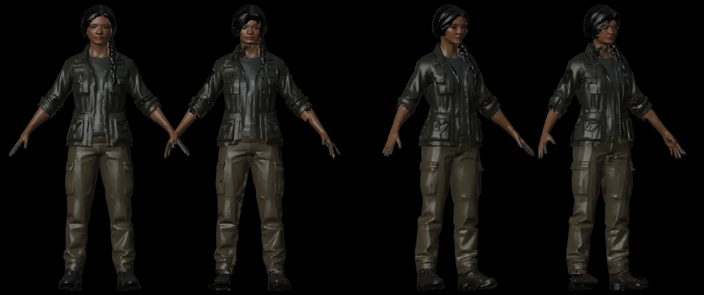
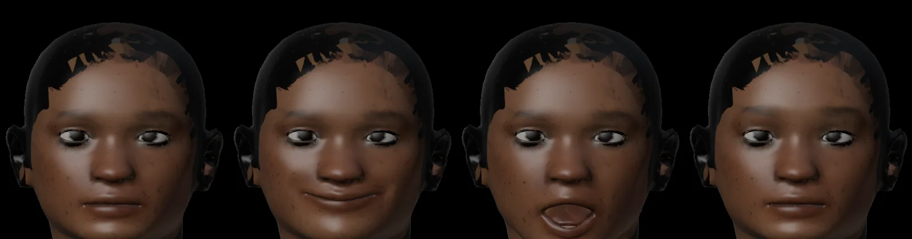
- To the commercial bar, in parallel lanes E162: measured against what Meshy and Tripo deliver
(Section 2.1), the work is split into lanes that run at the same time,
each on its own git branch and worktree, with its own files, cloned test characters and before/after measures, so they
cannot overwrite one another (
tools/lanes/setup_lane.sh). The lanes:- done in 0.19: a sharper texture from the same sources E164, clips that keep the capture's smoothness through our corrections E165, 23 ARKit-named face shapes E166, and cross-faded clips at a fixed simulation rate in the playground E167;
- dropped: a quad-dominant game mesh. Joining the triangle pairs gives quads that deform slightly worse, and Blender's QuadriFlow refuses our solids E163;
- dense first, then down to the smallest mesh that keeps the detail - what Tripo does after generating ~1.5-2M faces E168. Measured so far: an isotropic remesh at the same 60k makes far better-shaped triangles but sits 6-8 times further from the surface than our collapse decimation, so the decimation stays; next, the budget set per character by that distance, and an LOD ladder from the same bake;
- done: Pixal3D against TRELLIS.2 on six characters - an option with a better silhouette and a cleaner surface, not the default for its eyes and symmetry E155;
- done: a judge that builds a weight candidate through the clips; it rejects the surface-relative weights on all four characters tried, because a thick bone takes a thin joint's weight beside it - a radius per part is next E161;
- a high-resolution pass on the reference and views, written and waiting on ComfyUI E164.
- Shape and texture as clean as a professional's E132: the audit and its baselines now exist, and this version spent the first round on it - the finer surface E135, the loose shards, the hands and the skin E138, the rest pose E137 (Section 5.8). What is left, in the order a viewer sees it: faces - taken part by part in version 0.13 (eyes rebuilt, features laid on the model's own, the face the picture's alone E140); next the hairline, anime eyes the pose model cannot read, the profile, and relief from the picture's estimated normals where it is still missing [121] E136, with a head made on its own as the route to a sculpted shape E139; hair without the dark streaks where views disagree; armour raised above the shoulder, with rigid shoulder pieces E110; the gap of two to four times on surface noise and lumps, which the low-poly's decimation now sets (crease-aware normals, a quad remesh of the solid); and likeness measured beside cleanliness on the whole body as it now is on faces (per-part DINOv3 likeness, Section 5.9), since the texture audit scored Hunyuan3D-Paint's views better on characters where they were plainly worse E134.
- A 3D ground truth for motion E101: render a character performing a known clip as a video, run the move lane on it with that clip held out of the library, and measure the recovered clip in joint angles, positions, contacts and jitter. Then test independent real footage and subjects E111: TotalCapture and 3DPW supply different video/pose evidence; AMASS supplies varied motion for exact-GT renders, while AIST++ is a reconstructed-motion stress set.
- Weights chosen by deformation and penetration together [E154, E157, E159]: the extreme-pose battery chooses each character's skin weights by how its faces stretch, shear and crush, and twice preferred weightings that held a loose jacket's faces in shape while the arm sank into it in the clips (Vex: 7% of frames to 22% and 12%). A score that counts both - the battery's penetration beside its deformation, or a few clips audited through the contact solve for each candidate - would let the surface-relative weights take the fins out of raised arms where they do no harm.
- An aberration score, calibrated against people E102: the audit now measures every frame of every clip and finds known-size defects to the millimetre (Section 5.6); what it lacks is agreement with human judgement. Blinded, randomised ratings of clips near each score's boundary, by at least two raters, before any score becomes a gate; dynamic-human quality studies seed the taxonomy, not a transferable scorer [80, 84, 85]. Texture drift and face-morph deformation need their own measures.
- What the contact solve does not reach [E128, E151]: the arms are now solved against the torso and legs every frame (Section 4.10); the legs are not - a thigh into a belly in a crouch, shins passing in a strafe - and the moves made from video carry penetrations of 9-11 cm that small turns cannot undo; a bag at the hip that the thigh rises into in a crouch (Wren's satchel carries a third of her frames; re-weighting only moved it from one side of the pair to the other, E158 - it needs a collision response); colliders for the hair's spring chains, so arms push long hair aside instead of through it E125 - and, once hair gets chains, a restoring pull toward the hairstyle's original arc in the head's frame rather than toward the bent parent's direction, as one hair auto-rigger describes [122]; strand-based hair from one picture now exists (DiffLocks [123]: a diffusion transformer decoding one latent code per strand, trained on 40K synthetic styles), but its code needs CUDA kernels, so for now hair stays a rigid shell with spring chains for what hangs; long coat hems that follow the thighs; and corrective shapes at elbows and shoulders, scored by the same audit E107.
- Moves from words without a person choosing E129: rank UniMate's samples by the audits (E102's aberrations, foot slip) and by how well a render reads as the sentence, so the best of three is picked automatically; write the user's words into the caption style itself; and use UniMate's other two abilities - in-betweening, to join one clip to the next, and editing with chosen joints held, to give a captured walk a new upper-body action without touching its planted feet.
- Prompt-to-asset fidelity E112: use per-attribute questions, informed by TIFA and GenEval [78, 79], to find where a held-out prompt's attributes are lost or changed between its structured text, reference, and final character.
- 3D and held-out-view fidelity E113: compare a permission-checked scan set against generated geometry and reserved synthetic orbit renders. Do not call these captured calibrated views; obtain written permission for external sharing of derived THUman data or keep the measurements internal [81, 124].
- Rigging against the field E103: our joints and weights against UniRig and the hosted auto-riggers on the same meshes, scored by E102; corrective shapes at elbows and shoulders E107.
- Engine acceptance and provenance E114 E115: run the glTF Validator [86], then smoke-import representative release artifacts in version-pinned Unity, Unreal and Godot projects [87, 88, 89]; report clip coverage, manifest-driven controller error, morph/spring/LOD behavior, runtime costs, exact model/data versions and terms without guessing at permissions.
- Time E106: each stage timed alone, and the costly ones - the second 3D pass, the detailed face - ablated against their measured benefit; Hunyuan3D 2.1 against TRELLIS.2 on our references E104.
- Texture seams by Poisson blending E105; depth for moves the library lacks from a world-grounded video model E108; faces the rig will not guess E109; hair and garments as their own layers E110.
The newly identified asset-stage gaps are tracked separately so their measurements can proceed in parallel after the shared data
contracts are frozen: solidification topology versus shape fidelity and segmentation confidence E116 E117; retopology distance,
local UV distortion and runtime mip bleed E118 E119 E120; 3D hand, expressive-face and independent-layer quality E123 E124
E125. The evidence ledger, corrected foot metric and Studio state-machine acceptance are cross-cutting work E121 E122 E126.
The detailed split manifest, artifact paths, formulas and run dependencies remain in the tracker and the development-facing
research/GAPS.md. The fast classifier proposed in a user-supplied video is queued as E127 at the very end; its
identity and license remain unverified, and it is gated on completion or explicit deferral of the earlier queue.
References
Role: used CharForge runs it · compared weighed or measured against ours · related context. All links checked 26 September 2026; BibTeX.
- [1] Jianfeng Xiang, Xiaoxue Chen, Sicheng Xu, Ruicheng Wang, Zelong Lv, Yu Deng, Hongyuan Zhu, Yue Dong, Hao Zhao, Nicholas Jing Yuan, Jiaolong Yang. Native and Compact Structured Latents for 3D Generation. CVPR 2026, pp. 14419-14429, 2026. used Published paper for the TRELLIS.2 model used in CharForge: 4B-parameter generation with O-Voxel latents; licensing for the actual model materials is separately recorded at trellis2license.
- [2] Tencent Hunyuan3D Team. Hunyuan3D 2.1: From Images to High-Fidelity 3D Assets with Production-Ready PBR Material. arXiv:2506.15442, 2025. used Vendored through its Apple Silicon port (hunyuanmac): the shape model makes a character's head on its own from a crop of the reference (E139, opt-in), the paint model the opt-in side and back views (E134); compared as a whole-figure generator in E104. The paper does not establish that unnamed hosted products use it.
- [3] Hao-Yang Peng, Jia-Peng Zhang, Meng-Hao Guo, Yan-Pei Cao, Shi-Min Hu. CharacterGen: Efficient 3D Character Generation from Single Images with Multi-View Pose Canonicalization. ACM Transactions on Graphics (SIGGRAPH), 2024. compared Four A-pose views from one image, a sparse-view reconstruction model, texture back-projection with depth test and Poisson blending; rigs with AccuRig. Anime3D dataset (13,746 VRoid models).
- [4] Jianqiang Ren, Chao He, Lin Liu, Jiahao Chen, Yutong Wang, Yafei Song, Jianfang Li, Tangli Xue, Siqi Hu, Tao Chen, Kunkun Zheng, Jianjing Xiang, Liefeng Bo. Make-A-Character: High Quality Text-to-3D Character Generation within Minutes. arXiv:2312.15430, 2023. compared An LLM (Qwen-14B) parses the prompt into attributes; a portrait is generated and fitted onto MetaHuman topology with 431 dense landmarks; strand hair and library-matched garments; 52 blendshapes.
- [5] Lin Liu, Yutong Wang, Jiahao Chen, Jianfang Li, Tangli Xue, Longlong Li, Jianqiang Ren, Liefeng Bo. Make-A-Character 2: Animatable 3D Character Generation From a Single Image. arXiv:2501.07870 (also Qeios H03RE1), 2025. compared Single portrait to animatable character in under 2 minutes: IC-Light relighting, colour correction, hierarchical face reconstruction, adaptive facial skeleton calibration.
- [6] Reallusion. AccuRIG: free automatic character rigging. ActorCore, 2025. compared Official material supports marker-guided joint placement and configurable finger counts. CharacterGen reports using AccuRIG; the cited source does not substantiate a generic one-click skinning claim for every standalone workflow.
- [7] Viggle AI. PINOC AI auto-rigging. viggle.ai, n.d.. compared The product guide describes guide markers and retargeting/mapping for compatible humanoid rigs; its finger controls concern mapping an existing rig, not a claim that PINOC generates finger bones on every output.
- [8] Annomotion Studio. Rig Lab: AI rigging. annomotion.studio, n.d.. compared Automatic humanoid joints and skinning from an A/T-pose GLB; hands are single joints (no fingers); four procedural clips. The checked page does not establish a release year.
- [9] Cinevva. Cinevva 3D Model Generator. app.cinevva.com, n.d.. compared The current workbench page advertises text or up to four views, rigging/animation and GLB export with 10K-1.5M triangles; it describes unnamed mesh engines and does not identify Hunyuan3D as its backend. Dynamic, undated vendor page; checked 2026-09-26.
- [10] Cinevva. Best AI 3D Model Generators in 2026: Text-to-3D and Image-to-3D Compared. app.cinevva.com, 2026. Vendor editorial guide, published 2026-07-17 and updated 2026-09-14; its topology observations are not a controlled benchmark and it discloses the publisher sells a compared product.
- [11] Jianfeng Xiang, Zelong Lv, Sicheng Xu, Yu Deng, Ruicheng Wang, Bowen Zhang, Dong Chen, Xin Tong, Jiaolong Yang. Structured 3D Latents for Scalable and Versatile 3D Generation. CVPR, 2025. TRELLIS, the predecessor of TRELLIS.2.
- [12] Oriane Siméoni, et al.. DINOv3. arXiv:2508.10104, 2025. used TRELLIS.2's paper identifies DINOv3-L as its image-conditioning encoder; CharForge's local converter references a ViT-L/16 checkpoint, which should be separately pinned in run provenance.
- [13] Tencent Hunyuan3D Team. Hunyuan3D 2.0: Scaling Diffusion Models for High Resolution Textured 3D Assets Generation. arXiv:2501.12202, 2025. compared An alternative image-to-3D generator (shape DiT + texture painter).
- [14] AI3DGen. Turn Image to 3D Model Free - No Sign-Up Required. ai3dgen.com, n.d.. compared The vendor page advertises free OBJ exports with selectable 5K-40K face-count choices; it does not substantiate rigging or animation. Free outputs are described as personal-use only, so check terms before project use or redistribution. Page checked 2026-09-26; that is not a release year.
- [15] Chenfei Wu, Jiahao Li, Jingren Zhou, et al.. Qwen-Image Technical Report. arXiv:2508.02324, 2025. Technical report for the original Qwen-Image family, not documentation for the Qwen-Image 2.1 checkpoint used by CharForge.
- [16] Bing Zhao, Chenfei Wu, Deqing Li, et al.. Qwen-Image-2.0 Technical Report. arXiv:2605.10730, 2026. Technical report for Qwen-Image 2.0 only; it does not document or license the separate 2.1 checkpoint.
- [17] QwenLM. Qwen-Image-2.1. Official model repository, 2026. used Official repository documents the 7B visual-generation component, native RGBA transparency and ComfyUI support; released 2026-09-20. The exact license is cited separately.
- [18] QwenLM. Qwen-Image-2.1 Qwen Research License Agreement. Official repository LICENSE, 2026. used The bundled license grants use, modification and distribution only for non-commercial research/evaluation; commercial use requires a separate license. Public source/weights should not be conflated with unrestricted commercial permission.
- [19] Patrick Pérez, Michel Gangnet, Andrew Blake. Poisson Image Editing. ACM Transactions on Graphics 22(3) (SIGGRAPH), 2003. Gradient-domain blending, used at texture seams by CharacterGen and Make-A-Character.
- [20] Yuze He, Yanning Zhou, Wang Zhao, Zhongkai Wu, Kaiwen Xiao, Wei Yang, Yong-Jin Liu, Xiao Han. StdGEN: Semantic-Decomposed 3D Character Generation from Single Images. CVPR 2025, 2025. Body, clothes and hair as separate meshes from one anime image; Apache-2.0, CUDA. E148.
- [21] Yuze He, Yanning Zhou, Wang Zhao, Jingwen Ye, Zhongkai Wu, Ran Yi, Yong-Jin Liu. StdGEN++: A Comprehensive System for Semantic-Decomposed 3D Character Generation. arXiv, 2026. Extends StdGEN: a dual-branch semantic reconstruction model, hybrid implicit surfaces, and video-diffusion texture decomposition into editable layers; body, clothes and hair stay separate. Needs CUDA; the Mac route to the same layering is E149's template body.
- [22] Weizhe Liu, Yunjie Wu, Xiangqian Shu, Guangwei Wang, Xiangyu Xu, Peng Li, Yujie Li, Hengkai Guo. DreamCharacter-1: From 3D Generative Foundation Models to Product-Ready Character Generation. arXiv, 2026. Post-trains a 3D foundation model for characters: geometry preference optimisation, two-stage texturing with sparse-voxel inpainting, distillation for speed; reports better ULIP and Uni3D than TRELLIS.2. No code or weights released that we could find.
- [23] Dong-Yang Li, Wang Zhao, Yuxin Chen, Wenbo Hu, Meng-Hao Guo, Fang-Lue Zhang, Ying Shan, Shi-Min Hu. Pixal3D: Pixel-Aligned 3D Generation from Images. SIGGRAPH 2026 (arXiv), 2026. Built on the TRELLIS.2 backbone, conditioned by back-projecting image features along camera rays into a 3D volume so the shape is pixel-aligned with the input. MIT; the official code needs CUDA, a third-party C++/GGML port reports about 6 minutes a model on an M5 Mac.
- [24] grumpyburton. OpenMeshy: local image or text to game-ready 3D. GitHub, 2026. A peer on Apple Silicon: TRELLIS.2, Hunyuan3D-MLX and Pixal3D backends, retopology, a pixel-match pass that copies the source image's pixels onto the surface, SkinTokens rigging, Unity Humanoid export, and a licence-provenance sidecar with every output.
- [25] raydeStar. reference-asset-compiler: evidence-gated pipeline from one concept image to a rigged UE5 character. GitHub, 2026. Gates modelling, retopology, texture, rigging and import on recorded evidence; its rigging gate runs a five-pose deformation suite; no automatic retries; fallback rig routes.
- [26] Meshy. Meshy API reference: Image to 3D, Remesh and Rigging. docs.meshy.ai, 2026. compared topology quad|triangle (default triangle), target_polycount 100-300,000 (default 30,000; smart topology 100-15,000, default 4,000), texture_resolution 2k|4k|8k (default 2k), enable_pbr, pose_mode a-pose|t-pose, remove_lighting (default true); remesh at /remesh; rigging needs a textured +Z-facing humanoid of at most 300,000 faces and returns rigged FBX/GLB with walking and running clips.
- [27] Tripo AI, Comfy Org. Tripo image-to-model parameters (Comfy's Tripo node documentation and Tripo developer docs). docs.comfy.org; developers.tripo3d.com, 2026. compared texture_quality standard|detailed|extreme (8K); face_limit -1 adaptive (~1.4M faces v3 standard, 2M detailed); quad output as FBX up to 150,000 faces; smart_low_poly 500-20,000 faces (quad 500-10,000), may fail on complex subjects; auto_size to metres.
- [28] Jingwei Huang, Yichao Zhou, Leonidas Guibas. ManifoldPlus: A Robust and Scalable Watertight Manifold Surface Generation Method for Triangle Soups. ACM Transactions on Graphics 39(6), 2020. Repairs triangle soups through voxel occupancy and projection while explicitly balancing watertight topology with resemblance to the input; motivates separate topology-success and shape-preservation measurements in E116.
- [29] Paolo Cignoni, Claudio Rocchini, Roberto Scopigno. Metro: Measuring Error on Simplified Surfaces. Computer Graphics Forum 17(2), 1998. Surface-sampling method to compare a source surface with its simplified version; informs E118's area-sampled source-to-retopo distances, not a CharForge-specific acceptance threshold.
- [30] Dongdong Wang, Boqing Gong, Liqiang Wang. On Calibrating Semantic Segmentation Models: Analyses and an Algorithm. CVPR, 2023. Studies segmentation confidence calibration, including prediction correctness and domain shift; motivates retaining parser probabilities and calibrating abstention on CharForge-specific annotations rather than assuming softmax confidence is correctness.
- [31] Pau de Jorge, Riccardo Volpi, Philip H. S. Torr, Grégory Rogez. Reliability in Semantic Segmentation: Are We on the Right Track?. CVPR, 2023. Evaluates segmentation robustness, calibration, misclassification detection and OOD detection; motivates confidence/abstention checks, but its natural-image datasets do not establish CharForge thresholds.
- [32] Harrison Jesse Smith, Qingyuan Zheng, Yifei Li, Somya Jain, Jessica K. Hodgins. A Method for Animating Children's Drawings of the Human Figure. ACM Transactions on Graphics 42(3), 2023. 2D rigging of drawings; the baseline DrawingSpinUp compares against.
- [33] Jie Zhou, Chufeng Xiao, Miu-Ling Lam, Hongbo Fu. DrawingSpinUp: 3D Animation from Single Character Drawings. SIGGRAPH Asia 2024 Conference Papers, 2024. compared Image-to-3D of a drawing, contour removal and restoration, skeleton-based thinning; rigs with Mixamo's auto-rigger (eight front-view keypoints) and nearest-bone weights, retargets with Rokoko. arXiv:2409.08615.
- [34] Alican Akman, Yusuf Sahillioğlu, T. Metin Sezgin. Generation of 3D Human Models and Animations Using Simple Sketches. Graphics Interface, 2020. A VAE from 2D stick figures to 3D point-cloud bodies, and animation by interpolating in its latent space.
- [35] Cong Wei, Xuanchi Ren, Bryan Chu, Weiming Ren, Huan Ling, Jiahui Huang, Laura Leal-Taixé, Sanja Fidler, Wenhu Chen, Zian Wang, Jay Zhangjie Wu. PixelUMM: Encoder-Free Unified Image and Video Understanding and Generation. arXiv:2609.38597, 2026. compared One decoder-only Transformer (Qwen3-8B backbone, 15.2B parameters with its two experts) that reads and writes raw pixels. Released tasks: text-to-image (256 px), text-to-video (176 x 320, 96 frames), image and video understanding; Linux + CUDA 13 + FlashAttention; weights under the NVIDIA One-Way Noncommercial License. Weighed against every CharForge stage in E142.
- [36] Ilya Baran, Jovan Popović. Automatic Rigging and Animation of 3D Characters. ACM Transactions on Graphics 26(3) (SIGGRAPH), 2007. Embeds a template skeleton in a mesh and computes weights by heat diffusion.
- [37] Zhan Xu, Yang Zhou, Evangelos Kalogerakis, Chris Landreth, Karan Singh. RigNet: Neural Rigging for Articulated Characters. ACM Transactions on Graphics 39(4) (SIGGRAPH), 2020. Learned joints, bone connectivity and skin weights.
- [38] Jia-Peng Zhang, Cheng-Feng Pu, Meng-Hao Guo, Yan-Pei Cao, Shi-Min Hu. One Model to Rig Them All: Diverse Skeleton Rigging with UniRig. ACM Transactions on Graphics (SIGGRAPH), 2025. compared Autoregressive skeleton prediction (skeleton tree tokenization) and skin weights; Rig-XL dataset of 14,000+ rigged models.
- [39] Adobe. Mixamo FAQ. Adobe Help Center, 2021. used Adobe's FAQ (updated 2021-09-14) says Mixamo characters/animations may be used royalty-free in personal, commercial and non-profit projects, including games. It does not identify CharForge's local mirror or by itself resolve redistribution of the mirror/raw clip files.
- [40] Nadia Magnenat-Thalmann, Richard Laperrière, Daniel Thalmann. Joint-Dependent Local Deformations for Hand Animation and Object Grasping. Graphics Interface, 1988. Early joint-dependent local hand deformations for animation and grasping; this paper is not the source for the linear-blend skinning formula.
- [41] Khronos 3D Formats Working Group. glTF 2.0 Specification. Khronos 3D Formats Working Group, 2021. used Defines the glTF package format and its weighted joint-transform linear-blend skinning path; it does not specify FBX behavior.
- [42] Ladislav Kavan, Steven Collins, Jiří Žára, Carol O'Sullivan. Skinning with Dual Quaternions. ACM SIGGRAPH Symposium on Interactive 3D Graphics and Games (I3D), 2007. used Dual-quaternion skinning reduces some volume-loss/collapse artifacts of linear blending; CharForge's E024 measurement still finds residual collapsed jacket faces.
- [43] Olivier Dionne, Martin de Lasa. Geodesic Voxel Binding for Production Character Meshes. ACM SIGGRAPH/Eurographics Symposium on Computer Animation (SCA), 2013. Skin weights from distances through the voxelised body, the idea CharForge's weights follow.
- [44] Chaoyue Song, Xiu Li, Fan Yang, Zhongcong Xu, Jiacheng Wei, Fayao Liu, Jiashi Feng, Guosheng Lin, Jianfeng Zhang. Puppeteer: Rig and Animate Your 3D Models. NeurIPS 2025, 2025. Autoregressive skeleton prediction, attention-based skinning with topology-aware joint attention, and a differentiable optimisation that animates the rig from a video.
- [45] Jia-peng Zhang, Cheng-Feng Pu, Meng-Hao Guo, Yan-Pei Cao, Shi-Min Hu. Skin Tokens: A Learned Compact Representation for Unified Autoregressive Rigging. arXiv, 2026. UniRig's successor: skinning weights as discrete tokens from an FSQ-CVAE, skeleton and skin as one sequence, refined with reinforcement learning; reports 98-133% better skinning accuracy than prior methods. MIT; the repository needs an NVIDIA GPU with 14 GB, CUDA 12.1 and flash-attn, so it cannot run on this Mac.
- [46] Zhiyang Guo, Jinxu Xiang, Kai Ma, Wengang Zhou, Houqiang Li, Ran Zhang. Make-It-Animatable: An Efficient Framework for Authoring Animation-Ready 3D Characters. CVPR 2025 (Highlight), 2025. compared A mesh in, a Mixamo skeleton, blend weights and a rest-pose reset out; version 2 builds on the Hunyuan3D-2.1 shape VAE and takes meshes. Code MIT, weights Apache-2.0 per the model card (huggingface.co/jasongzy/Make-It-Animatable), trained on Mixamo characters. Its requirements name CUDA builds of torch-cluster and PyTorch3D; the parts it uses run in plain PyTorch, and CharForge runs it on a CPU (E157).
- [47] Yi-Hua Huang, Zi-Xin Zou, Yuting He, Chirui Chang, Cheng-Feng Pu, Ziyi Yang, Yuan-Chen Guo, Yan-Pei Cao, Xiaojuan Qi. AniGen: Unified S^3 Fields for Animatable 3D Asset Generation. arXiv:2604.08746, 2026. Shape, skeleton and skinning generated together from one image as mutually consistent fields. Not run here: a third-party report of a run on an Apple M1 Max rigged a simple mascot and produced no faces for a clothed character with thin limbs.
- [48] Chao Wang, Guangyao Ma, John Doublestein, Junming Chen, Yiming Lin, Zhaoen Su, Xiaomin Luo, Shiyang Cheng, Jie Shen, Doug Roble, Dilin Wang, Yilei Li, Rakesh Ranjan. OmniFaceRig: Fully Automatic Inner-Mouth-Aware Face Rigging Across Diverse 3D Character Topologies. arXiv, 2026. Riggability check, multi-model face parsing, dense keypoint-driven template registration, procedurally fitted teeth, gums and tongue with their texture baked, and collision-aware transfer of up to 155 FACS blendshapes; 20-30 s an asset on an A100. The same recipe as E149's template face; its mouth-interior texture is the step E149 lacked. No code located.
- [49] Romain Brégier, Guénolé Fiche, Laura Bravo-Sánchez, Thomas Lucas, Matthieu Armando, Philippe Weinzaepfel, Grégory Rogez, Fabien Baradel. Human Mesh Modeling for Anny Body. arXiv:2511.03589, 2025. used Parametric body from MakeHuman anthropometry (infants to elders), code Apache-2.0, data CC0; quad topology, 104 bones with fingers and eyes, UVs, 52 ARKit facial actions. Fitted under the characters in E149.
- [50] Simon Giebenhain, Tobias Kirschstein, Martin Rünz, Lourdes Agapito, Matthias Nießner. Pixel3DMM: Versatile Screen-Space Priors for Single-Image 3D Face Reconstruction. ICLR 2026, 2026. Two DINO-based networks predict per-pixel normals and UV coordinates that constrain a FLAME fit from one photo. Code released; CUDA 11.8, CC BY-NC 4.0 and FLAME's non-commercial licence - realistic faces only, and not runnable on this Mac.
- [51] Georgios Pavlakos, Vasileios Choutas, Nima Ghorbani, Timo Bolkart, Ahmed A. A. Osman, Dimitrios Tzionas, Michael J. Black. Expressive Body Capture: 3D Hands, Face, and Body From a Single Image. CVPR, 2019. SMPL-X jointly models hands, face, and body; the authors emphasize dense features and pose priors, useful context for E006/E109 but not a replacement template for arbitrary stylized meshes.
- [52] Javier Romero, Dimitrios Tzionas, Michael J. Black. Embodied Hands: Modeling and Capturing Hands and Bodies Together. ACM Transactions on Graphics (SIGGRAPH Asia), 2017. MANO learns pose-conditioned hand shape corrections from scans; models/data are research-access gated, so use as a methodological reference unless its terms fit.
- [53] Gyeongsik Moon, Shoou-I Yu, He Wen, Takaaki Shiratori, Kyoung Mu Lee. InterHand2.6M: A Dataset and Baseline for 3D Interacting Hand Pose Estimation from a Single RGB Image. ECCV, 2020. Real-captured single/interacting hand sequences with 3D pose labels; supports a subject-held-out check that separates image detector accuracy from retargeted hand articulation. Data terms/split must be pinned before use.
- [54] Darren Cosker, Eva G. Krumhuber, Adrian Hilton. A FACS Valid 3D Dynamic Action Unit Database with Applications to 3D Dynamic Morphable Facial Modeling. ICCV, 2011. Dynamic 3D facial action sequences with expert peak-frame FACS labels; useful for an expression challenge taxonomy, but human scans and AU labels do not directly validate stylized blendshape appearance.
- [55] Timo Bolkart, Tianye Li, Michael J. Black. Instant Multi-View Head Capture Through Learnable Registration. CVPR, 2023. Introduces TEMPEH and FaMoS: the CVPR paper reports 93 subjects and 28 sequences. Data access requires agreement to its license; human face scans are references, not stylized target truth.
- [56] Hao Li, Ju Dai, Feng Zhou, Kaida Ning, Lei Li, Junjun Pan. AU-Blendshape for Fine-grained Stylized 3D Facial Expression Manipulation. ICCV, 2025. Introduces AUBlendSet with 32 action units across 500 identities and stylized AU control; informs E124 challenge design, not a validated CharForge benchmark or unrestricted dataset/model license.
- [57] J. P. Lewis, Matt Cordner, Nickson Fong. Pose Space Deformation: A Unified Approach to Shape Interpolation and Skeleton-Driven Deformation. SIGGRAPH, 2000. Foundational pose-conditioned corrective deformation; supports E107's elbow/shoulder correctives, while the fitted examples and runtime constraints remain to be measured for CharForge.
- [58] Qianli Ma, Jinlong Yang, Anurag Ranjan, Sergi Pujades, Gerard Pons-Moll, Siyu Tang, Michael J. Black. Learning to Dress 3D People in Generative Clothing. CVPR, 2020. Learns pose- and garment-conditioned clothing geometry from scans; relevant to independent garment layers and pose variation, but not a runtime spring solver or stylized-character validation set.
- [59] Meysam Madadi, Hugo Bertiche, Wafa Bouzouita, Isabelle Guyon, Sergio Escalera. Learning Cloth Dynamics: 3D+Texture Garment Reconstruction Benchmark. NeurIPS Competition and Demonstration Track, PMLR 133, 2021. CLOTH3D++ pairs animated dressed-human RGB sequences with dense 3D body/cloth and texture annotations; informs challenge design only and remains subject to dataset access terms.
- [60] Yufei Xu, Jing Zhang, Qiming Zhang, Dacheng Tao. ViTPose: Simple Vision Transformer Baselines for Human Pose Estimation. NeurIPS, 2022. used 17-point body pose on video frames and on renders (checkpoint usyd-community/vitpose-base-simple).
- [61] Zhendong Yang, Ailing Zeng, Chun Yuan, Yu Li. Effective Whole-body Pose Estimation with Two-stages Distillation. ICCV Workshops, 2023. used 133 whole-body points; CharForge uses its 21-point hands.
- [62] Matthew Loper, Naureen Mahmood, Javier Romero, Gerard Pons-Moll, Michael J. Black. SMPL: A Skinned Multi-Person Linear Model. ACM Transactions on Graphics 34(6) (SIGGRAPH Asia), 2015. The parametric body most human-recovery methods fit; CharForge fits the character's own skeleton instead.
- [63] Federica Bogo, Angjoo Kanazawa, Christoph Lassner, Peter Gehler, Javier Romero, Michael J. Black. Keep it SMPL: Automatic Estimation of 3D Human Pose and Shape from a Single Image. ECCV, 2016. Optimisation of a body model against 2D joints with priors - the analysis-by-synthesis idea the refine stage applies to the character's own mesh.
- [64] Angjoo Kanazawa, Michael J. Black, David W. Jacobs, Jitendra Malik. End-to-end Recovery of Human Shape and Pose. CVPR, 2018. Regresses a 3D human body mesh with pose and shape from a single RGB image, not just a skeleton pose.
- [65] Shubham Goel, Georgios Pavlakos, Jathushan Rajasegaran, Angjoo Kanazawa, Jitendra Malik. Humans in 4D: Reconstructing and Tracking Humans with Transformers. ICCV, 2023. Video human mesh recovery and tracking - an alternative to our retrieval-and-fit.
- [66] Soyong Shin, Juyong Kim, Eni Halilaj, Michael J. Black. WHAM: Reconstructing World-grounded Humans with Accurate 3D Motion. CVPR, 2024. World-grounded 3D motion from video, with foot contact - a candidate replacement for depth borrowed from the library.
- [67] jasongzy. Mixamo animation FBX mirror. Hugging Face Datasets, n.d.. used The dataset card identifies 2,453 animation FBXs downloaded from Mixamo. CharForge's cached snapshot at revision b1c7f4975ea3261d3d0aa2379f6e24754ccde9d8 independently contains 2,453 files in animation/; the mirror is not Adobe-authored and requires accepting conditions including sharing contact information. That count/access page does not establish redistribution permission.
- [68] Hiroaki Sakoe, Seibi Chiba. Dynamic Programming Algorithm Optimization for Spoken Word Recognition. IEEE Transactions on Acoustics, Speech, and Signal Processing 26(1), 1978. used Dynamic time warping, for matching a video's pose sequence to library clips.
- [69] WarmBloodAban. Minimax-h3_Singularity Ref2VA fine-tune. Hugging Face model card, 2026. used The model named by pipeline/motion_video.py: a community W4A8 Ref2VA fine-tune, converted/merged locally for inference. Its model card declares Apache-2.0 and identifies MiniMaxAI/MiniMax-H3 as its base. The upstream MiniMax H3 agreement defines H3 Works to include model derivatives and its use policy covers outputs; compatibility/authorization is unresolved, not cleared by the card label.
- [70] MiniMax. MiniMax H3 model card and Community License. Hugging Face: MiniMaxAI/MiniMax-H3, 2026. used Official source links the Community License. The agreement defines H3 Works to include model derivatives; it excludes the US, EU, UK and Republic of Korea from the Applicable Territory, and its use policy restricts use/reproduction/distribution/display of Outputs outside that territory. It permits contacting MiniMax about separate authorization. The relationship to a fine-tune card declaring Apache-2.0 remains unresolved; this is not legal advice.
- [71] Comfy Org. Comfy-Org MiniMax-H3 ComfyUI components. Hugging Face model repository, 2026. used CharForge's motion-video client loads the text encoder and VAEs from this packaging repository; it is not the W4A8 Ref2VA transformer checkpoint used for generation.
- [72] Naureen Mahmood, Nima Ghorbani, Nikolaus F. Troje, Gerard Pons-Moll, Michael J. Black. AMASS: Archive of Motion Capture as Surface Shapes. ICCV, 2019. Unifies 15 marker-based mocap datasets as rigged SMPL sequences; broad exact-motion source for controlled renders, but it does not provide paired RGB video.
- [73] Matthew Trumble, Andrew Gilbert, Charles Malleson, Adrian Hilton, John Collomosse. Total Capture: 3D Human Pose Estimation Fusing Video and Inertial Sensors. BMVC, 2017. Synchronized calibrated video, IMU, and Vicon labels, including about 1.9 million frames; strong primary motion test but a small indoor participant/action cohort.
- [74] Timo von Marcard, Roberto Henschel, Michael J. Black, Bodo Rosenhahn, Gerard Pons-Moll. Recovering Accurate 3D Human Pose in The Wild Using IMUs and a Moving Camera. ECCV, 2018. 3DPW supplies in-the-wild footage from a moving phone camera with IMU/video-derived pose labels; use it to test camera-motion generalization and document its annotation/alignment assumptions.
- [75] Ruilong Li, Shan Yang, David A. Ross, Angjoo Kanazawa. AI Choreographer: Music Conditioned 3D Dance Generation with AIST++. ICCV, 2021. 1,408 dance sequences, ten genres, nine camera views; 3D motion is reconstructed from multi-view video, so use as an action-diversity stress set rather than Vicon-grade ground truth and exclude the dataset's ignore-list.
- [76] Lucas Mourot, Ludovic Hoyet, François Le Clerc, Pierre Hellier. UnderPressure: Deep Learning for Foot Contact Detection, Ground Reaction Force Estimation and Footskate Cleanup. Computer Graphics Forum 41(8), Symposium on Computer Animation, 2022. Uses pressure-insole recordings as foot-contact evidence; supports a separately labeled contact benchmark, not a justification for deriving contact truth from CharForge's geometric floor threshold.
- [77] Martin Pražák, Ludovic Hoyet, Carol O'Sullivan. Perceptual Evaluation of Footskate Cleanup. Eurographics/ACM SIGGRAPH Symposium on Computer Animation (SCA), 2011. Controlled perceptual study reports small footsliding detectable in most tested conditions; its mannequin, view and environment setup informs blind-rating stimuli, not a universal CharForge threshold.
- [78] Yushi Hu, Benlin Liu, Jungo Kasai, Yizhong Wang, Mari Ostendorf, Ranjay Krishna, Noah A. Smith. TIFA: Accurate and Interpretable Text-to-Image Faithfulness Evaluation with Question Answering. ICCV, 2023. Fine-grained prompt-to-image attribute checks via generated questions and visual question answering; a candidate measurement pattern, not a validated scorer for stylized characters.
- [79] Dhruba Ghosh, Hannaneh Hajishirzi, Ludwig Schmidt. GenEval: An Object-Focused Framework for Evaluating Text-to-Image Alignment. NeurIPS, 2023. Object-centric checks for co-occurrence, count, position, and color; useful for composing a character-specific prompt-fidelity test.
- [80] Yujie Zhang, Bingyang Cui, Qi Yang, Zhu Li, Yiling Xu. Benchmarking and Learning Multi-Dimensional Quality Evaluator for Text-to-3D Generation. ICCV, 2025. MATE-3D: 1,280 textured meshes with human ratings separated into semantic alignment, geometry, texture, and overall quality; its evaluator should not be assumed to transfer to CharForge characters without calibration.
- [81] THUman project team. THUman 2.0 Dataset. Project dataset and terms of use, 2020. Pin the exact release: the current repository README also describes THUman2.1. The public release provides scan meshes/textures and rendering recipes, not a set of captured calibrated multi-view RGB views. Terms state non-commercial research use and restrict third-party sharing of scans or derived data without prior written permission; obtain permission or keep derived evaluation internal.
- [82] Pedro V. Sander, John Snyder, Steven J. Gortler, Hugues Hoppe. Texture Mapping Progressive Meshes. ACM SIGGRAPH, 2001. Optimizes a shared parameterization across progressive meshes with attention to texture stretch; motivates measuring local UV distortion rather than island overlap/median density alone.
- [83] Unity Technologies. Mipmaps. Unity 6 documentation, 2026. Explains per-level texture downsampling and trilinear runtime sampling; motivates E120's distance/mip inspection rather than assuming a base-level gutter prevents runtime bleed.
- [84] Zicheng Zhang, Yingjie Zhou, Wei Sun, Wei Lu, Xiongkuo Min, Yu Wang, Guangtao Zhai. DDH-QA: A Dynamic Digital Humans Quality Assessment Database. IEEE International Conference on Multimedia and Expo (ICME), 2023. Human study on 800 dynamic digital humans and ten motion types; explicitly includes binding error and motion unnaturalness, useful as an aberration taxonomy but not a trained scorer validated on stylized generated characters.
- [85] Yunhao Li, Sijing Wu, Yucheng Zhu, Huiyu Duan, Zicheng Zhang, Wei Sun, Xiongkuo Min, Guangtao Zhai. DHQA-4D: A Large-Scale Dataset and LMM-Based Metric for Dynamic 4D Digital Human Quality Assessment. Pattern Recognition 180, article 114567, 2026. 32 scanned dynamic humans, 11 distortion types, and human ratings including temporal discontinuity; a recent reference for E102's test taxonomy, not evidence that its evaluator transfers to CharForge.
- [86] Khronos Group. glTF Validator. GitHub, 2026. Validates glTF 2.0 structure/resources and emits a JSON report; it does not prove Unity/Unreal/Godot-specific import or runtime behavior.
- [87] Unity Technologies. Importing Model Files. Unity 6 documentation, 2026. Documents Unity model, humanoid rig/clip, material, texture, and blend-shape importer behavior; pin the actual Unity version in the smoke fixture.
- [88] Epic Games. FBX Skeletal Mesh Pipeline. Unreal Engine 5.8 documentation, 2026. Documents FBX 2020.2, skeletal meshes, morph targets, LODs, and the single-animation-per-skeletal-mesh-file constraint relevant to package layout.
- [89] Godot Engine contributors. Import Configuration. Godot Engine stable documentation, 2026. Documents skin influence limits, material handling, animation sampling/grouping, and import-time options; pin the actual Godot release in the smoke fixture.
- [90] W3C Provenance Working Group. PROV-DM: The PROV Data Model. W3C Recommendation, 2013. Models provenance as entities, activities and agents with derivation relations; a conceptual structure for per-run lineage, not a compliance claim.
- [91] OWASP CycloneDX. Machine Learning Bill of Materials (ML-BOM). CycloneDX specification, 2025. Defines structured inventory/provenance concepts for ML models and datasets; a candidate schema for dependency inventory, not a substitute for per-run artifacts or legal review.
- [92] Geir Kjetil Sandve, Anton Nekrutenko, James Taylor, Eivind Hovig. Ten Simple Rules for Reproducible Computational Research. PLoS Computational Biology 9(10), e1003285, 2013. Practical guidance for archiving exact code/data and recording computational procedures; informs claim-to-artifact lineage in E121.
- [93] Linzhan Mou, Jiahui Lei, Zhiyang Dou, Chenyue Cai, Chaoyue Song, Adam Finkelstein, Szymon Rusinkiewicz. UniMate: One Unified Model to Animate Diverse Skeletons. SIGGRAPH Asia 2026 (arXiv:2609.05415), 2026. used Flow-matching text-to-motion conditioned on a skeleton's topology and T-pose, so one model animates skeletons it never saw; MIT code and weights (github.com/Friedrich-M/UniMate, huggingface.co/Linzhan/UniMate). CharForge runs it on each character's own skeleton for moves the capture library lacks (E129).
- [94] Blender Foundation. Blender 5.2 command-line manual. Blender 5.2 documentation, 2026. used Version-pinned command-line/background-run documentation; the fact that CharForge scripts each listed stage is evidenced by repository implementation.
- [95] Noah Lyons. trellis2mlx: TRELLIS.2 on Apple Silicon (MLX). GitHub, 2026. used Upstream MLX port with CharForge's multi-view patch. On 2026-09-26 the local vendor checkout was at cddaf3cb8a9f28956114956ebe754d6661a3f695 with four modified tracked files and one untracked backup; this repository URL alone does not identify the local runtime source.
- [96] Enze Xie, Wenhai Wang, Zhiding Yu, Anima Anandkumar, Jose M. Alvarez, Ping Luo. SegFormer: Simple and Efficient Design for Semantic Segmentation with Transformers. NeurIPS, 2021. used SegFormer architecture paper; the actual FASHN-B4 human-parsing checkpoint and its NVIDIA Source Code License are documented separately at fashnparser.
- [97] FASHN AI. FASHN Human Parser. GitHub repository, n.d.. used Repository documents a SegFormer-B4 fine-tuned for 18-class human parsing and says the model inherits NVIDIA's Source Code License for SegFormer; review that license separately from the SegFormer paper citation.
- [98] Xuebin Qin, Zichen Zhang, Chenyang Huang, Masood Dehghan, Osmar R. Zaiane, Martin Jagersand. U²-Net: Going deeper with nested U-structure for salient object detection. Pattern Recognition 106, article 107404, 2020. used The U²-Net salient-object detector used through rembg for reference/video-frame cut-outs; this citation is not evidence of human-parser accuracy.
- [99] Ollama. Ollama Gemma 4 E4B model tag. Ollama model registry, 2026. used CharForge's first-choice Ollama tag is gemma4:e4b; pipeline/describe.py permits environment/settings overrides and falls through to later models. The downloaded quantization/digest is not pinned here.
- [100] Comfy Org. ComfyUI. GitHub repository, n.d.. used Runs image and video workflows; this rolling repository citation is not an immutable revision for the specific CharForge environment.
- [101] Youyi Zheng, Hongbo Fu, Oscar Kin-Chung Au, Chiew-Lan Tai. Bilateral Normal Filtering for Mesh Denoising. IEEE Transactions on Visualization and Computer Graphics 17(10), pp. 1521-1530, 2011. used The filtering of the generated surface's face normals in blender/mesh_denoise.py (E135).
- [102] Xianfang Sun, Paul L. Rosin, Ralph Martin, Frank Langbein. Fast and Effective Feature-Preserving Mesh Denoising. IEEE Transactions on Visualization and Computer Graphics 13(5), pp. 925-938, 2007. used The vertex update that moves a mesh to agree with filtered normals, used after bilateral normal filtering (E135).
- [103] Ken Museth. VDB: High-Resolution Sparse Volumes with Dynamic Topology. ACM Transactions on Graphics 32(3), 2013. used General sparse VDB volume and level-set method. CharForge's use of level sets for solidification, arm cuts and hands is supported by project implementation, not presented as a result of this paper.
- [104] Michael Garland, Paul S. Heckbert. Surface simplification using quadric error metrics. SIGGRAPH '97, pp. 209-216, 1997. used Blender's collapse decimation, which makes the low-poly; the head's share of its budget is held by a vertex group (E140).
- [105] Till Kroeger, Radu Timofte, Dengxin Dai, Luc Van Gool. Fast Optical Flow using Dense Inverse Search. ECCV, 2016. used Aligns the reference to renders of the mesh during texture projection (OpenCV's DIS).
- [106] Shinji Umeyama. Least-squares estimation of transformation parameters between two point patterns. IEEE Transactions on Pattern Analysis and Machine Intelligence 13(4), pp. 376-380, 1991. used The similarity that moves each part of the face onto the model's own (E140) and fits a render's face points to the picture's in the face score.
- [107] Fred L. Bookstein. Principal warps: thin-plate splines and the decomposition of deformations. IEEE Transactions on Pattern Analysis and Machine Intelligence 11(6), pp. 567-585, 1989. used The smooth field that spreads the face parts' moves over the face (E140).
- [108] Adobe Substance 3D. The PBR Guide - Part 2: practical guidelines for creating PBR textures. adobe.com/learn, n.d.. used Non-metal base colour no darker than sRGB 30-50 and no brighter than 240, and free of lighting - the range pipeline/albedo_range.py keeps (E132).
- [109] Vladimir Talyzin. hunyuan3d-2.1-mac-rocm: Hunyuan3D 2.1 without CUDA, on Apple Silicon (MPS) and AMD (ROCm). GitHub, 2026. used Installers and a compatibility layer around Tencent's Hunyuan3D 2.1; its README lists PBR texturing on Apple Silicon as verified at 256 px. Vendored at commit 6f4b63b for the head shape (E139) and the opt-in texture views (E134).
- [110] three.js authors. three.js r160 (0.160.0). GitHub release, 2023. used The playground's pinned WebGL renderer and animation mixer version (r160/0.160.0); the version-specific release is cited rather than the rolling homepage.
- [111] Ruben Villegas, Duygu Ceylan, Aaron Hertzmann, Jimei Yang, Jun Saito. Contact-Aware Retargeting of Skinned Motion. IEEE/CVF International Conference on Computer Vision (ICCV), 2021. Retargets motion to a target character's skinned geometry while keeping self- and ground contacts and reducing interpenetration, with a learned geometry-conditioned network and encoder-space optimisation; CharForge's E128 addresses the same interpenetration with measured per-character joint limits instead of a learned model.
- [112] Zijie Ye, Jia-Wei Liu, Jia Jia, Shikun Sun, Mike Zheng Shou. Skinned Motion Retargeting with Dense Geometric Interaction Perception. NeurIPS 2024, 2024. compared Retargeting with dense mesh correspondence and an interaction field that prevents self-penetration and keeps contacts; MIT, pretrained on Mixamo characters. E150.
- [113] Hyung Won Chung, Le Hou, Shayne Longpre, Barret Zoph, Yi Tay, et al.. Scaling Instruction-Finetuned Language Models. arXiv:2210.11416, 2022. used Flan-T5; UniMate's text encoder is flan-t5-base (Apache-2.0).
- [114] Blender Foundation. BVHTree Utilities. Blender 5.2 Python API documentation, 2026. Documents overlap as returning index pairs between trees and ray casts; a BVH overlap result alone is not a documented narrow-phase triangle-intersection verdict.
- [115] Blender Studio and community contributions. Human Base Meshes v1.4.1 (asset bundle). blender.org demo files, CC0, 2025. compared Professionally modelled base meshes (male and female, realistic and stylised) - the shape baselines of the quality audit (E132). Updated 20 January 2025.
- [116] Blender Studio. Ellie Pose Library v2.0.0 (asset bundle; the character Ellie from the open film Sprite Fright). blender.org demo files, CC-BY, 2025. compared A production character with layered hair and garments - the quality audit's (E132) clothed professional baseline. Updated 7 August 2025.
- [117] Microsoft Research and project authors. TRELLIS.2 project materials and research-use notice. Official project page, n.d.. used The official page calls TRELLIS.2 a research project and says its page materials are solely for academic/research purposes and not intended for commercial exploitation. This is distinct from any code repository license; it does not alone resolve generated-output rights. Dynamic page checked 2026-09-26; footer copyright is not treated as a release year.
- [118] MiniMax. MiniMax H3 Community License Agreement. Official model repository LICENSE, 2026. used The primary license text, dated 2026-08-02, defines the Applicable Territory and H3 Works/Model Derivatives; section V and Exhibit A restrict use of Outputs outside the Applicable Territory. It says users in excluded territories may contact MiniMax regarding separate authorization. Read the full agreement; this citation is not legal advice.
- [119] Margaret Mitchell, Simone Wu, Andrew Zaldivar, Parker Barnes, Lucy Vasserman, Ben Hutchinson, Elena Spitzer, Inioluwa Deborah Raji, Timnit Gebru. Model Cards for Model Reporting. FAT*, 2019. Recommends documenting intended uses, evaluation procedures, performance characteristics, and limitations of released models; supports the dependency/provenance register, not a license interpretation.
- [120] Timnit Gebru, Jamie Morgenstern, Briana Vecchione, Jennifer Wortman Vaughan, Hanna Wallach, Hal Daumé III, Kate Crawford. Datasheets for Datasets. Communications of the ACM 64(12), 86-92, 2021. Proposes documenting dataset motivation, composition, collection, uses, and maintenance; a practical structure for CharForge's motion/scan evaluation provenance.
- [121] Chongjie Ye, Yushuang Wu, Ziteng Lu, Jiahao Chang, Xiaoyang Guo, Jiaqing Zhou, Hao Zhao, Xiaoguang Han. Hi3DGen: High-fidelity 3D Geometry Generation from Images via Normal Bridging. ICCV 2025 (arXiv:2503.22236), 2025. Generates geometry through an estimated normal map as an intermediate; the motivation for E136.
- [122] Cinevva. Hair that keeps its shape (auto-rigging hair with its own joints and secondary motion). Cinevva blog, 2026. Joints placed along the connected hair surface outward from its root; the restoring pull aims at the hairstyle's original arc in the head's frame rather than at the direction an already-bent parent implies; sphere and capsule colliders. A blog post: no code or evaluation given.
- [123] Radu Alexandru Rosu, Keyu Wu, Yao Feng, Youyi Zheng, Michael J. Black. DiffLocks: Generating 3D Hair from a Single Image using Diffusion Models. CVPR 2025, 2025. A diffusion transformer predicts a scalp texture whose every point is a latent code decoded to one 3D strand; trained on 40K synthetic strand hairstyles; Blender and Alembic export. The repository needs CUDA kernels (NATTEN, FlashAttention-2), so it cannot run on this Mac.
- [124] Richard Zhang, Phillip Isola, Alexei A. Efros, Eli Shechtman, Oliver Wang. The Unreasonable Effectiveness of Deep Features as a Perceptual Metric. CVPR, 2018. Introduces learned deep-feature perceptual comparison against human similarity judgments; use as a secondary held-out-view image metric, not a standalone geometry or animation score.
Appendix A · Experiment tracker
Every experiment, from research/experiments.json. Open a row for its question, method, metric and
decision. The same list, with a "resume here" note for anyone picking the work up, is
research/TRACKER.md.
Planned and open
| id | experiment | area | status | result | date |
|---|---|---|---|---|---|
| E026 | Joins surviving the arm cutquestion, method, metricQuestion. Does the arm cut part arm from body everywhere? Method. Check slab by slab (5% of the upper arm) and cut again where a join survives, the ring 12% further out a round. Metric. Joined slabs an arm. Decision. Kept; open. pipeline/free_arms.py | geometry | open | 3-9 after the first cut, 1-3 after the re-cut; joins remain on several characters. | 2026-09-25 |
| E029 | Planted feet in locomotionquestion, method, metricQuestion. Why did feet skate? Method. Clip selection, grounding, foot IK, one stride clock across blended gaits, 60 fps. The archived audit used max(speed, 1 m/s) as its percentage denominator; keep its JSON as historical evidence, but recompute sub-1 m/s gaits with E122 before treating the percentage as ground-speed-normalized. Metric. Absolute contacting-vertex slip speed (m/s), plus slip / true manifest ground speed only when speed > 0; pressure-labelled contact precision/recall is a separate measure. Decision. The pipeline changes remain; the normalized comparison is reopened until the corrected measurement is rerun. blender/retarget.py, blender/foot_audit.py, paper/collect.py, tools/readme_tables.py, web/playground.html | motion | open | Archived run: 30-79% before; 0.7-18.2% after. Audit review found that entries below 1 m/s were divided by 1 m/s, understating their true ratio; at zero speed a percentage is undefined. Values are preserved but provisional pending E122. | 2026-09-23 |
| E101 | Ground truth for motion: animate a known clip, film it, recover itquestion, method, metricQuestion. The fidelity score compares two readings by the same 2D pose model; how far is the recovered motion from the truth in 3D? Method. Before scoring, freeze a manifest of unique source motions, subjects and generated camera seeds; exclude the held-out source motion and its near-twins from retrieval, and treat the source motion/subject—not frames—as the independent unit. Render textured/lit 24 fps clips. Predeclare skeleton mapping, root alignment, time resampling, coordinate units and any smoothing. Define root-relative MPJPE as mean_{t,j} ||(p_hat_tj-p_hat_troot)-(p_tj-p_troot)||, report in cm, and retain global root-trajectory error only in the known camera/world frame. Define joint rotation error as the SO(3) geodesic angle acos(clamp((trace(R_hat^T R)-1)/2,-1,1)) after the frozen bone-frame map. Score contact F1 only against supplied or manually checked contact labels. If reporting jerk, fix fps/filter and compute the third finite difference divided by dt^3 with units m/s^3; never pool it with positional error. Metric. Per-joint SO(3) geodesic error (degrees); root-relative MPJPE (cm) and separately calibrated global trajectory error; contact precision/recall on labeled frames; temporal acceleration/jerk with stated units, fps, and filter; paired results grouped by source motion/subject. | measurement | planned | - | 2026-09-26 |
| E102 | An aberration score for every clip of every characterquestion, method, metricQuestion. Which geometry and motion defects can be measured reproducibly on the exact surface frames and which require a separate truth or image-based test? Method. Before interpreting scores, run synthetic clean controls and injected defects. Static source review confirms the script now asserts evaluated loop-triangle identity/order before reusing rest masks; computes the center-sample local-shape chord residual ||Lmid-(Lprev+Lnext)/2||/mean-rest-edge and reports that center frame; renders the worst sampled frame for each implemented measure; and refuses existing output paths unless --force is explicit. These are code safeguards only: no Blender runtime validation or measurements have been performed. Then compare Bo idle, Aoi idle, Bo crouch_walk, Aoi crouch_walk and Knight2's worst existing pose under matched DQS/LBS schedules. The audit measures live evaluated loop-triangle area ratio (<0.5 crushed, >2 stretched), a >60 degree face-normal deviation from its dominant bone's rest-normal rotation, vertices below fixed world z=-0.01 m (not contact-conditioned), and sparse single-normal-ray exposure. Surface samples use the exact --step frame list; BVH/exposure uses its separately reported --bvh-step list (--through-step is a compatibility alias). BVHTree overlap plus a rest-centroid filter >--apart yields broad-phase candidates only—not triangle intersections, surface distance or penetration. The reported normalized candidate field divides by all possible triangle pairs (nF choose 2), although eligibility requires two live faces; disclose both the raw counts and this denominator. The pop threshold defaults to 0.5 mean-rest-edge, with events over n-2 eligible windows of duration 2*step/fps; this is cadence-specific displacement, not physical jerk. Use --step=1 and --bvh-step=1 as the temporal reference, then compare cheaper schedules against injected one-frame pops and brief intersections; report defect recall and clean-control false positives. Texture drift, runtime face morphs and contact-phase penetration need distinct measures. Calibrate geometry, texture and motion-plausibility dimensions on blinded, randomized, style-stratified examples including score-boundary cases; use at least two raters, report the ICC model/type and uncertainty clustered by character/clip, not frame. Do not use any proxy as a release gate before validation. Metric. Face-count shares for area/normal flags by sampled frame; sparse BVH candidate counts with exact frame list; raw candidate pairs eligible under the live-face filter and the code's per-million normalization using all possible pairs (nF choose 2), explicitly noting there is no live-pair denominator; ray-exposed flagged-triangle-sample rates with numerator and denominator; fixed-plane vertex counts; center-frame pop vertex count and event-window rate among n-2 eligible windows. Separately report injected-defect recall/clean false positives, per-dimension human agreement and grouped uncertainty. Never label BVH candidates as intersections or normal rays as camera visibility. Decision. Adopted as the rig's QA (tools/aberrations.py -> work/<n>/qa/aberrations.json; contact code shared with joint limits in blender/mesh_contact.py). Penetration is the actionable measure (E128 acts on it). Still open: agreement with blinded human ratings before any score is used as a gate; texture drift and face morphs need their own measures. blender/aberration_audit.py, blender/aberration_controls.py, blender/mesh_contact.py, notes/aberration-visibility-handoff.md, research/data/e102_controls.json, tools/aberration_controls.py, tools/aberrations.py | measurement | open | Validated on a synthetic character with aberrations of known size (tools/aberration_controls.py): 22/22 checks pass under DQS and LBS - every measure zero when still; crushed and stretched exactly the 12.30% of triangles built to be; floor -3.0 cm; a one-frame pop found on its own frame and a fast smooth bend not flagged; penetrations of 0.5/1/2/5 cm measured as 0.50/1.00/2.00/5.00 cm. The controls caught three errors, now fixed: quads re-split by pose (triangles now fixed at rest), a ring search that capped depth at 3.1 cm, and false 'inside' readings at open region rims and between layers (Aoi's forearm 15.9 cm; Vex's elbow 15.7 cm at 105 deg, 0 at 115) - a vertex is inside only if it projects straight onto the face and a ray from it leaves through the far wall. BVHTree.overlap is a triangle-triangle test (two-triangle check), so its pairs are real intersections; depth separates contact from penetration. Roster (13 characters, every frame, DQS, before clearance): crushed 2.72%, stretched 1.52%, sheared 2.71% of faces; frames with >2 cm penetration 48.44% between body regions (49.76% counting hair); deepest body penetration 3.89 cm (clip mean). Crouch walk is among the two worst clips of every character; the other is the sprint (9) or a strafe (4). Only 13-44% of crushed faces are normal-ray exposed. DQS vs LBS (surface): crushed 2.72% vs 3.51%, stretched 1.52% vs 1.32%. Step 1 costs ~20% over step 2 and cannot miss a one-frame pop; now the default. | 2026-09-30 |
| E103 | Our rig against published and hosted auto-riggersquestion, method, metricQuestion. Where do our joints and weights stand against UniRig [open weights], Mixamo's auto-rigger, AccuRIG, PINOC and Rig Lab? Method. Same meshes; joint positions against each other and against a ground-truth set (characters with known skeletons); deformation scored by E102 on the same clips. Hosted tools need an account and an upload - run by the maintainer, not automated. Metric. Joint error (cm); E102 scores; finger and face support; time. | rigging | planned | - | 2026-09-26 |
| E104 | Hunyuan3D 2.1 against TRELLIS.2 on our referencesquestion, method, metricQuestion. Does the generator most hosted tools use build our characters better, or faster, on this Mac? Method. Use paired references spanning anime, realistic and stylised; pin model versions, settings, hardware, reference inputs and seeds, and rerun both generators under the same protocol. Report front/turntable IoU as image proxies, not 3D ground-truth accuracy; add separate blinded human ratings for semantic alignment, geometry, texture and overall quality, plus defect counts and stage time. Report per-reference paired results and failure examples; the small pilot cannot support a universal ranking. Metric. IoU; defects; minutes. Decision. TRELLIS.2 kept for shape; its cleanliness gap is closed more cheaply inside it (E135). Hunyuan's paint model used for views (E134). vendor/hunyuan3d-2.1-mac-rocm | generation | running | Cadet, the same cut-out reference: Hunyuan3D 2.1 (octree 384, 50 steps, 7 min on the M5) gives a smoother, watertight raw surface (noise 1.17 against TRELLIS.2's 2.37 deg, lumps 0.59 against 1.10 mm, one piece, no open edges) but softer, blobbier design detail and marching-cubes stair-steps; TRELLIS.2 follows the reference more closely. | 2026-09-26 |
| E105 | Poisson blending at texture seamsquestion, method, metricQuestion. CharacterGen and Make-A-Character blend projected views in the gradient domain; does it remove our view seams without blurring? Method. Replace the weighted blend's seams with Poisson blending; compare seam contrast and detail. Metric. Colour step across seams; high-frequency energy kept. pipeline/project_texture.py | texture | planned | - | 2026-09-26 |
| E106 | Where the 35-50 minutes go, and what can be cutquestion, method, metricQuestion. Which stages cost the most, and which can be merged or skipped without losing quality? Method. Time every stage for three characters on the same named device; measure peak memory as well as elapsed time. Ablate the multiview pass (E012 showed extra views add little on one character), texture-detail pass and 18-clip bake one factor at a time. Score each ablation with E102 and front/turntable IoU, record per-character paired deltas and blind quality ratings, and call the three-character result a pilot rather than a general cost curve. Metric. Minutes per stage; quality deltas. Decision. Second pass off by default (charforge.py --quality fast; --quality best keeps it; Studio relabelled). Still to run: the end-to-end comparison - characters rigged and audited (E102) both ways, rated blind - and the other ablations (texture detail pass, 18-clip bake). charforge.py, research/data/e106_multiview.json, studio/static/app.js, tools/multiview_ablation.py | efficiency | open | Pilot on finished models (tools/multiview_ablation.py, research/data/e106_multiview.json): pass1.glb against mesh.glb on 12 characters (Wren's second pass had fallen back to the first). Front silhouette IoU on the reference: worse after the second pass on 12/12 (mean 0.923 -> 0.908); the two models' side silhouettes overlap by 0.63-0.93. Inspected against the references, the second pass follows the repainted views: Boyscout grew knee socks and lost his grin, Vex's trainers became boots and a grey hood appeared, Mara's braid moved from her shoulder to her back; the scout's neckerchief is more plausible at the back. Surface detail at the back rose on 7 and fell on 5 (Vex's first pass faces the other way in its renders, so her per-side detail is not comparable). Stage median 16.1 of 41.3 min. | 2026-09-30 |
| E107 | Corrective shapes at elbows and shouldersquestion, method, metricQuestion. Can pose-space corrections fix what linear skinning does to a sleeve past a bent elbow (Aoi) and a vest's armpit (Pip)? Method. Learn per-joint corrective offsets from the mesh's own rest shape; score with E102. Metric. Collapse and stretch at bent joints. | skinning | planned | - | 2026-09-26 |
| E108 | Depth for moves the library lacksquestion, method, metricQuestion. Would a world-grounded video model (WHAM, 4D Humans) give better depth than borrowing it from the nearest capture? Method. Score on E101's ground truth. Metric. 3D error, depth component. | motion | planned | - | 2026-09-26 |
| E109 | Faces the rig will not guessquestion, method, metricQuestion. How can Bo (glasses, moustache) get blinks and a jaw without guessing? Method. Landmarks from the reference image (drawn), transferred to the mesh; or a template face region. Metric. Face rigs built; landmark error. pipeline/face_landmarks.py | face | open | - | 2026-09-26 |
| E110 | Hair and garments generated as their own layersquestion, method, metricQuestion. Fused hair and cloth cannot swing or slide; what generates them apart? Method. Part-aware generation (e.g. per-part TRELLIS passes) or strand/card hair as in Make-A-Character. Metric. Springs that move without tearing. | geometry | open | - | 2026-09-25 |
| E111 | Video-to-motion on independent human footagequestion, method, metricQuestion. Do the video-to-motion results transfer from four generated clips to unrelated people, camera motion, occlusion, and actions outside the current test set? Method. Freeze a dataset-versioned manifest of subject IDs, sequence IDs, camera IDs, near-duplicate groups and official split membership before tuning. Split by subject first and sequence second; never count frames, camera views or adjacent clips as independent samples. Freeze pipeline code and map each dataset skeleton once. TotalCapture uses synchronized RGB/Vicon and calibrated cameras; 3DPW is in-the-wild phone footage with moving camera and IMU/video-derived pose. Use AMASS only for a separate exact-motion render condition, not real-video evidence. Use AIST++ as reconstructed-motion/action-diversity stress only and exclude its documented ignore-list. Predeclare root alignment and time resampling; paired uncertainty is grouped by subject/sequence. Report root-relative metrics universally; global trajectory and contact only when reference frame/labels support them. Metric. Per-joint position and SO(3) rotation error; root-relative MPJPE and (where calibrated) global trajectory error; contact precision/recall only on labeled or manually audited frames; foot slip in m/s and separately normalized where speed is nonzero; temporal metric with stated fps/filter; paired results and uncertainty grouped by subject/sequence and stratified by action, camera motion and occlusion. | motion | planned | - | 2026-09-26 |
| E112 | Prompt attributes survive from words to the 3D characterquestion, method, metricQuestion. Do the prompt fields that pass the current language-model checks remain visible in the reference image and the final 3D character, or are attributes lost, swapped, or invented later? Method. Freeze 12 prompt IDs (four per supported style), expected attribute ledger, generator/model versions and seeds. Cover supported age/build, hair, garment, colour, count and relation fields, plus deliberate challenge cases for short prompts, 20-word passthrough, props/held objects, requested action/pose and numeric height. Those latter fields are currently banned or omitted by pipeline/describe.py; score correct explicit rejection/routing separately from silent loss. Route action to the motion stage when motion input exists, otherwise report unsupported; do not infer height correctness from age. Record the structured description, reference and fixed eight orbit views. Use two seeds as repeats nested within prompt, not independent samples. Adapt TIFA/GenEval per-attribute questions; blinded reviewers verify a style-stratified sample because their image scorers are not validated for stylized characters. Metric. Prompt-level macro precision/recall by supported attribute and pipeline stage; omission/addition/swap rates; prop-to-hand and left/right relation accuracy; numeric height absolute error in cm when an explicit target exists; unsupported-field correct-route/refusal rate; paired seed variability and prompt-clustered intervals; separate human ratings and inter-rater reliability. pipeline/describe.py | reference | planned | - | 2026-09-26 |
| E113 | A scan-anchored, multi-view character fidelity setquestion, method, metricQuestion. How much do front-view silhouette and generated turntables miss about 3D shape and unseen-view appearance when evaluated against a known scan? Method. Pin the exact THuman release/README and obtain any required permission before acquisition or external sharing. The current public release description provides scan meshes/textures and recipes for rendering RGB/normal/depth; it does not establish a set of captured, calibrated multi-view RGB observations. Therefore render a standardized front input and reserved synthetic orbit views from each permitted scan, and call this synthetic-view evaluation—not captured-camera validation. Keep derived scans/renders private unless written permission permits third-party sharing; otherwise report only internal measurements. Align by declared camera, floor and target height, with no per-output best-fit scale/pose. For area-weighted samples P (prediction) and Q (scan), use nearest point-to-triangle distance d and report CD_H=(mean_{p~P} d(p,M_GT)+mean_{q~Q} d(q,M_pred))/(2H), both directed D95/H values, and raw mm; use deterministic sampling and validate with known translation/scale perturbations. Score geometry and synthetic-view appearance separately, realistic-scan scope only; no anime/fantasy generalization claim. Metric. Area-sampled symmetric point-to-surface distance (mean, p95, Hausdorff); normal agreement; held-out synthetic-view silhouette IoU and LPIPS/SSIM against the same renderer/camera; paired front-only baseline and scan-level results. | generation | planned | - | 2026-09-26 |
| E114 | Engine import and runtime acceptance, not just export validityquestion, method, metricQuestion. Do the claimed glTF/FBX deliverables actually import and behave correctly in the named target engines, including their rig, clips, morphs, materials, and LODs? Method. Build a pinned format × engine-version × feature matrix for the optimized _web.glb and actual release ZIPs, not only full out/ exports. Run Khronos validation, then smoke-test Unity, Unreal and Godot versions with importer settings saved. Report clip coverage=|imported expected names|/|manifest expected names| and explicitly test/split Unreal's documented one-animation-per-skeletal-mesh-file route. Verify FBX named LOD meshes and glTF's single LOD0 separately; do not claim an engine generates or groups LODs unless the fixture demonstrates it. Exercise the controller using manifest speed/direction/turn/capsule fields; integrate the manifest trajectory, then report endpoint error ||p_engine(T)-p_manifest(T)||/H and heading angle error. Check locomotion, gestures, face morphs, normals/ORM, spring-chain coverage, scale/orientation, cold load and runtime deformation on the actual release ZIP and web GLB. Record import/load time, peak memory, frame time, warnings and settings on named hardware; unsupported behavior remains an explicit limitation. Metric. Per format/engine: validator/import errors and warnings; expected-vs-imported clip recall; bones/morph/material/LOD presence; controller path-distance error normalized by declared character height; heading error; foot slip and spring/penetration observations; output SHA/hash lineage; package size, import time, load memory and frame time on fixed hardware. blender/package.py, tools/build_site.py, web/roster.json | tooling | planned | - | 2026-09-26 |
| E115 | Machine-readable model, data, and output provenancequestion, method, metricQuestion. Can a character package be traced to the exact models, weights, data, tools, and use restrictions that produced it? Method. Use W3C PROV-DM concepts for entities/activities/derivations and an ML-BOM-style dependency inventory, without claiming formal SLSA/CycloneDX compliance. Per run record prompt and reference-image digest/rights, source asset IDs, code commit plus dirty-tree digest, model/checkpoint hashes and exact revisions, stage config and seeds, cache fingerprints, input/output hashes at each stage and final release ZIP hash. Test that a changed input/config/code fingerprint cannot silently reuse an incompatible cached stage result. Track source URL, revision/date, licence/attribution, intended use, geographic/use restrictions, output terms and unknowns. Reconcile a fine-tune's stated license with upstream base-model terms rather than assuming the former clears the latter; require review/authorization for unresolved or conflicting terms. Inventory historical outputs already in paper/media and public copies, with their source model and applicable output terms; do not overwrite or delete them as part of this experiment. Distinguish Adobe's project-use FAQ from the separate Mixamo mirror's access/redistribution conditions. The package includes original reference images; confirm rights before release. Unknown terms remain unknown; this is traceability, not legal advice. Metric. Fraction of released artifacts with complete input-to-output lineage and rights fields; hash/manifest consistency across work, optimized web asset and release ZIP; source-license conflicts and territorial/output restrictions surfaced before any affected model run, packaging or external sharing; repeatability on fixed seeds where the models permit. | reproducibility | planned | - | 2026-09-26 |
| E116 | Did solidification repair topology without changing the character?question, method, metricQuestion. Does the solidification/repair stage create a valid shell while preserving the input silhouette and volume, including known failure modes? Method. Pair input/output meshes for at least three characters per style. Keep clean controls and inject controlled holes, open boundaries, flipped faces, nested shells and detached shards. Sweep only the documented SDF/voxel resolution; measure components, boundary/nonmanifold edges, self-intersections, relative volume and area-sampled bidirectional surface distance without per-result rescaling. Keep repair success and shape preservation separate; retain worst-view renders. Metric. Watertight/manifold pass rate; component and boundary counts; self-intersection count; volume delta; symmetric mean/p95/Hausdorff surface distance; fixed-view silhouette IoU. Report per character and defect type, not only a pooled mean. pipeline/solidify.py, pipeline/parts.py | geometry | planned | - | 2026-09-26 |
| E117 | Calibrated confidence for multi-view part labelsquestion, method, metricQuestion. Can parser uncertainty and disagreement across views identify part labels that should be abstained from rather than hardened into a wrong 3D label? Method. On a manually annotated, style- and occlusion-stratified fixed set, retain per-pixel/per-view class probabilities and camera/back-projection weights before argmax. Compute q_v(c)=sum_i(w_iv*p_iv(c))/sum_i(w_iv); compare current unit-vote hard labels with weighted soft consensus. On held-out characters report area-weighted class IoU, boundary F1 at a predeclared physical tolerance, area-weighted ECE=sum_b(A_b/A)*|accuracy_b-confidence_b|, and error-versus-accepted-area as abstention varies. Tune weights/abstention only on a character-disjoint calibration split; report ambiguous-boundary labels and uncertainty intervals clustered by character. Metric. Area-weighted class IoU and boundary F1; area-weighted calibration error and reliability plots; error-versus-accepted-surface coverage under abstention; compare with hard-vote baseline, grouped by character/style and label. pipeline/parts.py | geometry | planned | - | 2026-09-26 |
| E118 | Retopology that simplifies without moving the source surfacequestion, method, metricQuestion. Does retopology preserve generated silhouettes and local features across realistic, drawn and armored characters? Method. Compare each solid_hands.glb source to retopo.glb with deterministic surface-area sampling (Metro-style), fixed units and no best-fit rescale. Report both directed mean and D95 closest-surface distances normalized by character height H and in mm, plus D95 normal-angle difference and silhouette IoU on fixed held-out orbit views. Hold out characters/views and do not tune on evaluation characters. Stratify facial detail, fingers, thin straps, hair and armor; preserve raw point samples and worst overlays. This measures stage preservation, not truth relative to the intended character. Metric. Bidirectional mean/p95/Hausdorff point-to-surface distance in mm; normal-angle error; fixed-camera silhouette IoU; triangle-count ratio and nonmanifold counts, reported by character and feature category. blender/retopo.py, blender/package.py | geometry | planned | Partial, from E163: the quad join moves no vertex (pip's 29,921 positions match the default cage's within 1e-6 units), so the distance to the source and the silhouette are unchanged by it. The cross-character D95 and silhouette study is not run yet. Data: research/data/e163_topology.json. | 2026-09-26 |
| E119 | Local UV stretch, anisotropy and regional texel densityquestion, method, metricQuestion. Do island-overlap and median-density checks hide severe local texture distortion? Method. For each live UV triangle compute the Jacobian J from a local physical tangent basis to atlas pixels at fixed resolution. Report singular values, anisotropy kappa=sigma_max/sigma_min, and relative density rho=sqrt(abs(det(J)))/median(sqrt(abs(det(J)))) as surface-area-weighted percentiles by semantic region; predeclare treatment of degenerate triangles and require reliable region labels. Retain fixed checker-texture renders and keep overlap counts as a separate measure. Metric. Area-weighted p50/p95/p99 of kappa=sigma_max/sigma_min and density ratio rho=sqrt(abs(det J))/median(sqrt(abs(det J))); fraction beyond calibrated limits; regional checker-texture stretch and fixed-light screenshots. tools/asset_audit.py, blender/package.py | texture | planned | Partial, from E163 (default 60k cage, pip / vex / mara): UV islands 777-1,395 (13-23 per 1,000 faces); p95 stretch 1.49-1.61 log2; 20.0%-25.1% of faces beyond twice the median texel density (the head's deliberate 2.5x texels, E140, account for part of it). Joined quads: 517-939 islands, 19.6%-22.6% beyond twice. The regional Jacobian measure is not run yet. Data: research/data/e163_topology.json. | 2026-09-26 |
| E120 | Texture gutters after real mip and runtime filteringquestion, method, metricQuestion. Do projected color, normal and ORM maps remain free of chart bleed at the mip levels and samplers used by target engines? Method. Render fixed chart-isolated references and the actual exported textures in version-pinned runtimes at controlled distances, anisotropy, compression, and sampler settings. Inspect every mip level; hold scene/light/material constant. At chart boundaries report DeltaE00 for base color, decoded-normal angular error, and per-channel absolute ORM error by mip and distance against independently downsampled chart-isolated references. Keep maps separate; test packed and _web.glb outputs. Metric. Boundary-strip DeltaE00 for base color, angular normal error after decode, per-channel ORM error, and seam/bleed pixel rate by mip level and view distance; report texture memory and settings. A base-level 8px gutter is not assumed sufficient at all mip levels. pipeline/project_texture.py, blender/package.py | texture | planned | - | 2026-09-26 |
| E121 | Every empirical paper claim resolves to a measurement artifactquestion, method, metricQuestion. Can a reader trace every reported number and decision to raw data and the exact code/configuration that produced it? Method. Create a claim ledger keyed by section/table/figure and experiment ID with artifact path/hash, exact command, commit and dirty-tree digest, input IDs/split, seed/config, metric definition and collection script. Add a paper-build negative test that deliberately leaves an unbound empirical number and must fail, plus positive build fixtures. Freeze subject/sequence/prompt split manifests; frames, views and repeated seeds remain nested observations, not independent samples. Record rater rubric/blinding, ICC model/type, boundary-score sampling and character/clip-clustered uncertainty. Make the reproducibility prose describe current checks exactly; do not call this full reproduction until every live claim is covered. Metric. Claim coverage fraction; missing/incorrect artifact links caught by the negative build test; successful clean build; split-manifest/hash completeness; inter-rater ICC with model/type and clustered confidence interval for human-calibrated metrics. paper/build.py, paper/collect.py, paper/data/metrics.json | reproducibility | planned | - | 2026-09-26 |
| E122 | Re-audit foot slip with true-speed normalizationquestion, method, metricQuestion. How much does the previous 1 m/s denominator floor change slow-gait and stationary foot-slip conclusions? Method. Keep archived E029 JSON/results immutable. First reconcile the Blender and browser foot-audit implementations: the Blender v2 path uses the actual nonzero speed, while the current web/playground.html footAudit still divides by max(speed,1 m/s). Their contact policies also differ: the browser requires consecutive grounded ticks and tracks the same sole vertex, while Blender uses a centered difference at the current lowest vertex. Harmonize under fixed tests or report them as distinct estimands. For each frozen contact policy define slip_speed=mean_contact(||Delta p_horizontal||/Delta t) and ratio=slip_speed/v_gait only when v_gait>0; report m/s for all gaits and null percentage for stationary motion. Verify known cases at 0, 0.5, 0.95, 1.0 and 1.5 m/s, and compare any 30/60 fps paths. Separately measure the geometric 4 mm contact proxy's precision/recall against permitted independent pressure-insole labels where available (e.g. UnderPressure); do not treat those labels as a foot-slip threshold. Rerun all previously audited characters at the exact 60 fps schedule into a new versioned output path; inspect moving/stationary clips and only then recollect paper/README metrics. Metric. Analytical normalization test; absolute slip speed (m/s); dimensionless ratio only when speed > 0; clip/character pair count and missing-contact denominator; old/new paired delta, grouped by character/gait. blender/foot_audit.py, paper/collect.py, tools/readme_tables.py | measurement | planned | - | 2026-09-26 |
| E123 | 3D hand pose fidelity, separated from the detectorquestion, method, metricQuestion. Does 2D hand detection and hand retargeting produce accurate 3D fingers, or only a plausible image projection? Method. First verify the dataset release terms and exact train/validation/test and subject/capture mapping; do not call the published split subject-held-out unless its IDs prove that. Freeze a permitted evaluation subset with subject/sequence groups held out, map its camera and hand skeleton once, and do not fit on evaluation labels. Score detector error separately from retargeted 3D pose and rendered surface appearance. Report wrist-rooted normalized MPJPE=mean_{t,j}|| (p_hat_tj-p_hat_twrist)-(p_tj-p_t_wrist) ||/palm_length, joint-angle error, and global wrist-position error in cm; test whether the wrist-calibration trust score predicts held-out error reduction. Report contact/collision and surface appearance separately; 3D joint labels are not hand-surface truth. Metric. Wrist-relative MPJPE normalized by palm length, joint-angle error, 2D reprojection error, wrist/global error, self-collision and grasp/contact flags; results by single/interacting hand, occlusion and subject, with subject-clustered intervals. pipeline/refine_pose.py, tools/calibrate_hands.py | hands | planned | - | 2026-09-26 |
| E124 | Expression semantics and temporal quality across face stylesquestion, method, metricQuestion. Do the available face controls create recognizable, non-clipping expressions over time, beyond merely finding landmarks and creating morph targets? Method. Use a fixed pose/expression suite (neutral, blink, jaw, smile, brow, pucker, combined extremes) on realistic, drawn and stylized faces; evaluate shapes at 0, 0.5 and 1 and during transitions. Use D3DFACS expert FACS labels for the action-unit challenge taxonomy; use FaMoS for dynamic real-head expression/timing cases only where its license permits. AU-Blendshape informs stylized-AU challenge design, not a transferred benchmark; verify any code/data/weight terms before reuse. Do not treat FaMoS sequence names as AU ground truth or any human dataset as direct target geometry. Measure feature gaps normalized by interocular distance, clipping/temporal discontinuity and blinded ratings of expression intent, likeness and smoothness; report rater agreement separately. Metric. Feature-distance normalized by interocular distance; eye/lip gap and surface intersections; per-shape displacement and return-to-neutral error; temporal velocity/acceleration with fps/filter; expression recognition and inter-rater agreement by style. pipeline/face_landmarks.py, blender/face_rig.py | face | planned | - | 2026-09-26 |
| E125 | Secondary motion without tearing or body penetrationquestion, method, metricQuestion. Can separate hair/garment layers move plausibly under abrupt actions without tearing at attachment boundaries or intersecting the body? Method. After E110 creates independent layers, freeze meshes, attachments, solver settings and action suite. Compare static, current-spring and selected simulation baselines on at least three styles, including abrupt stop/turn, raised-arm, jump/land and stop poses. Report normalized attachment-boundary displacement, body-penetration rate/depth, post-stop settling time, and blinded plausibility ratings that can distinguish under-motion from excessive swing. CAPE/CLOTH3D++ inform challenge cases only; they do not validate CharForge's runtime solver. Inspect every unstable case and keep exact cache/settings. Metric. Attachment-boundary displacement, penetration depth/area, visible tear count, settling time, layer silhouette change, runtime cost and blinded motion-plausibility ratings; report per layer/action and solver seed. blender/springs.py, pipeline/parts.py | geometry | planned | - | 2026-09-26 |
| E126 | Studio queue, cancel, restart and audit-state acceptancequestion, method, metricQuestion. Does the Studio preserve correct job state and evidence when users queue, cancel, restart or rerun a character stage? Method. Use an isolated disposable fixture with at least two mock/short jobs; do not use the active user work queue or run beside Studio-owned GPU work. Through the UI and API, submit and queue jobs, cancel queued/running work, restart during execution, reopen logs and rerun from a stage. Exercise queued, running, cancelled, failed, resumed and completed transitions; measure queue order, lost/duplicate jobs, terminal-state correctness, lock release, log continuity and output identity against filesystem artifacts. Metric. Lost/duplicate jobs, cancellation latency, stale/missing outputs, lock leaks, log continuity and state-transition correctness; exact fixture IDs and expected/observed event trace. charforge.py, studio/server.py, studio/static/app.js | tooling | planned | - | 2026-09-26 |
| E127 | Deferred trial of the fast open-source classifier from the supplied videoquestion, method, metricQuestion. Can the fast classifier described in the supplied video improve a specific CharForge classification step without unacceptable accuracy, calibration, licensing, or deployment tradeoffs? Method. QUEUE POSITION: final. Do not start until every earlier open/planned experiment and the current gap-review packets have been completed or explicitly deferred. User-supplied lead: https://youtu.be/eSuMmMMMrm0?si=hOBZzpLc-d0rX_Pr. First identify the exact model, architecture, official repository/paper, checkpoint and inference recipe from the source; if the video does not identify these unambiguously, ask the user rather than guess. Pin code/weight versions and independently inspect code, weights, training-data and dependency terms, including commercial use and redistribution; do not infer unrestricted rights from a video's description. Then map existing CharForge classification decisions and choose one evidence-backed target. Freeze an evaluation split and compare the current in-repo baseline and the user's named JEV baseline under identical inputs, preprocessing, device and batch settings. Predeclare task-specific acceptance limits before running; record confidence/abstention behavior, failure examples, cold and warm latency, throughput, peak memory and end-to-end pipeline time. Recommend integration only if measured quality is non-inferior at a practically meaningful speed/resource gain and all required rights are verified. Metric. Verified model identity/architecture/checkpoint and separate code/weight/data license checklist; per-class precision/recall and macro-F1, confusion matrix and calibration/abstention metrics where confidence is exposed; p50/p95 latency, throughput, peak memory and total pipeline time on pinned hardware; paired comparison to both baselines on a frozen split; explicit adopt/reject decision. | classification | planned | - | 2026-09-26 |
| E131 | Plant the shoe's contact patch, not a hemquestion, method, metricQuestion. When a garment or armour weighted to the ankle reaches the floor (Cadet's flared greaves; robes, flared trousers), does planting only the shoe's contact patch put the real sole on the floor and stop the slip it causes? Method. In retarget.py's sole, define the contact patch from the rest pose: vertices within 1 cm of the floor that face it (normal z < -0.7) and move rigidly with the foot (ankle + foot weight >= 0.95), so hem rims blended with the shin drop out; the whole shoe still clears the floor in swing. Retarget-only runs on Cadet (sprint, strafes, jog back) and controls (Juno3, Knight2, Pip, Wren); if adopted, every character rebuilt from animate and audited. Metric. Worse-foot slip share of ground speed per gait; share of keys a foot is within 4 mm of the floor (Cadet sprint 8% against a roster median of 24% before); deepest shoe; pairs worse by more than a point. blender/retarget.py | motion | planned | - | 2026-10-03 |
| E132 | How far from a professionally made modelquestion, method, metricQuestion. Which measurable properties separate our characters' shape and texture from professionally made characters, and by how much - so each later change can be aimed at a gap and scored against it? Method. A model-quality audit run identically on every character and on professional baselines (Blender Studio Human Base Meshes v1.4.1, CC0; Ellie from Sprite Fright, CC-BY): shape - surface roughness at the centimetre scale (residual of mean curvature after a fixed low-pass, on smooth regions), crease sharpness (dihedral-angle spread), triangle quality, non-manifold edges, holes, self-intersections, loose pieces, left-right mirror distance; texture - lighting left in the albedo (fit of albedo luminance to baked AO and to a best-fit light direction, per garment), albedo range against PBR limits (sRGB 30-240 for non-metals), front-against-back colour of the same garment (CIEDE2000), sharpness of sides and back against the front, colour step across UV seams, texel density spread (E119). Thresholds and region rules fixed before any comparison; renders of the worst regions kept. Metric. Per character and per baseline: each measure with its distribution; the gap to the baselines' range; which measures a person's visible faults line up with (checked on the worst renders). Decision. Continuing: skin and garment regions apart, and a likeness-to-reference measure beside cleanliness - E134's roster trial scored better on the texture measures while it looked worse on 6 of 8 characters; the audit scores every change below. tools/model_quality.py, blender/model_quality.py | quality | running | Pilot 2026-10-03, 14 characters against professional baselines, all at 1.75 m (research/data/e132_quality.json): noise (median normal turn within 1 cm) 1.85-3.66 deg against 0.74-0.83 for Blender Studio's base meshes; lumps (4 cm quadric residual) 0.56-1.72 mm against 0.20-0.27; left-right asymmetry 2.2-7.6 mm (19-26 on three) against 1.4-1.5; no quads against all; 4-61 open edges per 10k triangles and 3-95 loose pieces against none; 2.6-10% skinny triangles against 0.1-0.4%. Ellie, a layered production character, scores 3.0 deg and 1.7 mm: folds and hair are designed detail, so skin and garments need comparing apart. Self-cuts do not separate the two (professional hair and garment layers interpenetrate). Texture: projecting the lit reference onto the front raises the same garment's front/back colour difference on 13 of 14 characters (TRELLIS's own texture CIEDE2000 0.3-2.3, shipped 0.5-4.2) and the colour step at seams on 13; sides and backs 0.72-0.79 as sharp as fronts on five; non-metal albedo darker than sRGB 30 on 17-38% of five textures and brighter than 240 on 12% of Bo's. Raking-light renders put the visible shape faults on TRELLIS's decimation (E135) and the T-pose conversion (shards at Cadet's shoulders). | 2026-10-03 |
| E135 | Quad remeshing with the detail baked backquestion, method, metricQuestion. Our retopology decimates the generated surface to 60k triangles, keeping its noise and lumps. Does a quad-dominant remesh (Blender's QuadriFlow, Instant Meshes) with the generated detail baked into a normal map, and a feature-preserving smoothing of the generated surface beforehand, give the clean surfaces and edge flow of a professional model without losing shape? Method. Variants on the same characters: decimation (now); quad remesh at matched polygon budget; each with and without bilateral normal-filtering denoise of the generated surface first. Detail baked to normal maps as now. Scored by E132's shape measures, E118's surface distance to the source, and E102's deformation audit on every clip. Metric. Surface roughness on smooth regions; crease sharpness; distance to the source surface (mean, D95); crushed/stretched/sheared faces in motion; silhouette IoU. Decision. Adopted as defaults: TRELLIS.2 keeps 1M faces (--trellis-faces), and the generated surface is filtered before anything is built on it (blender/mesh_denoise.py in the multiview stage; --no-denoise skips it). retopo.py gains --relax, --taubin and --low for the experiments; not defaults. Open: crease-aware low-poly (split normals at plate edges), quad remeshing of the solid (QuadriFlow refuses it), every character regenerated. blender/retopo.py | geometry | running | TRELLIS.2's decimation is the main fault in the raw shape: the same seed at 1M faces instead of 200k has crisp plate edges and clean plates where 200k has sawtooth edges and facets (raking light, welded and smooth-shaded). Bilateral normal filtering adds a little (200k: noise 2.37 -> 2.03 deg, lumps 1.10 -> 0.85 mm). But the shipped low-poly is set by the solid and the decimation, not the source: a full rebuild on the 1M mesh (cadet_hq) scores the same (noise 1.92 against 1.93 deg, lumps 1.29 against 1.27 mm, triangle tilt 20.7 deg both). The visible triangle pattern on smooth armour is in the normal map: decimated triangles lean a median 15-21 deg against their own smooth normals (professional meshes 2.4-8.4), but relaxing them onto the solid (tilt 14.2) or an isotropic remesh (10.8, skinny triangles 4.1% -> 0.8%) leaves it, while the isotropic low-poly without its normal map is smooth - so the pattern is baked in from the source: solidify puts the solid's vertices back on the generated surface, whose large flat facets on gently curved areas it then copies. With the 1M source filtered by bilateral normal filtering before solidify (cadet_hq2), the triangle pattern is gone from the normal-mapped chest under the same raking light, plate edges kept crisp; the full model shows no regression (shards under the pauldrons are the T-pose's, E137). QuadriFlow refuses both the generated mesh and the solid. | 2026-10-03 |
| E136 | Surface detail from the reference's normalsquestion, method, metricQuestion. Hi3DGen-style normal bridging shows normals carry finer shape than a picture's colours. Does a normal map estimated from the reference (and its front projection into the normal texture) recover detail the generator lost, or add errors? Method. Estimate front normals of each reference with an open normal estimator; compare with the current mesh's rendered normals from the reference camera; bake the estimated detail into the normal map where the two agree at low frequency. Score front normal agreement and the shape measures; review renders under raking light. Metric. Angular error to the estimated normals at low and high frequency; shape measures (E132); renders. | geometry | planned | - | 2026-10-03 |
| E138 | Close-ups: the faults a person sees firstquestion, method, metricQuestion. The audit's averages over the whole model moved little between builds that look very different up close. What do close-ups of every character - face, hands, shoulders, back, feet - show, which faults recur, and which can the pipeline remove? Method. Eight lit close-ups of each character on the v0.11 builds (blender/render_joint.py, the camera following a bone in the rest pose or a clip; charforge_notes/polish/inventory.sh), every fault listed by character; each recurring fault traced to its stage, fixed there, and the fix checked on the same close-ups before and after and, where possible, measured. Metric. Faults per character by kind; per fix: loose pieces and open edges (E132's counts); colour step across a bare wrist (CIEDE2000 between forearm and hand, texels 6-35% of a hand length either side of the cut); close-ups before and after. Decision. Adopted: debris removal (blender/retopo.py), hands shaded from AO (pipeline/project_texture.py --ao), one skin tone (pipeline/skin_tone.py, not on anime), the face flow on realistic faces only (charforge.py's texture stage). Faces: E139. blender/render_joint.py, pipeline/skin_tone.py, blender/retopo.py, pipeline/project_texture.py | quality | running | Faults found on 14 characters: faces blotched or doubled where the reference is projected (9), shoulders and armpits torn by the T bake (5; E137), hands two-toned (most), wrist rings and cones (Pip's sleeves), dark streaks in hair, floating debris (all). Debris: every low-poly carried 2-94 loose pieces of 1-58 faces (a few millimetres to 3 cm, at Cadet's and Knight2's shoulders) and they held nearly all the open edges (Cadet 207 of 212); the retopo stage now drops pieces under 0.25% of the faces (Cadet 77 dropped, Knight2 94, Kaito 7 with its two real separate parts kept). Two-tone hands: the modelled hand took its light and dark from the base colour bake, which is the generated mesh's - with the old hand or nothing where the modelled one stands; shaded instead from the AO baked on the solid with the modelled hand in it, the patches go and the creases keep a soft shade. Wrist rings: the hand is one tone from the face while a bare forearm keeps the picture's light and shadow (Mara dE 16.6 and 16.3; Bo 13, Boyscout 6); one skin tone at the 7 mm scale on the parts the parser calls skin (pipeline/skin_tone.py) takes Mara's to 1.5 and 2.2 and evens faces' skin, and leaves her boots, which are skin-coloured, as they were. On the v0.12 rebuild the face flow, applied to drawn faces whose flow now came in under its 2.5% gate, dragged Pip's eye into a second one (Knight2's flow likewise went from refused to applied); projected without it, Pip's face is as drawn and Bo's as good or cleaner. Close-ups of v0.12 against v0.11 (charforge_notes/polish/inventory/*_pair.png): Mara's face a face again, hands an even tone, Bo's shoulders whole at rest. Still open: two dark notches on Bo's back where the arms were cut free of his jacket; Pip's bells at the wrist; the hand's boolean union fails on 4 hands of the roster (5 in v0.11), which are joined as separate shells instead. | 2026-10-03 |
| E139 | Faces: projected features that sit on the geometryquestion, method, metricQuestion. The reference's face is projected from the front, so from any other angle its features and shading land where the generated face is not shaped like the picture (Boyscout's smile across a closed mouth's cheek; Mara's eye shadows under her eyes). The generator's own face texture sits on its geometry but is vague. What gives a face whose painted features sit on its geometry and stay sharp? Method. Variants on the same characters, judged on lit three-quarter close-ups: the reference projected (now); the generator's own texture; the face close-up delit before projection; one skin tone at fine scale (E138); a head generated on its own from a crop of the reference, at about seven times the resolution, its texture consistent with its own shape. Metric. Three-quarter close-ups side by side; the colour of skin texels against the skin tone; features doubled or misplaced by eye. Decision. An option (--head hunyuan in charforge.py and the Studio), not the default. Next: colour for the sides and back of a new head (the old texture where the hair lies alike, a generated view where not), then the roster built with it and judged in close-ups; E136 for faces still missing relief. pipeline/head_crop.py, pipeline/head_align.py, blender/head_merge.py, tools/hunyuan_shape.py, charforge.py | texture | running | Overlaying the mesh's front render on the reference face: from the front the features roughly line up (the projection's silhouette fit and face flow), so the faults come from the shape, seen from the side. Delighting the face close-up with Hunyuan's model darkened it and added contrast instead (the model is trained on whole figures). One skin tone at 7 mm evens the skin (E138) but leaves the darkest misplaced patches, which do not read as skin (Bo's doubled brows, a dark band down Pip's chin). A head generated on its own (TRELLIS.2 at 1024 on a crop of Boyscout's head) had not finished after 30 minutes, against 8 for a whole figure at 1M faces - the head fills the grid - and was stopped: not practical on this Mac at that resolution. Hunyuan3D-Paint 2.1 on the cut-out head (blender/cut_head.py) with the face close-up as its reference paints views that sit on the geometry by construction, but at the 256 px the port can afford here the face comes out posterised, the eyes as blobs - worse than the projected picture. Hunyuan3D 2.1's shape model on the head crop works where TRELLIS.2's did not: 7.5 minutes, a sculpted face - brows, lids, lips, ears - that follows the picture (Boyscout, raking light). Integrated as --head hunyuan: the crop from the silhouette's narrowest row between the pose model's nose and shoulders (pipeline/head_crop.py; right on 14 of 14 references once long hair and collars were handled); the head placed by the picture itself - crop, reference, the body's gate render - with only its depth fitted to the old head (pipeline/head_align.py: head on its crop IoU 0.93, 7 mm from the old surface; a full ICP to the old head moved the face off the picture enough to paint a second eye on the cheek); merged above the neck (blender/head_merge.py: one object, the old head cut a band below the new neck and a short overlap - a long one folded the solid and the hands' booleans failed; colour carried from the old head, blurred where the picture paints it, baked to a texture); painted by the front view alone and without the face flow. From the front and three-quarter it reads well; at the side the edge of the front projection shows on the cheek and the back of the head has little detail. | 2026-10-03 |
| E141 | Faces, the parts left: hairline, unread anime eyes, the profilequestion, method, metricQuestion. After E140 the face's front reads as its picture on realistic characters. What is left is at the edges: the hair shell's ragged edge at the forehead, anime eyes DWPose cannot read on the generated model (left as cavities), and the face from the side, still the generator's softer shape. Which of these can be mended part by part, and which need the head's shape (E139)? Method. On the benchmark set: the hairline as a part - the picture's and the model's hair against skin told apart in 3D (a voxel-smoothed class, not per texel: the per-texel version let the generator's specks through on Mara's forehead); anime eyes found by colour on the generator's paint where DWPose fails; the profile judged against the picture's estimated normals (E136). Metric. The E140 face score (per-part DINOv3 likeness, landmark error) at front, three-quarter and profile; close-ups of the hairline by eye. | texture | planned | - | 2026-10-05 |
| E142 | PixelUMM for CharForge: a unified pixel-space model, assessed against every stagequestion, method, metricQuestion. PixelUMM (NVIDIA, 2026) is one decoder-only Transformer that both understands and generates images and video directly in pixels - no VAE, no vision encoder. Can any CharForge stage use it? Method. Its release read against each stage that uses or could use an image or video model: the code and the inference script (tasks, inputs), the environment (OS, CUDA, attention kernels), the model card (size, licence) and the paper's reported scores; then the one stage where it could add something - judging moves from words, now chosen by eye - tested with the local vision models at a comparable level (E143). Metric. Each stage's needs - input, output resolution, conditioning, hardware, licence - against what the release offers; for the understanding side, agreement with the moves picked by eye (E143). Decision. Not adopted: it does not run on the pipeline's hardware, and nothing it offers here is better than what each stage already uses. Revisit if an image-conditioned checkpoint is released (a character's picture into video or views), or if a CUDA machine is available and a judge of moves is needed - E143 says what such a judge has to beat. charforge_notes/polish/e143/ | tooling | open | Released tasks: text-to-image at 256 x 256, text-to-video at 176 x 320 (96 frames, 24 fps), image and video understanding. Generation takes text only - no image-to-image, editing, image-to-video or reference conditioning - and 15.2B parameters (a Qwen3-8B backbone with separate understanding and generation experts) run only on Linux x86-64 with CUDA 13, FlashAttention built from source and an A100/H100-class GPU; the weights are under NVIDIA's One-Way Noncommercial License (research and evaluation). Stage by stage: the reference picture needs a full-body character at about 1024 px and comes from Qwen-Image 2.1 or Krea 2 (256 px is a quarter of that); the face's re-detailing is image-to-image (not offered); moves from video need the character itself in the video, which reference-to-video (H3) gives and text-to-video cannot; moves from words come as skeleton motion from UniMate in half a minute, with no video in between to read. What is left is understanding: its reported video scores (MVBench 70.5, Video-MME 57.3) are those of a 7-8B open vision-language model, and on the one judging task CharForge has, the local models at that level picked UniMate samples at chance, 6-7 of 18 (E143). | 2026-10-06 |
| E149 | A template body under every character (Anny)question, method, metricQuestion. If a professional body template is fitted under the generated character, does the character get the template's topology, hands, eyes, mouth and face rig, and do clothing and hair separate as layers - removing the repairs that undo the fused mesh? Method. Anny (pip anny) fitted to the generated mesh: pose from joints_refined.json, shape (phenotype and blendshapes) and pose refined against the surface with the body kept inside it; the generated surface split by distance to the fitted body into skin-on-body and outer layers; on tight-clothed characters the template wrapped onto the surface (non-rigid, Laplacian-regularised). Metric. Fit distance (mm) on bare skin; share of the surface each layer takes and whether it matches the parts by eye; after wrapping, the E132 shape audit, the E140 face score and the aberration audit against the current build. Decision. Near the shipped character in motion on realistic Mara - fewer intersecting surfaces, as little stretch - with the template's 52-action face rig, painted eyes and anatomical hands to gain; on stylised Pip, fewer deep frames but hands and forearms that deform badly. Next: fit the template's hands to the character's (their size and pose), then the deep frames, then a build option. Not in the build yet. charforge_notes/polish/e149/anny_tris.py, charforge_notes/polish/e149/compose_layers.py, charforge_notes/polish/e149/expressions.py, charforge_notes/polish/e149/landmarks.py, charforge_notes/polish/e149/mouth_interior.py, charforge_notes/polish/e149/prep_layered_work.py, charforge_notes/polish/e149/render_cam.py, charforge_notes/polish/e149/render_faces.py, charforge_notes/polish/e149/render_fit.py, charforge_notes/polish/e149/render_side_by_side.py, charforge_notes/polish/e149/run_layered_pipeline.sh, charforge_notes/polish/e149/texture_template.py, pipeline/fit_template.py | geometry | running | First trial on Mara (pipeline/fit_template.py, 6-15 s on the CPU). Fit: pose from 15 refined joints (0.8 cm), Anny's six phenotypes and 254 local shape changes against the clean solid - body inside the clothes, onto bare skin: bare skin a median 2.2 mm from the body (p90 10 mm), 9% of body vertices just outside the solid; 30% of the generated surface lies within 1 cm of the body, 46% within 1-3 cm (tight clothing), 25% beyond (the jacket's hem, the braid, the boots - the layers). Wrapped onto the tight surface (offsets with a Laplacian keeping the template's shape), the body measures surface noise 0.65° and lumps 0.26 mm by the E132 audit - inside the professional bodies' 0.74-0.83° and 0.20-0.27 mm, where the shipped low-poly is at 2.68° and 0.94 mm. The face: wrapped vertex by vertex onto the generated face - plainly, or pulled by 68 DWPose landmarks - it took the generated face's faults (lids crumpled round the eyeballs into the openings, the chin folded, the scalp shrunk onto the hair shell, since the parser's hair label misses most hair). Fitted instead through the template's own face changes, steered by the 68 landmarks (the template's read by DWPose at 1.02 on a front render, the character's at 0.97; all 68 paired), the face is the template's clean one with its features within 4.5 mm of the character's. Next: the picture's texture projected onto the template (it has UVs), the generated surface outside the body kept as clothing and hair layers, the rig from the template's skeleton; then the benchmark set through the face score and the aberration audit. Then fitted under five more of the benchmark set, untouched (20-30 s each): Pip (stylised), Hana (anime, a child's build), Rowan, Vex, Rivet - joints 0.65-0.99 cm, bare skin a median 2.9-3.6 mm from the body; the outer layer takes 31-56% of the surface (Pip's puffy vest and shorts the most). Hana's thin anime limbs leave the template outside the surface on 26% of its body, the rest 5-13%. The template route is not limited to realistic builds. Texture (e149/texture_template.py, 13 s): every texel of the template's own UV layout placed on the wrapped body takes the colour of the nearest point of the shipped surface (3M samples of retopo.glb and its final texture) - half the texels within 3.6 mm of it, 90% within 24 mm (the body under loose clothing). On Mara it reads as her face and clothes on the template; what is missing is exactly the outer layer - her hair, braid, open jacket and boots - and the neck under the collar takes streaks. Next: the outer layer kept as its own meshes over the textured body. Layers (e149/compose_layers.py): measured from the wrapped body only 17% of the surface comes out (the wrap had taken the jacket); from the fitted, unclothed body at 6 mm, 73% - jacket, trousers, boots, hair and braid - over the painted template, whose own face shows with Mara's paint. Where clothing lies within ~1 cm of the body (chest, thighs) faces flip between layer and body in patches: a per-face distance cannot separate tight clothing. Next: a smooth segmentation of the surface (graph cut over distance and the part labels), then the layer weighted from the body it covers. Then the split by the parser's part labels as well as distance (clothing, hair and accessories are the layer; hair and shoes the parser calls feet from 6 mm out, anything else from 1.5 cm), smoothed over each face's neighbours, with the body hidden wherever the layer lies within 2.5 cm of it - as game characters are built, so tight clothing cannot flicker against the skin or let it through: the layer takes 82% of the surface, the template shows its face, neck, forearms and hands, and the result reads as the shipped Mara from the front and three-quarter. Left: one boot's toe, specks at the sleeve cuffs and collar. The face rig comes with it (e149/expressions.py): the fitted, painted head posed with the template's own ARKit-named facial actions - jaw open (with a mouth inside), smile, blink, brows up, pucker - deforms cleanly (52 actions against the 6 shapes of CharForge's face rig). Its eyeballs took the colour of the generated lids nearest them, so the neutral face looks sleepy. The cause was the paint, not the lids (the picture's eye opening is 0.33 of its width, the generated face's 0.30): the template has real eyeballs behind its lids, and their UV discs took the shipped lid skin, the shipped eye being only a painted cap - a ray from the front did no better. Painted instead as an eye artist would (sclera, an iris of the picture's own iris colour sampled inside DWPose's eye outlines, a limbal ring, a pupil, by angle from each eyeball's forward axis), the face has open, readable eyes in every expression. In motion (e149/rig_layers.py, rig_layers_blend.py): put on Mara's shipped rig - the template body with its own weights mapped to CharForge's bones, the layer with the shipped mesh's weights - the layered Mara walks, waves and crouches with body and layer together, but the audit (18 clips, as E150) is worse than shipped: crushed 0.87 -> 1.75%, sheared 1.37 -> 2.17%, deep frames 7.5 -> 17%, intersecting pairs 267 -> 413. Weighting the layer from the body under it (cloth follows skin) does not help (crushed 1.79%, deep 17%, pops 3 -> 9): the template's weights, folded onto 52 of our bones (its twist bones merged, its joints not ours), are the cause - as E-series weight work found, smooth tuned weights matter more than topology. Small holes also show where the split left 'body' patches inside clothing. Through CharForge's own stages instead (e149/run_layered_pipeline.sh: geodesic weights, rig, springs, frame, T, retarget, limits, clearance on the layered mesh, in an experiment folder): crushed faces 0.868% - the shipped 0.866% - so the template's weights were the cause above; but every frame has a 10 cm penetration and pops rise 3 -> 20, because rig_build.py binds each separate piece rigidly to the body part nearest it (22 pieces, 6,122 vertices) - a rule for small accessories, and the layered character is made of separate pieces: a garment piece at the waist rides with the left thigh through the torso. With pieces over 0.5% of the vertices keeping their own geodesic weights (rig_build.py --loose-max-share, default unchanged): crushed 0.843% (shipped 0.866%), deepest penetration 10.2 -> 3.1 cm, deep frames 100 -> 43% (shipped 7.5%), pops 17 (3), stretched 1.52% (1.04%); what remains is mostly the left shoulder against the upper arm (15 of 18 clips) - a seam between the template's visible skin and the jacket - before clearance's limits are re-measured and the contact solve run for this mesh. The seam was body faces left visible under a puffy jacket (hidden only within 2.5 cm of the layer). Hidden also where a ray along the face's normal meets the layer within 15 cm (e149/covered_faces.py, Blender's BVH): deep frames 43 -> 10.7% (shipped 7.5%), intersecting pairs 252 (shipped 267), deepest 2.2 cm, crushed 0.885% (0.866%), stretched 1.56% (1.04%), pops 16 (3). Then the contact solve (E151) on it, as every build now runs: deep frames 1.8% (shipped + solve 0.25%), intersecting pairs 205 (223 - the fewest of any version), crushed 0.878% (0.863%), but stretched 1.55% (1.03%), sheared 1.73% (1.37%) and pops 15 (3) - pops and stretch in the hands and forearms, whose finger bones still come from the shipped character's modelled hands (hands.json), not the template's fingers. The hand skeleton from the template's own finger joints (e149/template_hands.py) first made it worse - without a modelled hand's shape rig_build.py took the hand by distance from the wrist, 2,200 vertices a hand with the sleeve cuffs, pops 38; with the template's hand vertices labelled from its own bones and rig_build.py taking a hand's region from the labels when it has no modelled shape: stretched 1.044% (shipped + solve 1.033%), crushed 0.901% (0.863%), sheared 1.54% (1.37%), intersecting pairs 189 (223), pops 5 (3), deep frames 5.0% (0.25%), deepest 2.5 cm (0.8). Pip (stylised) through the same chain (e149/layered_all.sh): deep frames 6.8% against the shipped v0.16 Pip's 11.2% on the same 18 clips, but crushed 1.31% (0.83%), stretched 3.5% (2.0%), sheared 5.2% (1.6%), pops 49 (13) - nearly all in the hands and forearms: the fit leaves the template's hands at their own size and pose (hands are kept out of the fit), and a cartoon's big hands in puffy sleeves are not a person's. The template's hands fitted to the character's modelled knuckles and fingertips (fit_template.py --hands: finger bones posed and hand size fitted, 100 x their squared distance; Pip's hand 16.8 -> 18.3 cm): Pip's intersecting pairs 713 -> 411 (shipped 593), sheared 5.2 -> 3.3%, stretched 3.5 -> 3.0%, crushed 1.31 -> 1.15%, pops 49 -> 31 (shipped 13), deep frames 9.0% (11.2%) - better, still behind shipped on the surface measures, still in the hands. The mouth's inside (after OmniFaceRig, which builds teeth, gums and tongue and bakes their texture): the template's cavity faces found as those near the mouth that nothing outside can see with the lips closed (rays from 135 directions; 425 faces), painted by where each texel sits in the jaw-open pose - teeth bands at the lip edges, gums beyond, the palate above, a tongue with a midline, the throat dark (e149/mouth_interior.py, texture_template.py). A first version took 'faces seen only with the jaw open' and painted the chin, lips and neck red - the lower face moves when the jaw drops; hidden-from-outside is the definition that holds. The open mouth now reads as a mouth; the teeth are a painted edge on a smooth cavity, not geometry. | 2026-10-07 |
| E168 | Dense first, then down to the smallest mesh that keeps the detail: an error-bounded budget, adaptive density and an LOD ladderquestion, method, metricQuestion. Tripo and Meshy generate a dense surface and remesh it down to a chosen count. CharForge already goes from TRELLIS.2's ~1M faces to a 60k-triangle cage with the normal map baked from the dense surface, but the budget is fixed and only the head gets extra density. Can the budget be chosen per character as the smallest count whose low mesh plus normal map stays within an error bound of the dense surface, density follow features (face, hands, garment edges) rather than one head share, and the same bake yield an LOD ladder (e.g. 60k / 20k / 5k)? Method. On top of the quad-topology lane (E163), since both change blender/retopo.py: a detail-retention measure (raking-light renders and depth/normal error of low + normal map against the dense mesh.glb, front and back); a bisection on the budget against a threshold; feature-weighted density (curvature, labels, DWPose face and hands); LODs baked from the same source and shipped with the package. Metric. Detail-retention error against the dense surface; triangle count chosen; deformation (battery and clips) and model_quality unchanged or better; LOD sizes and errors. Decision. The isotropic remesh is not adopted: collapse decimation keeps the detail better at every budget tried, and the normal map does not make up the difference. The error-bounded budget and the LOD ladder (steps 3-4) continue on the decimation, measured with tools/detail_retention.py; a remesh only of the hands, where its normals win (Pip 6.4 -> 4.6 deg), is untested. tools/detail_retention.py, pipeline/remesh_iso.py, pipeline/remesh_io.py, pipeline/remesh_variant.py, pipeline/remesh_render.py | geometry | running | Step 1, a measure: tools/detail_retention.py gives the two-way distance between the game mesh and the solid (p50/p95/p99 at 1.75 m), the normal error with the baked map applied, and both by region; the solid against itself reads 0.0 mm. The shipped 60k decimation keeps the solid at 0.24-0.45 mm p95 on Pip, Vex, Mara and Cadet (mapped normal p95 7.7-11.7 deg). Step 2, a well-shaped low at the same budget: an isotropic remesh with a sizing field (curvature, joint bands, hands, the head's 28%) projected back onto the solid (pipeline/remesh_iso.py, fed through retopo.py --low). Its triangles are far better shaped - skinny triangles 3.2-3.6% -> under 0.2%, tilt p50 12-18 -> 9.5-12.7 deg, non-manifold edges near zero, noise down 18-32% - but it keeps much less of the solid: p95 1.6-3.3 mm (6-8 times the decimation's) and the mapped normal is worse on all four (Cadet 11.7 -> 17.2 deg); the collar, zipper and hem edges soften in raking light. On Pip the decimation at 40k (0.34 mm) keeps more than the remesh at 60k (1.89 mm). The review reproduced Pip's numbers; the remesh was still exchanging about 1,300 splits and collapses an iteration when it stopped at 30, so the gap is for that state. | 2026-10-08 |
Done and dropped
| id | experiment | area | status | result | date |
|---|---|---|---|---|---|
| E001 | Motion from a video by retrieval: match the pose sequence against the Mixamo libraryquestion, method, metricQuestion. Can a clip from a 2,453-clip capture library stand in for the motion a video shows, found by its 2D projection alone? Method. ViTPose on each frame; dynamic time warping over 16 camera angles, mirrored or not, against every clip's projected joints. Metric. Self-test: 40 library clips from random angles with pose noise, a 3 s stretch and a speed change. Right clip (or an exact duplicate) first; camera angle error. Decision. Kept as the first step of every move from video. pipeline/video_motion.py, blender/motion_library.py | motion | done | Right clip or a duplicate first in 40 of 40 (top-1 exactly 0.675, the rest ties with duplicates); angle off by 5.4 deg (median). results/v3/fit_selftest_left_out.json | 2026-09-24 |
| E002 | Bend the retrieved capture toward the video (the fit)question, method, metricQuestion. When the library lacks the move, how much of the gap can a per-bone fit close? Method. Each bone's image direction from the video, its depth from its length; keep the capture where it agrees within the pose model's noise; blend whole bones; smooth only the correction; fit only when the capture misses by more than 1.2x the jitter. Metric. 3D pose error against the true motion, torso lengths, 40 held-out moves. Decision. Kept. pipeline/video_motion.py | motion | done | Current self-test (results/v3/fit_selftest_*.json, 40 moves each): left out of the library 0.269 -> 0.189 with the capture's bone lengths, 0.212 with the video's own (E003); in the library 0.031 -> 0.024. An earlier run of the test gave 0.269 -> 0.178, of which 0.143 was depth. Depth from the best of four captures: worse (dropped). | 2026-09-24 |
| E003 | Fit on the video's own body, not the capture'squestion, method, metricQuestion. Do the capture actor's bone lengths bend a short-torsoed character into a lean? Method. Measure each bone only where the capture shows it flat to the camera, shrink toward the capture's length by the estimate's error. Metric. The fit's image error, torso lengths (Aoi); the self-test with the video's body the capture actor's own, and another. Decision. Kept. pipeline/video_motion.py | motion | done | Aoi 0.061 -> 0.028, the 28 deg lean back gone. Self-test: on another body (the real case) 0.324 -> 0.259 with the video's own lengths against 0.311 with the capture's; on the capture actor's own body the capture's lengths are better (0.189 against 0.212) - as they must be. | 2026-09-24 |
| E004 | Aim the character's own limbs along the fit after the rotation copyquestion, method, metricQuestion. Does copying rotations carry rest-pose differences into every frame? Method. After retargeting by rotation, turn each limb, the spine and the head along the fitted bones. Metric. Rig bones' angle from the fit; joints and silhouette IoU against the video (kick). Decision. Kept. blender/retarget.py | motion | done | Rest-pose differences of 4-12 deg (thighs), 16-27 (collars) removed; rig within 0.5 deg of the fit; kick 0.187 -> 0.119 joints, IoU 0.62 -> 0.75. | 2026-09-24 |
| E005 | Refine the rig against the video (analysis by synthesis)question, method, metricQuestion. How much closer does optimising the character's own skinned mesh against the video's silhouette get? Method. PyTorch forward kinematics mirroring Blender's, the skinned mesh projected with the video's camera; 20 bones a frame nudged against silhouette chamfer, joints, face and a prior. Metric. Joints (torso lengths) and silhouette IoU, four moves. Decision. Kept. pipeline/refine_pose.py, blender/apply_pose_corrections.py | motion | done | +0.07-0.10 IoU on every move; now joints 0.054-0.118, IoU 0.77-0.84 (paper, Table 3). | 2026-09-24 |
| E006 | Turn the hands to DWPose's readingquestion, method, metricQuestion. ViTPose stops at the wrist; can the rig's hands follow a whole-body model's 21 points a hand? Method. Refine turns wrists, forearm twist and 30 finger joints (not the arm) to DWPose's hand points; the wrist point calibrated per character. Metric. Hand error about the wrist (palm lengths), palm facing agreement, pointing angle. Decision. Kept. pipeline/refine_pose.py, tools/dwpose.py, tools/calibrate_hands.py | motion | done | Aoi 0.64 -> 0.24, palm facing 62% -> 97-99%, pointing 30 -> 8 deg. Letting the hands swing the arm: dropped (hands at her chin). Calibrating all 21 points: dropped (worse). | 2026-09-25 |
| E007 | Elbows folded back through the armquestion, method, metricQuestion. Why did Aoi's sleeve stick out past her elbow in the spell cast? Method. Seen from the side: the fit's depth sign put her forearm back through the upper arm (176 deg). Choose an arm's two signs together (bend 150-160 deg penalised, wrist not behind the torso), and a refine term relu(bend - 150 deg)^2. Metric. Largest elbow bend; frames past 150 deg; silhouette and hands. Decision. Kept. pipeline/video_motion.py, pipeline/refine_pose.py | motion | done | 176 deg (16 frames past 150) -> 150 deg (4 at the limit); IoU 0.822 -> 0.823, hands 0.125 -> 0.127. Self-test 0.212 -> 0.211. | 2026-09-25 |
| E008 | Put the feet back on the video's floorquestion, method, metricQuestion. After the refine, why did the feet stand off the floor? Method. The refine moved the lowest sole up to 3-4 cm and nothing restored it. The apply step now reads the video's floor line (median lowest figure pixel over frames where the figure is not cut by the frame) and moves the pelvis so each key's lowest shoe stands as high as the video's. Metric. Lowest shoe above the floor, cm (Aoi's spell cast). Decision. Kept. blender/apply_pose_corrections.py | motion | done | 3.1 cm mean (5.5 max) -> 0.6 cm (1.9 max). | 2026-09-25 |
| E009 | See every move from four sides at oncequestion, method, metricQuestion. What does one camera hide? Method. tools/make_angles.py: the video, its camera, the side and above, orthographic at one scale on a 10 cm grid, with elbow, knee and shoe readouts; in the Studio with frame stepping. Metric. Defects found that the front view missed. Decision. Kept; run after every move. tools/make_angles.py, blender/render_angles.py | measurement | done | Found E007, E008 and E010, and cleared the kick (E011). | 2026-09-25 |
| E010 | The comparison video ran 25% fastquestion, method, metricQuestion. Why did the rig look 0.2 s late beside its video, and later as the clip went on? Method. The resampler took each 24 fps video frame once against 30 fps renders; it now repeats frames when the output runs faster. Metric. Frame of each punch in the video and the rig. Decision. Fixed in three readers; all compare and angles videos remade. tools/side_by_side.py, tools/make_angles.py, pipeline/video_motion.py | measurement | done | Jab, cross and hook land on the same frames. The fidelity score was never affected (it renders at the video's own times). | 2026-09-26 |
| E011 | The scorer, not the rig: misread rendersquestion, method, metricQuestion. Is the dip in the kick's score (0.46 at its top) the rig folding its leg? Method. Hold the pose model's reading of the render against the rig's own skeleton; frames where they disagree by over 0.3 torso lengths are the reader's error. Metric. Kick joints with and without misread frames; skeleton error in those frames. Decision. Kept. tools/motion_stages.py | measurement | done | 7 frames (61-67) misread; the skeleton is 0.12-0.14 off there, as elsewhere. Kick 0.069 -> 0.049 without them. tools/motion_stages.py reports this now; it also re-reads stale caches. | 2026-09-26 |
| E012 | A turntable video as extra views for the 3D modelquestion, method, metricQuestion. Do more views of the character make the model more accurate? Method. H3 turned Mara through 360 deg; models built from the reference, + repainted views, + three turntable frames; scored on 97 unseen frames. Metric. Silhouette IoU over the turn. Decision. Not adopted; kept as a check (tools/turntable_fidelity.py). tools/turntable_fidelity.py | generation | dropped | 0.778 / 0.781 / 0.786. Where views disagree the model averages them (Mara's braid lost at the back). ~30 min of H3 per character. | 2026-09-25 |
| E013 | Qwen-Image 2.1 against Krea 2 for the reference imagequestion, method, metricQuestion. Which local image model draws references TRELLIS builds well from? Method. Six characters, same prompt and seed, 832 x 1216. Metric. Broken figures, whole figure in frame, background, arm gap (wrist-to-hip, torso lengths), time. Decision. Qwen-Image 2.1 is the default; Krea 2 a flag away. pipeline/comfy.py, tools/compare_image_models.py | reference | done | Broken 1/6 (Krea) vs 0/6; alpha cut-out vs flat grey; arm gap 0.28-0.37 -> 0.58-0.70 once the A-pose angle is spelled out; 4-5 vs 6-6.6 min. results/v3/image_models/compare.json | 2026-09-24 |
| E014 | A backdrop built into the model as a boardquestion, method, metricQuestion. Why were some models a flat board with a body behind it, or trailing grey sheets? Method. Check TRELLIS's first pass from the front against the picture's silhouette; below IoU 0.8, make it again from the picture cut out by U2-Net (rembg), then a new seed. Metric. Front-view silhouette IoU. Decision. Kept (generate stage). charforge.py | generation | done | Sound models 0.90-0.94; boards 0.35-0.44. Remade: Gray 0.42 -> 0.93, Knight 0.40 -> 0.92, Kaito 0.35 -> 0.91, the boy scout 0.35 -> 0.91. | 2026-09-26 |
| E015 | Write a few words out with a local language modelquestion, method, metricQuestion. Short prompts came out poor (a grown man for 'a boy scout', a grey clay sculpture for an alien). Can a local model fill in what they leave open without breaking rules? Method. The model fills fields (age, build, skin, hair, face, each garment and its colour); the sentence is composed in code; props, poses and heights dropped. Twenty rule checks over test prompts, eight local models. Metric. Rules kept of 20; seconds a prompt. Decision. Kept, Gemma 4 e4b by default and Gemma 2 9B next in line; the Studio shows the text to edit before drawing. Re-run: tools/compare_prompt_models.py. pipeline/describe.py | reference | done | Gemma 2 9B 20/20 at 15.0 s a prompt; Gemma 4 e4b 19/20 at 9.2 s (the default: one rule for 40% less time); Gemma 4 e2b 19/20 at 4.8 s; Llama 3.2 3B 19/20 at 58 s; Gemma 3 4B 18/20; Qwen 2.5-VL 7B 16/20; Qwen 2.5 7B 15/20. Gemma 4 answered nothing until its thinking mode was switched off. Free prose broke rules one prompt in two. | 2026-09-26 |
| E016 | Height from the description; taken names refusedquestion, method, metricQuestion. Why did 'a boy scout' come out 1.72 m, and a new knight overwrite the old? Method. Age group from the prompt's own words sets the height unless given; `make` and the Studio refuse a name that exists. Metric. Heights; overwrites. Decision. Kept. charforge.py, studio/server.py | tooling | done | Boy scout 1.20 m; no overwrite since. | 2026-09-26 |
| E017 | Face rig failures on tall and big-headed charactersquestion, method, metricQuestion. Why did knight2 and the boy scout get no face rig? Method. The face frame spanned the head joint to the crown and cut off the chin; the chin was placed by a fixed distance. Frame at least 11% of the height; chin = last surface point on the midline walk. Metric. Face rig built (jaw and five shapes). Decision. Kept. blender/face_render.py, pipeline/face_landmarks.py | face | done | Both rigged. | 2026-09-26 |
| E018 | A traced arm that doubled back up the forearmquestion, method, metricQuestion. Why did knight2's hands float off his forearms? Method. The traced centre line reached the gauntlet and turned back 36 cm; truncate the trace at its farthest point, and fall back to the elbow-to-wrist direction when the traced one turns back. Metric. Hands attached; other characters' joints unchanged. Decision. Kept. pipeline/refine_joints.py, pipeline/cut_hands.py | rigging | done | Attached on both arms; no other joint moved. | 2026-09-26 |
| E019 | Face positions read in half-float stairsquestion, method, metricQuestion. How precisely does the face stage know where each pixel of the face is? Method. Positions were rendered as colour + 4, and EEVEE's film is half float (3.9 mm steps at 4-8); render them around the frame's centre (values near 1) instead. Metric. Quantisation step; difference from the old map. Decision. Kept. blender/face_render.py | face | done | 3.9 mm -> 0.5 mm steps; the old map was 2.5 mm off on average (5.9 max). | 2026-09-26 |
| E020 | Hands the colour of the character's facequestion, method, metricQuestion. Why did Gray, a grey alien, get a peach hand? Method. The skin tone was read from warm skin-coloured texels, found none, and fell back to a fixed peach; with no warm skin, take the face's own colour whatever its hue. Metric. Hand colour against the face. Decision. Kept. pipeline/project_texture.py | hands | done | (204,160,135) -> (134,135,146); only Gray of thirteen took the fallback. | 2026-09-26 |
| E021 | Hands as broad as a bare forearmquestion, method, metricQuestion. Why did Gray's forearms end in a flat step, and his waving hand read as a small hook? Method. The modelled hand's wrist is clipped to a person's; a sleeve measures as wide as a bulky forearm, but the part labels tell them apart ('arms' 0.92-1.00 on bare forearms, 0.13 or less under sleeves). On a bare forearm the hand is scaled across its width and thickness to meet it, up to 1.6x. Metric. Skin fraction at the wrist; bulk; renders. Decision. Kept. pipeline/cut_hands.py, blender/hands.py, blender/rig_build.py | hands | done | Gray 1.60x (Mara would take 1.16x); open hand in the wave. A faint ring remains at the join (open). | 2026-09-26 |
| E022 | Keep the generated face when the reference cannot be laid on itquestion, method, metricQuestion. Why was Knight's face painted twice, with no face rig? Method. The face flow (a fine warp of the reference onto the model's face) is refused past 2.5% of the height, and the reference went on unaligned. Forcing the warp smeared the eyes. For realistic characters the front view now leaves the face and fringe to the generator's own texture, which lies on its geometry. Metric. Face renders; face rig found. Decision. Kept for realistic styles; drawn styles keep the projection. pipeline/project_texture.py, charforge.py | texture | done | One face, features on the geometry; the face stage found both eyes and the mouth: jaw and five shapes. Only Knight hits the refusal among realistic characters. | 2026-09-26 |
| E023 | One GPU job at a timequestion, method, metricQuestion. Can two jobs share the M5's GPU? Method. Measured two refines at once, and TRELLIS beside another job. Metric. Refine silhouette IoU; job survival. Decision. Kept. charforge.py | efficiency | done | Two refines corrupted each other (Aoi 0.672 -> 0.647, the kick 0.733 -> 0.485 where each alone reaches 0.82-0.86; one ended in NaN); TRELLIS beside another job was killed by macOS twice. A machine-wide lock (work/.gpu.lock) serialises every GPU step. | 2026-09-25 |
| E024 | Dual quaternion skinning at runtimequestion, method, metricQuestion. Does blending rotations as rotations keep bent joints from collapsing? Method. The playground patches three.js's skinning shader to dual quaternions. Metric. Jacket faces below half their rest area during the walk and run. Decision. Kept; binary part masks tear surfaces (dropped). web/playground.html | skinning | done | 8.8% -> 6.1% (walk), 11.5% -> 6.0% (run), same weights and geometry. | 2026-09-21 |
| E025 | Garments fused to the body: vest wings, hem, armholesquestion, method, metricQuestion. Why did Pip's vest lift into wings with his arms, and hems follow the thighs? Method. Cut the arms free below the armpit; start the arm's weight flood past the cut (0.30 of the upper arm); the vest's armhole moves with the collarbone where colours tell torso garment from sleeve; the upper garment near the hips follows the pelvis. Metric. Vertices that let go / move with the right bone; T-pose faces stretched past 3x. Decision. Kept. pipeline/free_arms.py, pipeline/geodesic_weights.py, blender/rig_build.py | skinning | done | Stretched faces 1,150 -> 390; 555 and 1,280 vest vertices let go of the arms; armholes 812 and 1,603; hems Pip 816, Juno 1,118, Vex 2,154. Vest stays down with arms overhead; the armpit stretches (open). | 2026-09-25 |
| E027 | Folded UV islandsquestion, method, metricQuestion. Why did the backs of Pip's sleeves show his vest's paint? Method. Smart UV Project on a smoothed copy folded islands over themselves; unwrap the overlapping faces again as their own islands, rescale every island to one texel density before packing. Metric. Faces sharing texels with another surface. Decision. Kept. blender/retopo.py | texture | done | 224-2,602 -> 6-31 (97-158 on layered armour and cloth); median texel density 0.77 -> 0.75. | 2026-09-25 |
| E028 | A reference in the wrong posequestion, method, metricQuestion. Can a bad reference be caught before 30 minutes of 3D? Method. Read the arms of every reference with the pose model: wrist-to-hip distance in torso lengths; below 0.45, draw again on a new seed. Metric. Arm gap. Decision. Kept. pipeline/pose_gate.py | reference | done | Pipeline references 0.60-0.79; Bo's fists-on-hips 0.33 (caught). | 2026-09-25 |
| E030 | Running H3 on 24 GB of shared memoryquestion, method, metricQuestion. Can a 33B-parameter video model run on the laptop? Method. Float8 scales rewritten as float32 (MPS has no float8); the turbo LoRA merged offline on the 4-bit grid (ComfyUI's patching doubled memory and swapped the Mac). Metric. Load and time per clip. Decision. Kept. tools/f8_scales_to_f32.py, tools/merge_lora_quantized.py | efficiency | done | Loads in about a minute; 32-48 min per 5 s clip. | 2026-09-24 |
| E128 | Joint limits from each character's own meshquestion, method, metricQuestion. Can a character's own mesh tell how far its elbows, knees and arms may turn before one limb sinks into another, and does holding every clip inside those limits remove penetration without breaking anything else? Method. blender/joint_limits.py bends each elbow and knee from rest about its hinge axis (read from the character's clips) and lowers each arm from the T-pose at five swings, measuring depth with the E102 contact code at each 5 deg step; a limit is the last angle before 2 cm (the audit's 'deep'; 1 cm opened Mara's boxing guard by 25 deg). The arms leave out the head/hair region. blender/clearance.py then holds every clip inside them: the arm moves to the nearest allowed direction relative to the chest, smoothed over +-2 keys; elbows and knees open about their bend axis, knees only with the foot off the floor; soft limits (tanh over the last 10 deg). Before/after: the E102 audit on every frame (DQS); foot audit. Metric. Frames with >2 cm penetration, deepest body penetration (clip mean), crushed/stretched/sheared shares; foot slip; the largest turn clearance made. Decision. Kept: runs at the end of the animate stage (charforge.py). Open: hands into moving thighs and legs past each other (limits measured with the legs at rest), hair colliders (E125), long coat hems through the thighs, corrective shapes (E107). blender/joint_limits.py, blender/clearance.py, blender/mesh_contact.py, charforge.py | animation | done | 13 characters: frames with >2 cm penetration between body regions 48.44% -> 34.28% (49.76% -> 35.7% counting arms through hair); deepest body penetration 3.89 -> 2.95 cm; crushed 2.72 -> 2.65%, stretched 1.52 -> 1.51%, sheared 2.71 -> 2.62%. Characters where a surface measure rose by more than 0.05 points: none. Largest turn per character 4-31 deg. Foot slip on Bo's walk/jog/run/sprint identical to the fourth decimal (knees only move with the foot off the floor). | 2026-09-30 |
| E129 | Moves from words on the character's own skeleton (UniMate)question, method, metricQuestion. Can a text-to-motion model conditioned on skeleton topology (UniMate, SIGGRAPH Asia 2026) add moves the capture library lacks, on each character's own rig, faster than the video lane and without more aberrations than library clips? Method. vendor/unimate (MIT code and weights, unimate_uniml3d_f60_v2 step 100k; flan-t5-base text encoder). UniMate's own preprocess_char.py (Blender 4.0 as a module) reads the packaged character: canonical T-pose, topology conditioning and its clips as motion features. tools/unimate_sample.py runs UniMate's sampler with a fixed-step Euler ODE (dopri5 needs float64, absent on Apple's GPU); animate_motion.py exports FBX; tools/unimate_moves.py registers them as extra clips, so retargeting, foot planting and clearance (E128) apply. Cadet (a new stylized character) gets five moves the library lacks. Each move is audited like a library clip (E102: aberrations and penetration; foot audit for stationary slip) and rendered from four sides. Metric. Seconds per move (preprocess, sample, export); E102 aberration shares and penetration against Cadet's library clips; stationary foot slip; whether the move reads as its text (rendered, by eye - no pose model is trusted for this). Decision. Kept as tools/unimate_moves.py (moves from words, added as extra clips); not a default stage. Open: choosing among samples automatically, contacts in stepping-in-place moves, rewriting prompts into caption style automatically. tools/unimate_moves.py, tools/unimate_sample.py, blender/unimate_input.py, research/data/e129_unimate.json, vendor/unimate (not in git) | motion | done | Cadet: five moves the library lacks (salute, ready stance, fist pump, march, look around), best of three samples by eye; three right on the first wording, march and look-around after rewording in UniMate's caption style. Surface aberrations inside the captured clips' range (crushed 3.18-4.09% vs 1.47-4.96%, stretched 0.61-2.76% vs 0.98-4.70%, sheared 1.85-3.74% vs 1.83-5.01%), no pops. Two breakages found and fixed: face-rig morph targets were not moved into UniMate's canonical frame, tearing even Cadet's own clips (blender/unimate_input.py drops them from UniMate's copy); UniMate's pruned skeleton ends at the toe bone, which the FBX import drops as a leaf, so generated moves went unplanted - the foot tail now stands in (retarget.py). Stationary foot slip after E130: salute 0.002 m/s, ready 0.088, fist pump 0.073, look around 0.053; march 0.939 (stomps scrape the toe). Time: preprocess ~10 s per character, ~25 s per move on the GPU (fixed 50-step Euler; dopri5 needs float64, absent on MPS, and took over 10 min for three moves on the CPU), export ~11 s. research/data/e129_unimate.json | 2026-10-01 |
| E130 | Plant the shoe the viewer showsquestion, method, metricQuestion. Does planting the deformed shoe, rather than a rigid copy of it on the ankle bone, keep chunky boots out of the floor without making foot slip worse? Method. retarget.py's sole: the shoe below the ankle joint (not only what touches the floor at rest), each point posed by its own skin weights with dual quaternions (blender/skin_points.py, checked against Blender's own DQS within 0.01 mm); a planted key pivots on the flat of the sole, a key in the air keeps the whole shoe above the floor. clearance.py opens a knee only as far as that shoe stays above the floor. Three versions, each with every character rebuilt from the animate stage and audited (blender/foot_audit.py metric v2 on nine gaits; aberration audit): the rigid sole (backups), the shoe thinned to 400 points, every vertex. Where the thinned shoe regressed, retargeting alone was rerun with five variants (pivot on the sole only, sole for swing too, rigid points, split, every vertex) to find the cause. Metric. Contact foot slip of the worse foot as a share of the true ground speed, per character and gait (13 characters x 9 gaits); pairs worse or better by more than a point; frames with a vertex more than 1 cm under the floor (Cadet); deepest shoe. Decision. Kept: every vertex of the shoe below the ankle, skin-weighted with DQS, in retarget.py and clearance.py's floor cap; thinning is not used. The foot table in the paper and README is now this v2 audit on every character; the old one (a 1 m/s floor under the speed, E029) is archived. Open: Cadet's flared greaves are weighted to the ankle and reach the floor, so their rims are planted as if they were the sole and his soles float millimetres above it (sprint 28.4%, the same without clearance) - E131; walking backwards is the worst gait elsewhere; the browser's own slip readout is a different estimand (E122). blender/skin_points.py, blender/retarget.py, blender/clearance.py, research/data/e130_planting.json | motion | done | 13 characters x 9 gaits, worse-foot slip: rigid sole median 4.01% (mean 4.73%, worst 18.2%); shoe thinned to 400 points 3.64% (mean 4.54%) but 12 pairs worse by >1 point - Juno3 walk back 6.0 -> 11.4%, Knight2 walk back 9.1 -> 14.7%, Pip strafe left 15.3 -> 20.5% - at unchanged ground speed: thinned, the lowest point jumped between samples as the foot rolled and the pivot with it (retargeting alone, the variants that changed the pivot rule or the swing set, or posed the points rigidly, gave Juno3 and Knight2 the same numbers; keeping every vertex fixed it). Every vertex (1016-3266 a foot): median 2.89% (mean 3.59%, worst 10.4%), 39 pairs better and 2 worse than the rigid sole by >1 point; Juno3 6.0%, Knight2 6.9%, Pip 7.8%; deepest shoe -0.29 cm. Cadet: frames with a boot >1 cm under the floor 48.3% (rigid) -> 1.88% (thinned) -> 1.28%. | 2026-10-01 |
| E133 | The reference with its lighting taken outquestion, method, metricQuestion. The reference picture is projected onto the front with its lighting drawn in, while the sides and back carry TRELLIS's unlit colour. Does removing the lighting from the reference first (Marigold appearance decomposition; Hunyuan3D's delighting model) give an albedo without baked light and a front that matches the back, without losing the picture's detail or its style? Method. Delight each reference with both models at their native resolution, project as now, and audit (E132); also run both on the professional baselines' clean renders as a control (a model that changes an already unlit picture is changing colour, not lighting). Anime and stylised references checked separately: drawn cel shading is part of the style. Metric. Lighting left in the albedo; front-against-back colour per garment; detail kept (gradient energy against the original reference); albedo range; renders side by side. Decision. Kept only inside E134's opt-in path (--texture-views hunyuan), now with the picture's level kept (tools/delight.py --keep-level, the default); not run on its own - no visible gain for 2-3 minutes of GPU. tools/delight.py, research/data/e133_delight_only.json | texture | done | Pilot on Pip: Hunyuan3D's delighting model (InstructPix2Pix, 512 px) keeps a drawn character's features; applied as a smoothed lightness ratio to the full-resolution picture it lifts the shading without losing detail. Marigold's appearance model removed Pip's painted eyes and brows as if they were lighting - not usable on drawn characters. On its own (the front from the delit reference, the side and back from the default sources, seven characters; research/data/e133_delight_only.json): the model also darkens the picture - by 10-42% overall (median of the lightness ratio 1.10-1.42) - so Juno3's red jacket and Knight2's steel came out dull, and dividing that level back out (only the lighting's variation removed) restores them; then, lit in a renderer beside the shipped texture, the difference is slight, since these references are already evenly lit, and the measures are mixed (front/back colour difference Juno3 1.57 -> 0.83, Knight2 2.35 -> 1.79, Cadet unchanged, Bo 2.24 -> 2.65). | 2026-10-03 |
| E134 | Sides and back painted by a multi-view texture modelquestion, method, metricQuestion. TRELLIS's own texture smears the sides and back that the reference does not show. Does a mesh-conditioned multi-view PBR texture model (Hunyuan3D-Paint 2.1 through its Apple Silicon port) paint them sharper and consistent with the front? Method. On fixed characters, texture the same retopologised mesh with Hunyuan3D-Paint 2.1 (its views baked under the projected reference, which keeps the front) against the current TRELLIS texture; resolution limits of the port recorded. Audit (E132); blinded side-by-side ratings of back and side views. Metric. Sharpness of sides and back against the front; front-against-back colour; seam step; minutes; ratings. Decision. Opt-in, not the default: --texture-views hunyuan (Pip is built with it); the default keeps the side and back sources it had. Open: the port's 512 px preset ('low') if memory allows, and a likeness measure (E132) so the audit sees invented detail. tools/hunyuan_views.py, pipeline/hy_views_to_mv.py, research/data/e134_trial.json, vendor/hunyuan3d-2.1-mac-rocm | texture | done | Pilot on Pip: Hunyuan3D-Paint 2.1's own bake fails on our meshes on Apple Silicon - 33% of the atlas covered at the port's 1024 px preset, 42% at 2048, the holes filled in UV space into a patchwork (its 3e-3 depth test is tuned for 2048 px renders and smooth surfaces). Its six generated views are clean and consistent: fitted onto our cameras by silhouette (both orthographic, azimuths named alike, IoU 0.994) and projected by our texture stage, Pip's back loses its blotches and the invented brown boots; the hood came out grey instead of blue. With the front delit (E133) and each garment's colour on the side and back views matched to the front's: lighting in the albedo 0.209 -> 0.153, seam step 1.01 -> 0.87, front/back 3.55 -> 3.48 (the aggregate includes texels no view reaches). Roster trial on eight more characters (each shipped mesh; Hunyuan side and back views, delit front, colour match and albedo range against the shipped texture; research/data/e134_trial.json): the audit scores it better - colour step at seams lower on 7 of 8, front/back colour difference lower on 4 (Cadet 3.27 -> 1.51, Juno3 1.80 -> 0.75), albedo out of the PBR range on none of the 7 non-anime - but by eye it is worse on 6 of 8 and better only on Pip: the paint model, which generates its views at 256 px on 24 GB (the port's 'safe' preset), paints what it cannot see (a face-like pattern on the back of Boyscout's head, a pale patch on Knight2's back plate, a light patch on Mara's back, a white patch at Aoi's belt) and loses fine pattern (Bo's checked trousers became blotchy dots); Cadet and Vex about equal. The texture measures check consistency, not likeness to the design, so they missed every one of these. | 2026-10-03 |
| E137 | Keep the pose the model was made in as its rest posequestion, method, metricQuestion. The tpose stage bakes every character's rest pose to a T by skinning the A-pose mesh; on Cadet that tears the shoulder armour - the pauldron's underside shears into shards and the armpit collapses (raking-light renders, E132). Does keeping the A-pose as the rest pose, with retargeting correcting the rest-pose difference as it already does at thighs and collarbones, remove the damage without hurting the clips or the engines' import? Method. Build characters with the tpose stage skipped (rest = the modelled A-pose); retarget the same clips; compare the rest mesh (shards, the E102 audit's crushed/stretched faces at rest and in raised-arm clips), every clip's aberrations and foot slip, and import into Unity/Unreal/Godot humanoid setups (E114) against the T-pose builds. Armour-heavy (Cadet, Knight2) and soft characters both. Metric. Torn or stretched faces at the shoulders at rest and in arms-up frames; E102 per clip; foot slip; engine import results. Decision. Adopted as the default (--rest A); --rest T bakes the T as before. The package manifest says which (rest_pose). Open: arms raised above the shoulder still stretch armour fused to the arm (E110, rigid shoulder pieces); engine import of an A-pose bind (Unity's Enforce T-Pose, Unreal's retarget pose, Godot's Fix Silhouette) to check under E114. blender/tpose.py, blender/retarget.py, blender/package.py, charforge.py, blender/render_joint.py | rig | done | Pilot on Cadet: the T is baked by applying a copy of the rig's armature modifier, which skins with linear blending; baked with dual quaternions instead (tpose.py --dqs) the pauldron keeps its shape slightly better but the armpit is still torn into shards - the armour is fused to the arm and weighted across torso and arm, and any 60 deg raise stretches it. Since every clip is retargeted from that T rest, arms-down poses inherit what the lowering does not undo (linear blending is not invertible). Built both ways on Cadet's v0.12 build, everything before the tpose stage shared (charforge.py --rest A: tpose.py --keep-rest records each bone's T on the armature, retarget.py expresses the clips against it; charforge_notes/polish/e137/run): foot slip identical in all nine gaits (the skeleton's motion is the same), and the aberration audit over all 24 clips - crushed faces 3.44% -> 1.45%, sheared 3.03% -> 2.17%, stretched 1.67% -> 2.11%, self-intersecting face pairs per frame 1,093 -> 502, frames with body penetration over 2 cm 40.1% -> 28.0%. Close-ups: the rest pose is the modelled one, clean under the pauldrons; idle and walk keep the plate whole where the baked T left slivers under it; arms-up frames (wave, jump) tear the fused armour either way. | 2026-10-03 |
| E140 | Faces in parts: eyes, triangles, features and skin, each on its ownquestion, method, metricQuestion. Faces read as sloppy - eyes smeared or hollow, features not where the shape has them, patches on the cheek - though the body's shape and texture are now close to a professional model's (E132-E138). Taken one part at a time, what makes each part of a face clear, and which faults belong to which part? Method. Each part of the face judged on its own in soft-light close-ups (tools/face_review.sh) and by renders of the shape alone, the generator's paint and the shipped texture in the same face frame (blender/render_front.py --frame face): texel density; the eyes' geometry at every stage (generated mesh, solid, decimated low-poly); the head's share of the triangle budget; where the picture's features land against the model's own (DWPose's 68 points); which source paints each patch of the face (the front view alone, with the side views, before and after the skin tone). A benchmark set of two characters per style and gender (Mara, Juno, Rowan, Knight; Vex, Rivet, Pip, Cadet; Aoi, Hana, Kaito, Ren) instead of the whole roster, scored before and after by a face score: landmark error against the picture after one similarity (NME, by eye spacing), DWPose's confidence, and per-part likeness from DINOv3 features of the render laid onto the picture (tools/face_score.py, tools/face_likeness.py). Metric. Face NME and per-part DINOv3 likeness (face, eyes, nose, mouth) before and after on the benchmark set; close-ups by eye; the E132 shape audit and the aberration and foot audits unchanged or better. Decision. Defaults in v0.13: --eyes rebuild (a cap across each opening read on the generator's paint), --head-share 0.28, the face laid on in parts when both faces read and the style is not anime (it replaces the face flow), the face's ellipse painted by the front view alone and left out of the skin tone, the generator's colour rebuilt through the mesh before the bake, TRELLIS.2's texture at 2048, the mouth cut held to the lips (a mouth read wider than the eye spacing opens 0.6 of it), opt-in build options remembered per character. Open (E141): the hairline, anime eyes the pose model cannot read, the face from the side; shape faults (Vex, Ren) are E139's. blender/eye_fill.py, pipeline/eye_marks.py, pipeline/solidify.py, blender/sdf_io.py, blender/retopo.py, pipeline/project_texture.py, pipeline/skin_tone.py, pipeline/despeck_source.py, blender/face_rig.py, blender/render_front.py, tools/face_review.sh, tools/face_score.py, tools/face_likeness.py, charforge_notes/polish/faces/e140/NOTES.md, charforge_notes/polish/v013_rebuild.sh | texture | done | Texel density was not the bottleneck: 2.5x the texels across the head (--head-texels) showed no difference at review size. The eyes were: TRELLIS.2 models every eye as an almond opening with shards inside it (all seven characters looked at), the solid filled it with streaks and collapse decimation, which gave the head 17% of 60k triangles, crumpled it into a pit - no texture laid on a pit reads as an eye. Rebuilt in the solid (pipeline/solidify.py --eyes from blender/eye_fill.py and pipeline/eye_marks.py) as a cap across the opening that follows the lids' depth at 16 points round the rim, bulges a little forward and creases a little at the rim, the region smoothed and kept from being put back onto the shards over a feathered zone larger than the marked eye (at the marked size the upper lid's shards came back as pleats; a hard edge showed as a step). Two earlier versions failed: a whole sphere put in the mesh was voxelised whole and bulged out past the corners, and a ball set behind the opening left a slot whose hard ledges rendered as dark goggle rings on the shipped rig. The head is held at 28% of the triangles (blender/retopo.py --head-share, a vertex group whose strength is found by bisection). The eyes are found by DWPose on the generator's own paint, which lies where its geometry is (0.97 on Mara; on a grey render of a drawn face DWPose only guessed - it put Pip's mouth under his nose); anime eyes it cannot read (Aoi 0.46) are left as generated, after the picture's points carried over by silhouette and pits found in the depth both failed. The features: the projection's silhouette fit and face flow had put Mara's painted face larger than her sculpted one, eyes 10-30 px off, squinting and smeared; laying the face on in parts - each brow, eye, the nose, mouth and jaw moved by its own similarity onto the model's own points, spread as a smooth field that falls to nothing past the face - replaces the face flow and gives her the picture's face. The patches: the generated side and back views blended in where the front sees the face at a slant (fixed by leaving the face's ellipse to the front view), and the skin tone (E138) cut the picture's soft cheek shadow into patches with its colour bands (the face is now left as painted). The generator's own texture is 1024 px for a million faces, most triangles smaller than a texel, with texels sampled off the surface along its charts' edges - a crackle of grey and dark lines on every surface the picture does not paint. Not holes (a white render has none) and not dark specks (a 2D speck filter missed most); mended from atlas neighbours, tiny triangles took other charts' colours. Rebuilt through the mesh (pipeline/despeck_source.py: vertex colours as the median of their triangles', outliers to their neighbours', the atlas painted again at 4x): clean skin and hair. New characters are generated at 2048 px. Drawn smiles read 1.2 eye-spacings wide and the jaw's cut drew a line across Cadet's face: held to 0.8. Anime is not laid on in parts: a drawn face's shape does not say how big its eyes are, and fitted to the generator's paint Kaito's eyes came out a fifth wider than his picture's. On the benchmark set (10 with a v0.12 build to compare), median likeness of the eyes 0.63 -> 0.70 (8 better), whole face 0.67 -> 0.72 (8 better), mouth 0.53 -> 0.63 (9 better), nose 0.64 -> 0.68, landmark error 3.2% -> 2.8%. The gain is the realistic faces' (eyes 0.51 -> 0.62, face 0.59 -> 0.67); stylised (0.72 -> 0.71) and anime (0.82 -> 0.83) held. Shape, crushed faces and foot slip held (noise 2.62 -> 2.59 deg, crushed 1.15 -> 0.97%, slip unchanged); frames with a part deep in another moved -3.6 to +11.9 points a character, Vex's +11.9 at the 2 cm line (her first rebuild this round: 45.9 against 46.4). | 2026-10-05 |
| E143 | Judging moves from words automatically: vision models, and Jev on what they or the skeleton sayquestion, method, metricQuestion. UniMate makes three samples of each move from words and one is picked by eye. Can a model that runs here pick it - the job a unified model's video understanding (PixelUMM, E142) would do? Method. Cadet's six moves from words, three samples each, against the sample picked by eye (chance 1/3). (1) A local vision-language model shown the move's contact sheet (each sample at five moments, one row each) and asked which row performs the sentence, the rows put in all three orders so a row's place cannot count: qwen2.5vl:7b and gemma4:e4b (Ollama). (2) Each sample judged on its own: a 9B vision model from the user's LM Studio files (OrionLLM GRM-3.2-Cliff with its vision projector, run by llama.cpp; Qwythos-9B-v2's multi-token-prediction layers did not load in it) describes the sample's five frames, and Jev (TypeSafe System One, zero-shot) says whether the description performs the sentence; the same model also rated each sample 0-10. (3) No vision: the sample's skeleton motion (blender/FBX, key bones every frame) written up as measured facts - where each hand goes and when, its highest point against the head, head turns from the bones' rotations, torso lean, hip drop, knee lifts - and Jev judging the facts against the sentence. Metric. Agreement with the picks made by eye over the six moves; ties share their credit. Decision. Moves from words are still picked by eye. Of the three, written-up skeleton facts are the route worth more work - perception is exact and Jev reads text well (9/9 on the image gate) - but it needs a labelled set larger than six and facts for what these moves turn on (a hand beside the head, turns both ways), measured on held-out moves, before it can be trusted. A video-understanding model at the 7-9B level, PixelUMM included, has no evidence for it here. charforge_notes/polish/e143/judge.py, charforge_notes/polish/e143/judge2.py, charforge_notes/polish/e143/judge3.py, charforge_notes/polish/e143/fbx_joints.py | motion | dropped | (1) qwen2.5vl 7 of 18 trials, gemma4:e4b 6 of 18: chance, and both answered by a row's place - qwen2.5vl almost always 'A', gemma4 'B' or 'C' - whatever the row showed. (2) With thinking left on, the 9B model spent its whole budget reasoning and answered nothing; with it off, its descriptions were fluent but missed the moves (the picked salute's raised hand became 'a thumbs-up, then a relaxed fist'): describe-and-Jev 1 of 6, and its own 0-10 rating was 5 for every sample. (3) The skeleton's facts are exact where vision was not, but the samples differ subtly - the picked salute's hand is beside the head, not at the forehead; no look-around sample turns both ways - and Jev, rating every sample low (0.06-0.38 on five of the six moves), picked 2 of 6. Jev's cost for all of it: under $0.001. | 2026-10-06 |
| E144 | The user's LM Studio vision models, qualified on CharForge's own jobsquestion, method, metricQuestion. Which of the vision-capable models in the user's LM Studio library can do a CharForge job on this Mac: read a picture correctly, spot a missing hand, pick among a move's samples? Method. Every LM Studio model with a vision projector, through LM Studio's OpenAI API (loaded just in time with a 2-minute idle TTL, reasoning off with reasoning_effort none - it ignores chat_template_kwargs, and with reasoning on a model spent its whole budget thinking): hair colour of ten characters from their pictures (truth read off the pictures - Rowan's prompt said green, his picture is brown); 34 close-ups of the end of each arm, 5 of them with no hand (found by tools/hands_check.py, E146), scored by balanced accuracy since 'always hand' scores 0.85; and E143's move judging, Cadet's six moves in all three row orders. Metric. Hair colour correct of 10; balanced accuracy on hands and missing hands caught of 5; moves agreement with the picks made by eye of 18 and the share answered 'A'. Decision. GRM-3.2-Cliff or OxCoder-9B qualify as a visual check of close-ups (both 34/34 on hands, OxCoder fastest); the geometric check (tools/hands_check.py) stays the gate, since it needs no model and cannot be fooled by a sleeve. Moves from words stay picked by eye. Not adopted as a stage yet: a visual-QA pass over every close-up with one of them is the next step (E147). charforge_notes/polish/e144/qualify.py, charforge_notes/polish/e144/summary.json | tooling | done | OrionLLM GRM-3.2-Cliff (9B, Q4_K_L): 10/10 hair, hands 1.00 balanced (5/5 missing caught), moves 8/18 (83% 'A'). OxCoder-9B (Q5_K_M): 10/10 hair, hands 1.00 balanced (5/5 missing caught), moves 7/18 (44% 'A'). Qwythos-9B-v2 (Q6_K; its multi-token-prediction layers load in LM Studio's runtime, not in Homebrew's llama.cpp): 10/10 hair, hands 0.90 balanced (4/5 missing caught), moves 9/18 (50% 'A'). Qwen3.5-9B Defiant-Fable (Q6_K): 10/10 hair, hands 0.90 balanced (4/5 missing caught), moves 5/18 (56% 'A'). Qwen3.8-27B (IQ3_S): 10/10 hair, then stopped - 15 s a question and 9.8 GB of swap; the user also judged it too large to run well here. 2.7-7.9 minutes a model for all 62 questions. Every model reads a picture and tells a hand from a stump; none picks a move's best sample better than chance, and all lean on the row's place. | 2026-10-06 |
| E145 | Two-faced heads: a face on the back of the headquestion, method, metricQuestion. Seen from behind, Vex's head had a second face - eyes, nose, mouth - sculpted and painted. How often does the generator do this, and how is it caught? Method. Each character's back view in the generator's own colours (blender/render_lit.py --az 180), read by DWPose's face points (pipeline/back_face.py); the image model's back view of Vex for comparison. Metric. DWPose's face score on the back of the head per character; which characters exceed the ordinary range. Decision. The generation gate now renders each candidate from behind: a face above 0.8 rejects it and the model is made again on another seed (charforge.py s_generate; two more seeds if every try is two-faced). Vex rebuilt from the 3D step. The pits stay open. pipeline/back_face.py, charforge.py, charforge_notes/polish/e145/janus_scan.py | generation | done | Of 17 characters one is two-faced: Vex, back-of-head face score 0.97 against 0.34-0.55 for every other back (DWPose finds a ghost of a face in any hair at about 0.5). Her picture is a painting, and the image model's back view of her shows hair: the second face is TRELLIS.2's. Ren, Pip and Aoi have eye-like pits in the hair at the back without a whole face (Ren 0.54-0.65) - not caught by this check, and still open. Two ways of filling the pits were tried on Ren: filling outside voxels at the back of the head that see out along fewer than K of 26 directions (K=8 hardly changed them, K=12 turned the hair into blobs), and closing the hair 2-3x wider (no visible change - the surface is put back onto the generated one, pits included). | 2026-10-06 |
| E146 | Missing hands and the arm cut's notchesquestion, method, metricQuestion. The user saw characters missing a hand. Which, and why did nothing catch it? And the dark rectangular notches on characters' backs. Method. tools/hands_check.py: every modelled fingertip recorded in hands.json looked for on the shipped low-poly; close-ups of both hands of all 17 characters; blender/hands.py's logs. Metric. Fingertips of each modelled hand found on the shipped low-poly (of 5), per side, before and after the fix; non-manifold edges a union adds. Decision. blender/hands.py unions every hand onto the body as it came from the solid and joins a failed hand only after all unions; a union is kept only if the volume grows by a quarter of the hand's or more, four fingertips or more lie on the surface and it adds under 300 non-manifold edges (tried exact, then nudged a tenth of a millimetre, then self); the stage fails if a hand's fingertips are not on the final mesh, and tools/hands_check.py --strict runs after retopo. Mara now unions her right hand and joins her left; Rivet the reverse. The five rebuilt. pipeline/free_arms.py gives back the cut beyond 3 voxels of the arm's own solid (--keep-open), undone if the arm would be joined again; the roster rebuilt from the hand stage. blender/hands.py, tools/hands_check.py, charforge.py | rigging | done | Five characters had no right hand: Mara, Rivet, Rowan, Bo and Wren (and a sixth, Gray, had both hands as separate shells). In each the left hand's exact boolean failed and fell back to joining the hand as an overlapping shell; the right hand's boolean then ran on that self-intersecting body and returned it unchanged (Mara +1,245 vertices, Rivet -1,475), and the check then in place - the volume must not shrink - passed it. Rivet's right failed even on a clean body. With self-intersection handling on, the boolean put the hand on but added 3,000-7,000 non-manifold edges. The notches (8 of 17 characters: Bo, Gray, Juno, Mara, Pip, Rowan, Vex, Wren) came from pipeline/free_arms.py: its cut, a shell at the arm's estimated radius, ran through the torso from front to back where the estimate was large at the armpit (a slice of Rowan's solid shows the shell crossing the chest). Giving back the part of the cut beyond 0.4 of its width from the estimated radius changed nothing; giving back everything more than 3 voxels from the arm's own solid closed them to thin lines on Rowan, Bo and Pip, and no arm was joined again (the stage re-runs its own joined test and undoes the give-back if it would). | 2026-10-06 |
| E147 | Local vision models as a defect finder over close-upsquestion, method, metricQuestion. The two LM Studio models that told every hand from a stump (E144) - can they find other defects in close-ups, so every build is looked at, not only the ones a person opens? Method. Back-of-head and upper-back close-ups of all 17 characters (blender/render_lit.py), labelled by eye: four heads with a defect (Vex's second face, pits in Ren's, Pip's and Aoi's hair), eight backs with the arm cut's notches (Bo, Gray, Juno, Mara, Pip, Rowan, Vex, Wren); three ambiguous images left out. Each model asked DEFECT or CLEAN, ordinary clothing and hair named as not defects. Metric. Defects found, false alarms, balanced accuracy. Decision. Not a gate: at that false-alarm rate it would stop most builds. Kept as triage - which close-ups to open first - and the measured checks (hands_check, back_face, the aberration audit) stay the gates. The notches are fixed at their cause (pipeline/free_arms.py gives the cut back, E146). charforge_notes/polish/e147/qa_test.py, charforge_notes/polish/e147/qa_results.json | tooling | done | Both find every defect and cry wolf: OxCoder-9B heads 4/4 found with 4 of 11 clean ones flagged (0.82), backs 8/8 with 6 of 8 (0.63); GRM-3.2-Cliff heads 4/4 with 5 of 11 (0.77), backs 8/8 with 8 of 8 (0.50 - every back is a defect to it). The labelling found more than the models: the notches are on 8 of 17 characters, not two. | 2026-10-06 |
| E148 | Self-examination: the gaps by layer, their root causes, and what exists to close themquestion, method, metricQuestion. Where does CharForge fall furthest short of a professionally made character, which faults share a root cause, and has someone already built what would remove it? Method. Every measurement already made, over all 17 characters at their newest build (charforge_notes/polish/e148/gaps.py: shape audit, aberration audit, foot audit, face score; nothing rebuilt), set against its target; every repair stage traced to the generator output it exists to undo and to the faults it causes itself; then papers and repositories searched for each root cause, checked on their own pages for licence, outputs and whether they run without CUDA. Metric. Each gap as a multiple of its target; faults per root cause; for each candidate: licence, platform, what it would replace. Decision. Two root-level experiments, in order: a template body fitted under each character (E149), and mesh-aware retargeting (E150). StdGEN and DiffLocks later, once portable or once hair is its own layer. Outcome: E150 measured MeshRet and did not adopt it; its idea became E151, adopted in every build (deep frames 29.8% -> 8.5% over the roster); E149 is near the shipped character in motion on realistic Mara and continues. charforge_notes/polish/e148/gaps.py, charforge_notes/polish/e148/SELF_EXAM.md, charforge_notes/polish/e148/RESEARCH.md | measurement | done | Gaps: surface noise 2.68° against professional bodies' 0.74-0.83° (3.4x), lumps 0.936 mm against 0.20-0.27 (3.5-4.7x); 27% of animation frames with a body part more than 2 cm inside another - arms and hands into the torso and thighs carry nearly all of it; realistic faces' likeness to their picture 0.65. Root causes: (1) the generator makes one fused surface, and 11 of the pipeline's repairs exist to recover structure it never had - each with its own failures (missing hands, notches, spectacle rings, mouth lines); (2) the face is rebuilt from a few percent of the volume and a ~250 px region of the picture; (3) clips are retargeted by joint angles with no model of the body's volume; (4) checks were added after each fault was seen. Found: Anny (NAVER 2025; Apache-2.0 code, CC0 MakeHuman data; differentiable PyTorch body for every age and build, quad topology, finger joints, UVs, ARKit-style facial actions) for (1)-(2); MeshRet (NeurIPS 2024; MIT; pretrained on Mixamo characters; models dense body interactions to prevent self-penetration) for (3); StdGEN (CVPR 2025; Apache-2.0; body, clothes and hair as separate meshes, anime only, CUDA); UniRig, Puppeteer and Make-It-Animatable for non-humanoid rigging; DiffLocks for hair strands. Notes: charforge_notes/polish/e148/SELF_EXAM.md, RESEARCH.md. | 2026-10-07 |
| E150 | Mesh-aware retargeting (MeshRet) against oursquestion, method, metricQuestion. 27% of animation frames have a body part more than 2 cm inside another, almost all arms and hands in the torso and thighs. Does a retargeter that models the body's own surface (MeshRet) remove that without breaking contacts or feet? Method. MeshRet (NeurIPS 2024, MIT; vendor/meshret, its pretrained Mixamo model) run on the CPU of this Mac: PyTorch3D built from source with Apple clang's -Wno-invalid-specialization, trimesh's ray caster in place of Embree. e150/meshret_io.py hands it each rig in Mixamo's frame (Y up, cm, facing +Z, the 65 Mixamo joints, the virtual T that tpose.py records) and each Mixamo clip as world-aligned joint turns from the clip's own T; the source actor is the mirror's Mixamo character closest to the clips' skeleton (e150/match_source.py, 2.5% of height). e150/run_meshret.py resamples to 30 fps and runs 30-frame windows with the demo's seam smoothing; meshret_io.py apply writes the result into the rig's own clips - upper body only (pelvis and legs as the retarget planted them) or whole body. Check: MeshRet's input written back the same way lands 0-2 deg from our retarget on every clip (Mara, Pip). Six characters, 18 Mixamo clips each, through the aberration audit (DQS, step 2) and the foot audit; also MeshRet followed by our clearance (E128). Metric. Frames with a part >2 cm inside another (aberration audit), feet through the floor, by clip and character; seconds a clip. Decision. Not adopted: no better than what ships, and blind to the pair that carries most deep frames. Its idea - judge a motion by the meshes' interaction, not by joint angles - is taken up directly as an optimisation that sees every pair (E151). The bridge (meshret_io.py) stays for a retrained model. charforge_notes/polish/e150/meshret_io.py, charforge_notes/polish/e150/run_meshret.py, charforge_notes/polish/e150/match_source.py, charforge_notes/polish/e150/summarize.py, charforge/vendor/meshret/setup_mac.sh | motion | done | Frames with a part more than 2 cm inside another, median of six (Mara, Pip, Vex, Rivet, Hana, Rowan): the clips copied onto the rig 48.2%; MeshRet (upper body) 34.8%; ours as shipped (copy + clearance) 35.8%. MeshRet wins on Hana (33.1 -> 13.1%) and Rowan (31.8 -> 26.2%) and loses on Mara (7.5 -> 18.8%), Pip, Vex and Rivet. It removes arm-in-torso (Mara's crouch idle 38% -> 0, torso x upper arm and forearm x torso almost gone) but drives the hands 5-7 cm into the thighs in idle and the turns: its interaction field watches arm x torso, arm x head and leg x leg/torso only - no arm x leg pair - and it keeps the source actor's hand-to-thigh contact on a thicker body. Followed by our clearance it is worse than clearance alone (Mara 16.4% vs 7.5%). Whole body puts the feet through the floor in 10-55% of frames (the legs lose the retarget's planting). 0.2-0.9 s a clip on the CPU after 13 s of setup. | 2026-10-07 |
| E151 | Every frame against the body: a contact solve for the armsquestion, method, metricQuestion. After clearance (E128) a median 30% of frames still have a body part more than 2 cm inside another, mostly arms and hands in the torso and thighs - pairs a per-joint limit cannot see, and MeshRet (E150) does not model. Does solving each clip against the character's own surface remove them without new faults? Method. blender/export_pose.py writes the rig's rest mesh, weights and every clip's bone matrices; pipeline/contact_solve.py poses ~1,500 surface points of each arm (four strongest bones) and the torso, thighs and shins by linear skinning and finds, for the whole clip at once, the smallest smoothest shoulder/elbow/wrist turns (bone frame; fingers ride the wrist) keeping the arm 1 cm outside: inside = behind the nearest obstacle vertex's normal and within 2.5 cm of its line; points with >0.10 skin weight on the obstacle or collar, or within 3 cm of it at rest, are not tested (the armpit fold); cost = squared depth + squared turns (twist 3x, elbow sideways 5x) + 20 x squared frame-to-frame change; Adam 300 steps, nearest vertices re-found every 25. blender/apply_contact.py adds the turns to the clip's keys (each bone's own rotation mode). Same aberration and foot audits as E150. Tested both ways round: arm points in the body, and body vertices in the arm (against the nearest arm point's posed normal) - a puffy vest through a sleeve is only seen the second way. Float32. Metric. Frames with a part >2 cm inside another, deepest penetration, crushed/stretched faces, pops, feet through the floor; turn sizes; seconds a character. Decision. Adopted: in every build after clearance (charforge.py --contact on, the default; Studio 'Arms in motion'). Left: the legs (Wren's and Gray's remaining frames), the clips made from video (penetrations of 9-11 cm), hair. charforge/blender/export_pose.py, charforge/pipeline/contact_solve.py, charforge/blender/apply_contact.py, charforge_notes/polish/e151/run_e151.sh | motion | done | Mara, every clip: the 18 Mixamo clips go from 7.5% deep frames (as shipped) to 0.25% - crouch idle 38 -> 0, turn 180 29 -> 0, strafe left 25 -> 0, turn right 20 -> 0, landing 13.6 -> 4.5 - with turns of 0.5-1 deg on average and 13 at most; crushed 0.87 -> 0.90%, nothing through the floor, no pop added (the roundhouse kick's 24 windows as shipped are 13). The clips made from video improve less (punch combo 67 -> 56%): their penetrations are 9-11 cm deep. Tuning on the audit: excluding the armpit only by rest distance (6 cm) left crouch idle at 36%; a 0.5 cm margin left 7%; 1 cm cleared it. 150 steps at twice the rate cut the time a third but left idle worse - kept at 300. Pip (the second-worst character, 59% deep frames shipped): 14.5% with the first version - idle, walk, run, the turns, strafe right and wave to 0; deepest 4.2 -> 2.3 cm; crushed, stretched, sheared and pops unchanged to the second decimal. What it left: crouch idle at 100% (his vest through his sleeves - seen only by testing body vertices against the arm: then 55%), the upper arm into the thigh and the forearm into the shin on landing and strafing (with shins and thighs added for the upper arm: strafe left 25 -> 8%). The final version (both ways, shins) is rolled out to all 17 characters (v0.16). Rolled out to all 17 characters (v016_contact.sh: animate, refine, package, web, then the audits every frame): frames with a part more than 2 cm inside another, after clearance -> with the solve, 29.8% -> 8.5% on average (median 27.4% -> 3.8%), the deepest 2.71 -> 1.59 cm; every character fewer - Pip 59 -> 11%, Vex 54 -> 12%, Rivet 39 -> 7%, Hana 33 -> 7%, Kaito 16 -> 0.2%, Wren 71 -> 37%, Gray 59 -> 34% (their legs, which the solve does not turn); crushed 0.92 -> 0.91%, stretched 1.53 -> 1.53%, sheared 1.53 -> 1.53% (Rowan's 1.71 -> 1.75%, the one rise), pops 5.0 -> 4.9. Speed: points and body vertices that never come within 8 cm of each other are left out of a clip's solve (crouch idle 234 -> 55 s, same result); 3-12 minutes a character. | 2026-10-07 |
| E152 | Why the contact solve leaves frames inside the body, and what to changequestion, method, metricQuestion. After E151, 8.5% of frames on average (Wren 37%, Gray 34%, Cadet 10%, Aoi 10%) still have a part >2 cm inside another. Which of these are limits of the solver, which are the body, and which are other parts than arms? Method. For each residual: read the audit's region pairs; render the worst frames; re-solve from the shipped rig (stacked: the new turns are computed from, and added to, the rig as shipped) with one setting changed, then re-audit every frame (aberration_audit.py, DQS) and compare deep frames, deepest, crushed, stretched, sheared and pops. Metric. Frames with a part >2 cm inside another; crushed/stretched/sheared faces and pops; size of the turns (mean and largest per clip, degrees). Decision. Adopted: penetration weight 10 (default); the relaxed skip (0.40, arm points only) as an audit-gated second look when more than 3% of frames are still deep, kept clip by clip since E156; video-made clips solved again after refine, kept if the silhouette IoU loses at most 0.01. Wren's satchel is a collision problem (E158). charforge/pipeline/contact_solve.py, charforge/charforge.py, charforge_notes/polish/e152/stack_test.sh, charforge_notes/polish/e152/stack2.sh, charforge_notes/polish/e152/stack3.sh | motion | done | (1) Wren: her thigh passes through her satchel - a 41 cm piece welded to the jacket along its length, so rigged rigid with the torso (springs.py leaves it); not an arm problem, not solvable by the arm solve. (2) Gray: the solver's squared-depth cost was outweighed by its squared-turn cost when only a few points were inside: at the default weight his idle stayed 98/98 deep frames at 1 cm margin, yet cleared (0/98) at a 3 cm margin with the same ~1.4 deg turns. A penetration weight of 10 (new --pen-weight) clears it in the solver's own measure and takes the audit: Gray 33.8 -> 21.2%, Pip 11.2 -> 6.8%, Cadet 10.0 -> 9.3%, Mara 3.8 -> 1.6% (punch combo 48 -> 12%, with a 41 deg largest turn), crushed/stretched/sheared/pops unchanged; weight 30 oscillates. (3) What is left of Gray's 21% is shoulder points the solver skips because more than 0.10 of their skin weight is on the collar or spine: relaxing that to 0.4 takes the audited idle and turn-left from 100/80% to 0% with 6 deg turns - arms held wider, as a physique that size stands - but applied to both directions (arm points and body vertices) it breaks Cadet (deep 10 -> 30%, crushed 1.05 -> 1.36%, sheared 1.58 -> 2.00%, turns 8 deg): his overlapping armour is built to interpenetrate at the shoulder. (4) Video-made clips are re-posed by refine after the solve and keep 9-11 cm penetrations. | 2026-10-07 |
| E153 | What other whole-pipeline tools and 2026 papers do, and an extreme-pose batteryquestion, method, metricQuestion. Which published tools and papers do the same job as CharForge, what do they do at each stage that we do not, and which of it can run on this Mac and fix our biggest friction? Method. Web search (extended and standard) for image-to-rigged-character pipelines, layered characters, learned rigging and skinning, face rigging, 3D generators and retargeting; the cited pages and arXiv listings read for process, licence and hardware; each candidate checked against what runs on an M5 with 24 GB and no CUDA (charforge_notes/polish/e153/RESEARCH.md). From what the peers do: an extreme-pose battery (blender/deform_suite.py, tools/deform_suite.py: eight held poses - arms overhead, forward, across the chest and behind; a deep squat; a bend with a twist; a kick; the head turned hard - written as actions into a copy of each rig and measured by aberration_audit.py like any clip) and a per-package PROVENANCE.json (pipeline/provenance.py). Metric. Crushed, stretched and sheared faces and deepest penetration per pose and character, against the roster median; whether each candidate runs here. Decision. Adopted: the ten-pose battery (tools/deform_suite.py, blender/deform_suite.py; tiptoe and heel strike added in E154) as a report and as the weights stage's chooser (E154); PROVENANCE.json with every package (pipeline/provenance.py) and a Licences panel in the Studio and playground. Pixal3D installed with the user's approval and under test (E155); Make-It-Animatable tried (E157). charforge_notes/polish/e153/RESEARCH.md, charforge/blender/deform_suite.py, charforge/tools/deform_suite.py, charforge/pipeline/provenance.py | measurement | done | Peers: OpenMeshy (Apple Silicon, TRELLIS.2/Hunyuan/Pixal3D backends, SkinTokens rigging, a licence-provenance file with each output) and reference-asset-compiler (a gate per stage, a five-pose deformation suite on rigging, no automatic retries) share our overall design - image, generated mesh, retopology, texture projection, auto-rig, Mixamo clip retargeting; none documents foot planting, interpenetration, contact or QA numbers. Papers: StdGEN++ (layered characters), OmniFaceRig (template-registered FACS face with a procedural inner mouth, up to 155 shapes - the recipe E149's Anny face follows), SkinTokens (learned skinning, +98-133%), Pixel3DMM (FLAME from one photo), Pixal3D (TRELLIS.2 backbone with pixel back-projection conditioning, MIT). Everything with official code needs CUDA (SkinTokens: 14 GB NVIDIA, flash-attn; Pixel3DMM: CUDA 11.8, non-commercial); the exception is Pixal3D's third-party C++/GGML build (about 6 minutes on an M5, 8.4 GB weights), awaiting approval to download. Battery over 17 characters (arms overhead, the pose that finds the weak ones): median stretched 1.8% and sheared 1.4%, but Vex 7.2/2.6%, Bo 6.6/1.8%, Rowan 6.2/2.4%, Cadet 3.3/2.3% - the characters in loose jackets and armour, at the torso and upper arm near the armpit (Vex overhead: torso 2.8%, upper arm 2.5%, against Mara's 0.4 and 0.6); forearms across the chest crush Bo 2.4%, Rowan 1.7%, Vex 1.5% (median 0.9); penetration there is geometry (4.8-14.7 cm, forearm into chest) not skinning. A measurement fact found on the way: audit shares are shares of all faces, and the face rig adds 18,196 faces to Vex (59,617 -> 77,813), diluting every share by 23% - shares compare only between rigs with the same face count. | 2026-10-07 |
| E154 | Softer skin weights for loose jackets: falloff and smoothing against the extreme-pose batteryquestion, method, metricQuestion. The battery (E153) finds loose-jacket characters stretching 3-4 times the roster median at the armpit when the arms go overhead or forward. Do a gentler weight falloff and more smoothing fix it, without hurting the clips or the feet? Method. geodesic_weights.py --power (influence ~ distance^-power, default 4) and --smooth (surface smoothing passes, default 6) varied on Vex; the rig rebuilt through the pipeline's own rig, springs, frame and T stages in an experiment folder (charforge_notes/polish/e154/ablate.sh), the battery run on each. The baseline rebuild is bit-identical in weights to the shipped one and matches its measures once the face rig's extra faces are accounted for. Metric. Stretched, sheared and crushed faces per pose, mean over the eight poses; then the 18 clips (deep frames, crushed, stretched, sheared, pops) and foot slip for the chosen setting. Decision. Adopted: the weights stage makes the default and the hybrid, poses both in the ten extreme poses (tiptoe and heel strike added for the boots), and keeps the hybrid when its mean is 0.1 lower and no pose is 0.3 worse; --skin-weights sharp|soft|mia forces one. Lesson: the battery alone over-rewards weights that keep a garment still (E157, E159). charforge_notes/polish/e154/ablate.sh, charforge_notes/polish/e154/grid.sh, charforge_notes/polish/e154/compare.py | skinning | done | Battery means (default / soft / hybrid) on six characters: Cadet 3.29 / 2.70 / 2.64, Vex 4.35 / 3.28 / 3.30, Ren 1.13 / 1.30 / 1.23, Pip 2.54 / 2.51 / 2.49, Mara 2.10 / 1.80 / 1.88, Bo 2.93 / 2.25 / 2.32: soft and hybrid 11% less damage on average; Ren worse with both. In the roster rebuild that let soft be chosen (nine characters), the clips showed thigh and head stretch and pops the battery had not: Knight 2 -> 6 pops, Juno's and Mara's thighs up 20-70% by region. Soft was taken out of the choice; the hybrid keeps the legs (and, E160, the head and neck) on the default. | 2026-10-07 |
| E155 | Pixal3D against TRELLIS.2 as the generator, on our own referencesquestion, method, metricQuestion. Pixal3D conditions the TRELLIS.2 backbone by back-projecting image features along camera rays, so its shape is pixel-aligned with the input picture. On our references - where the front silhouette, the face's likeness and a clean back of the head are where the generator falls short - does it do better than the TRELLIS.2 we run, and at what cost? Method. The third-party Apple Silicon build (raven38/pixal3d.cpp at commit 1f432fd, Metal, weights raven38/pixal3d-sv-q8_0-v1 at 46d399a), approved by the user, run single-view (--sv-image, 1024, unsimplified, 2048 atlas) on the same pre-cut picture the generate stage hands TRELLIS, for Mara, Pip, Hana and Rowan (realistic, stylised, anime, realistic male); each result and the TRELLIS model the build kept judged by the build's own gates and a head close-up (charforge_notes/polish/e155/compare.py). Metric. Front silhouette IoU on the reference; a face on the back of the head (back_face); DWPose landmark error (NME) of the head close-up against the picture's face and per-part DINOv3 likeness; hands as parts; time and peak memory. Decision. Adopted as an option, not the default: charforge.py make --generator pixal3d (pipeline/pixal3d_generate.py runs it with the same front and two-faced gates, two seeds). The review found two faults in the route before it was merged - a picture given with --image has no cut-out, and the gate was rendered where the head swap does not look - both fixed. TRELLIS.2 stays the default for the face, symmetry and eye results and the time. pipeline/pixal3d_generate.py, blender/fix_pixal3d.py, tools/e155_compare.py | generation | done | Six characters (Mara, Rowan, Hana, Pip, Aoi, Knight), the same picture and cut-out, the same gates; TRELLIS.2 as the pipeline ships it. Two faults spoiled the second comparison and are fixed: the 180-degree turn never reached the mesh (Blender's glTF import uses quaternion rotation, so the Euler turn was ignored, and that round judged a model facing away; the first round's Mara and Pip figures were from a turned mesh and stand), and the fixed mesh was cracked at the import's UV and normal seams, so coincident vertices are now joined before decimation. The wedge under the feet is Hana's alone (a 22-degree sheet of 1.7M faces); cut on the raw connectivity, her boots stay whole. Pixal3D against TRELLIS.2: front silhouette IoU higher on all six (mean 0.921 -> 0.949; Pip 0.921 -> 0.962). Each fixed mesh is one piece against 40-409 for TRELLIS.2, with 0.1-4 open edges per 10k against 110-830, though non-manifold edges are similar (14-70 per 10k; worse on Hana and Knight). Median surface noise lower on all six (3.3-4.1 against 3.4-6.0 deg), and armour and cloth edges are clean in raking light where TRELLIS.2's are jagged - partly because broad planes come out flatter, with less fine detail. Mixed or worse: a face on the back of the head reads lower on four and higher on Aoi (0.34 -> 0.52) and Knight; head landmark error better on Mara and Aoi (0.226 -> 0.060), worse on Hana; face likeness level on average (0.687 -> 0.692); lumps larger on four; mirror symmetry worse on five (Hana p90 9 -> 30 mm); visibly broken eyes on Mara (black rims) and Hana (solid black), which the gates do not measure. Time: 517-946 s of GPU against 231-318 s for TRELLIS.2's generate step. Sources: tools/e155_compare.py, charforge_notes/lanes/generation/e155_v3_results.json. | 2026-10-07 |
| E156 | The contact solve judged with the audit's own skinning (dual quaternions), and a second look chosen clip by clipquestion, method, metricQuestion. The contact solve (E151) poses the arm by linear skinning; the audit, the playground and Unity/Unreal blend dual quaternions. After the hybrid weights (E154) Cadet's walk had 18% of frames with the right upper arm 2.3 cm into the torso that the solve reported as clean. Is the gap the skinning model, and does a solve that uses the same skinning close it? The second look (E152) adopts or drops a whole character; do its clips need judging one by one? Method. pipeline/contact_solve.py rewritten with a differentiable dual quaternion skin (a --skin option, lbs kept): bone matrices to unit dual quaternions, four strongest bones per arm point and six per obstacle vertex, signs made consistent with the first bone, blended and normalised as Blender's modifier does. Tried on three built characters whose pre-contact rig was rebuilt by undoing the strict solve's turns exactly (basis R(d) -> basis R(-d)): strict pass by LBS against by DQS, then the relaxed (0.40 shared weight) pass on top; each audited with the full aberration audit (DQS, every frame). Metric. Frames with a part >2 cm inside another, per clip and on average; crushed, stretched, sheared faces and pops unchanged to within 0.03 points. Decision. The solve stays linear (the DQS version is in charforge_notes/polish/e156). The second look is now per clip (CONTACT_CLIP_GAIN = 2 points, no clip's crushed/stretched/sheared worse by 0.05 or more pops). charforge_notes/polish/e156/contact_solve_dqs.py, charforge_notes/polish/e156/dqs_first.sh, charforge_notes/polish/e156/dqs_pass.sh, charforge_notes/polish/e156/make_pre.sh | motion | done | DQS-judged solve against the LBS one, both from the reconstructed pre-contact rig and audited the same way: Cadet 11.48 -> 11.13%, Pip 7.61 -> 8.28%, Vex 6.80 -> 8.02% of frames with a part >2 cm inside another. The relaxed second look kept clip by clip instead of for the whole character: Cadet 11.5 -> 10.3% (walk, bow, fist pump), Pip 7.6 -> 6.8%, Rivet 7.7 -> 6.3%, measured on the rebuilt roster. | 2026-10-07 |
| E157 | Learned skin weights (Make-It-Animatable v2) against the geodesic weights, on the extreme-pose battery and in the clipsquestion, method, metricQuestion. Our weights come from geodesic distance through the solid, hand-tuned (E154): good, explainable, and still stretching loose jackets 3-4 times the roster median at the armpit. Make-It-Animatable (CVPR 2025) predicts Mixamo-skeleton skin weights with a transformer trained on Mixamo characters and runs here on a CPU. Do its weights hold a stretching, shearing, crushing or penetration advantage on our characters, put on our own skeleton? Method. vendor/Make-It-Animatable at v2 (bbd8b15; weights jasongzy/Make-It-Animatable output/best/v2, 3.27 GB, approved by the user) with a headless driver (mia_infer.py; torch-cluster's farthest point sampling and PyTorch3D's transforms replaced by pure PyTorch, Blender's skeleton read replaced by the standard hierarchy). Its 52-joint weights are folded onto our 20 body bones (fingers into the wrist, toes into the ankle), strongest four kept; then the battery (E153, ten poses) on each character with the same rig stages as the weights stage, beside sharp, soft and hybrid; then the whole pipeline from the rig stage and the aberration and foot audits on seven characters. Metric. Mean over the ten battery poses of stretched + sheared + crushed faces, and the worst pose against sharp; then clip audit shares, deep frames, pops and foot slip. Decision. Not adopted: it stays an opt-in (--skin-weights mia, tools/setup_mia.sh) and out of the automatic choice. The battery preferred it on six of seven characters while the clips showed three times the penetration - the battery measures how faces deform, and weights that leave a garment where it was deform it least while letting the limb sink into it. The battery alone cannot choose weights (E159 found the same). charforge_notes/polish/e157/mia_to_weights.py, charforge_notes/polish/e157/battery.py, charforge_notes/polish/e157/run_mia.sh, charforge_notes/polish/e157/mia_clips.sh, charforge/vendor/Make-It-Animatable/mia_infer.py | skinning | done | Battery (mean stretched+sheared+crushed % over ten poses), MIA against hybrid: Vex 2.80 vs 3.30, Mara 1.56 vs 1.88, Pip 1.91 vs 2.49, Gray 1.74 vs 2.05, Kaito 1.09 vs 1.24, Juno 1.65 vs 1.88, but Cadet 4.05 vs 2.64 (+53%; its pauldrons wrap round the neck in renders). Four of seven lose more than 0.3 on some pose against the default. Through the clips (Vex, the battery's best case): stretched 1.99 -> 1.57%, sheared 1.57 -> 1.36%, but frames with a part >2 cm inside another 6.8% -> 21.8% (thigh into torso in a fall 0 -> 94%, a hand into the head in the sprint) and pops 3 -> 8. On CPU: 48 s a character, deterministic to 1.7% of dominant joints between runs. | 2026-10-07 |
| E158 | A bag hung at the hip follows the pelvis above the hip joint: no effect on Wren's penetrationquestion, method, metricQuestion. After the contact solve the roster's worst penetration is Wren: 34% of frames with the thigh more than 2 cm inside the torso, in every clip that flexes the hip (crouch idle 100%, strafe right 92%, jump 67%). Every one of those pairs is the satchel, which the geodesic weights bind to the right thigh all the way up - 64% of its 3,192 vertices are above the hip joint - so it swings into the belly with the thigh. Does fading the thigh's weight on bag vertices out above the hip joint (to the pelvis) clear it without hurting the rest? Method. pipeline/hang_accessory.py: for vertices the labels call accessory, the thigh's weight is multiplied by a smoothstep of height (none from 0.02 of the character's height above the hip joint, all of it from 0.06 below) and the rest goes to the pelvis. Wren rebuilt from the rig stage on the changed weights and audited like the roster (aberration audit on every frame, foot audit on the gaits). Metric. Frames with a part >2 cm inside another, deepest penetration, crushed/stretched/sheared faces and pops, foot slip on the gaits. Decision. Not adopted. A bag hung at the hip meets the thigh as it rises in a crouch, a jump or a side step, and no choice of skin weights stops two surfaces that both follow the body from crossing; it needs a collision response (a spring chain with a thigh collider, or a contact solve for the bag), and the springs stage leaves the bag rigid because it is joined to the body along its length (53% of its border below the root). Wren stays the roster's worst (34% of frames) and is listed as a limitation. charforge_notes/polish/e158/hang_accessory.py, charforge_notes/polish/e158/variant_clips.sh | skinning | done | Wren rebuilt from the rig stage with the thigh's weight on bag vertices faded out above the hip joint (3,843 vertices moved to the pelvis): frames with a part >2 cm inside another 34.3% -> 33.3%, the deepest 3.42 -> 3.42 cm; crush, stretch and shear shares unchanged, pops 8 -> 5. The worst pair did not move - thigh x torso 7.38 cm in strafe right (92% of its frames), 4.7 cm in a crouch idle (100%), 6.8 cm in a jump. Listing the penetrating vertices of a crouch frame by label (who_penetrates.py): 46 of the 54 deeper than 2 cm are accessory vertices, now in the torso region because they follow the pelvis, and 8 are clothing on the thigh. So the satchel is what the thigh goes into; the change only moved it from one side of the pair to the other. | 2026-10-07 |
| E159 | Skin weights measured from each body part's surface, not its bone: the jacket's side stays with the trunkquestion, method, metricQuestion. With the arms overhead, Vex's jacket side folds out into fins and Pip's vest rises into wings - the fault the user first reported. The 1,968 vertices of the fins are the jacket's side, 1.0-1.4 m up, with a median of half their weight on the upper arm. Geodesic distance runs from each bone's line, so a loose garment's side hangs nearer the thin arm's bone than the thick trunk's. Measured from each part's surface instead (the bone's distance less the part's radius), does the side stay with the trunk without hurting tight characters? Method. pipeline/geodesic_weights.py --radius 1: each bone's radius is the median depth inside the solid along the middle of the bone (a distance transform of the voxel solid; the stored SDF is truncated at 1.8 cm), the trunk's four bones share the largest, and every geodesic distance is reduced by its bone's radius before the falloff. Tried first: finding each vertex's voxel from a point inside its surface (--inward) - no change (4.41 vs 4.35%). Then the extreme-pose battery beside the pipeline's candidates, renders, and the clips on copies of Vex and Pip (work/<n>_e159, so the shipped builds are untouched). Metric. Battery mean and per pose; the fin vertices' arm share; clip audit (deep frames, crushed/stretched/sheared, pops). Decision. Not in the automatic choice yet: the battery ranks it first for both Pip and Vex, the clips split them. Kept as an option of geodesic_weights.py (--radius, off by default). Next (E161): let the clips decide - build the surface-relative alternative where the battery prefers it, audit both through the contact solve, keep the better. charforge/pipeline/geodesic_weights.py, charforge_notes/polish/e159/fins.py, charforge_notes/polish/e159/rad_battery.sh | skinning | done | Fin vertices' median arm share 0.50 -> 0.06 on Vex. Battery means (default / hybrid / surface-relative): Vex 4.35 / 3.30 / 2.73 (arms overhead 13.3 / 10.7 / 6.0, the jacket no longer rises), Pip 2.54 / 2.49 / 2.39, Cadet 3.29 / 2.64 / 2.64, Mara 2.10 / 1.88 / 1.97, but Ren 1.13 / 1.23 / 1.53 and Kaito 1.25 / 1.24 / 1.37 (tight clothes). A first version with each trunk bone's own radius took the trunk to whichever vertebra sat deepest and doubled Vex's bend-and-twist (3.2 -> 5.7%); one shared trunk radius fixed it (3.15). Clips, on copies built from the rig stage (work/<n>_e159): Pip, against his shipped build - frames with a part >2 cm inside another 6.8% -> 4.6%, stretched 2.02 -> 1.59%, sheared 1.62 -> 1.47%, crushed 0.83 -> 0.80%, pops 9 -> 8: better on every measure. Vex, against the build it replaced - stretched 1.99 -> 1.60%, sheared 1.57 -> 1.40%, but deep frames 6.8% -> 11.6% (a wave 8% -> 50%, the sprint 0 -> 27%) and pops 3 -> 15. The battery's own penetration does not tell the two apart (mean deepest per pose 1.73 vs 1.75 cm for Vex, 2.01 vs 2.01 for Pip). | 2026-10-07 |
| E160 | The hybrid weights keep the head and neck on the default falloff tooquestion, method, metricQuestion. After the v0.19 rebuild, Juno's and Knight's clips stretched and sheared more than in v0.16, and by region it was the head and torso, not the legs: the hybrid kept only the legs on the default weights. Does keeping the head and neck on the default as well take that back without losing the arms' gain? Method. pipeline/blend_weights.py --keep _hip,_knee,_ankle,head,neck (now the default): a vertex takes the default weights in proportion to its share on the legs, neck and head. Battery on Juno, Knight, Bo and Mara; Juno's and Knight's clips on copies built from the rig stage (work/<n>_e160), audited like the roster. Metric. Battery mean and head-turn pose; clip audit shares and pops. Decision. Adopted as the hybrid; the eleven hybrid characters rebuilt (v0.20 lanes). charforge/pipeline/blend_weights.py, charforge_notes/polish/e158/variant_clips.sh | skinning | done | Battery mean, hybrid (legs) -> hybrid (legs, head, neck): Juno 1.88 -> 1.84, Knight 2.04 -> 2.01, Bo 2.32 -> 2.25, Mara 1.88 -> 1.84; head turn back near the default (Juno 1.10 -> 1.04 against 1.01, Bo 0.97 -> 0.86 against 0.80). Juno's clips: stretched 1.46 -> 1.40%, sheared 1.65 -> 1.59%, crushed 0.70 -> 0.72%, deep frames 1.65% and pops 3 unchanged. With it Pip's hybrid clears the margin (2.44 against 2.54) and is kept. | 2026-10-07 |
| E161 | Let the clips choose the skin weights where the extreme poses cannotquestion, method, metricQuestion. The battery ranks the surface-relative weights (E159) and the learned ones (E157) first where the clips split them (better for Pip, worse for Vex). Where the battery prefers such a candidate, does building it through the clips and keeping the better audit (as the contact solve's second look does) pick right? Method. Planned: where a candidate beats the kept weights on the battery by the margin, clone the work folder (APFS copy), build the candidate from the rig stage, audit both (deep frames, pops, stretched/sheared/crushed), keep the candidate only if no measure is worse by more than a set tolerance. Metric. Clip audit of both; the share of characters where the choice matches the better build. Decision. Surface-relative weights rejected. tools/weights_trial.py is kept as the judge for any weight candidate; the build does not call it (25-45 minutes a candidate). The radius per bone is the cause to fix before trying again - a radius by part, never subtracted across a joint. tools/weights_trial.py, pipeline/weights_surface.py, pipeline/geodesic_weights.py, pipeline/weights_pose_render.py, pipeline/weights_render_shots.py | skinning | done | tools/weights_trial.py builds a candidate's weights through rig..animate in a copy of the character and audits it the way the contact stage does (DQS, every second frame), against a control rebuilt the same way (the controls reproduce the shipped strict audits exactly). Its keep rule: no global or per-clip measure worse beyond a tolerance, and one clearly better. The surface-relative weights (E159) fail it on all four characters tried: Vex deep frames 8.2% -> 10.6% and pops 7 -> 32; Pip stretched 1.99 -> 1.42% and sheared 1.59 -> 1.30%, but deep frames up 16 points in fall and 8 in strafe right; Rowan's run 0 -> 37.5% of frames deep; Bo worse in 9 of 18 clips. Six variants (clothing only, half radius, trunk only, limbs skipped, default legs) do not separate Pip's gain from Vex's loss; trunk-only on Bo comes closest (10 clips better, one worse). Why: the radius is subtracted per bone, so a thick bone takes the weight of a thin joint beside it on the same chain (Vex's left wrist 880 -> 33 vertices, taken by the forearm, so forearm and hand pass through each other), and the trunk's radius pulls shoulder and collar weight into the torso. The fins and wings do shrink at arms overhead (renders: charforge_notes/lanes/skinning/renders_E161). | 2026-10-07 |
| E162 | How Meshy and Tripo get HD, quad, rigged, animated characters - and where CharForge falls shortquestion, method, metricQuestion. The user finds Meshy and Tripo's characters more HD, quad-meshed, cleanly rigged and fluid than ours. What do they actually do, by their own documentation, and which of our stages does each gap belong to? Method. Four research agents swept vendor docs, open tools and our own pipeline; their synthesis proposed lanes. The vendor claims kept were read from Meshy's API reference (image-to-3d, remesh, rigging) and Tripo's documented parameters (Comfy's Tripo node documentation, Tripo developer docs). Unverified agent claims were left out. Metric. Documented parameters (topology, polycount, texture resolution, PBR, rig inputs and outputs) against CharForge's measured equivalents. Decision. Seven lanes, one per gap, each in its own git worktree with its own files and cloned characters (tools/lanes/setup_lane.sh): E163 topology, E164 texture, E155 generation, E161 skinning, E165 motion, E166 face, E167 playground. A first run of all seven at once hit a usage limit within minutes, so they now run in small batches. charforge/research/COMMERCIAL_PIPELINES.md, charforge/tools/lanes/setup_lane.sh | generation | done | Meshy: quad or triangle remesh at 100-300,000 (default 30,000), textures 2K/4K/8K with optional PBR, delighting by default, A/T pose, rigging of a textured +Z-facing humanoid up to 300k faces returning walk and run. Tripo: adaptive ~1.4M-2M faces, quad output to 150k, smart low-poly 500-20k, textures to 8K. CharForge: 1M faces then ~60k triangles; a 4096 albedo projected from an 832x1216 reference and 1024 px views (about 1 MP of real detail); 6 face shapes; clips carry our contact corrections. Notes: research/COMMERCIAL_PIPELINES.md. | 2026-10-08 |
| E163 | A quad-dominant game mesh by joining the cage's triangle pairs; QuadriFlow refuses the solidquestion, method, metricQuestion. Can the 60k-triangle game mesh become quad-dominant at a comparable budget (20-30k quads), without moving the source surface, and deform at least as well as the triangles? Does Blender's built-in QuadriFlow give the quads? Method. Pip, Vex and Mara, each built twice from the same solid and bake: the default 60k-triangle cage, and the same cage with its triangle pairs joined (bmesh join_triangles at 60 and 60 degrees; retopo.py --quads). QuadriFlow tried on the solid and on voxel remeshes of it at 0.3-1.2% of the height (blender/quad_probe.py). Measured on the rebuilt final.blend: topology and UV (blender/quad_audit.py), E132 shape and texture (tools/model_quality.py), the ten-pose battery (tools/deform_suite.py), the clip audit (blender/aberration_audit.py, dqs, step 2) with worst-frame renders, raking and wireframe renders. Figures in research/data/e163_topology.json. Metric. Quad share and valence-4 share; open and non-manifold edges; UV islands, texel-density stretch and seam length; E132 noise, lumps, tilt; battery faces crushed, stretched or sheared per pose and intersecting pairs; clip audit shares, deep frames and popping windows; vertex positions against the baseline. Decision. Not adopted for the game mesh. The joined mesh has the quads and valence the topology asks for, but deforms no better at this budget: the battery is worse on all three characters, the clip audit's stretch, sheared, deep-frame and popping shares rise, and the quads are skewed (about half beyond 30 degrees from square). Kept as an opt-in flag (retopo.py --quads) for measurement; the charforge hook in charforge_notes/lanes/topology/charforge_hook.patch is not recommended. Review: the comparison is not fully controlled - the baselines were built on 2026-10-07 before the weights choice and contact second look changed, and Pip's weights flipped from hybrid to sharp in the quad build - and on the shipped triangulated GLB the join adds non-manifold and open edges (pip 7 -> 12 and 22 -> 32), which the repair loop, running before the join, does not catch. Neither changes the decision; a fair retest needs both builds from the same code. blender/retopo.py, blender/quad_remesh.py, blender/quad_audit.py, blender/quad_wire.py, blender/quad_probe.py, tools/topology_audit.py, research/data/e163_topology.json | geometry | dropped | Quads at a comparable budget: quads are pip 56.3%, vex 57.3%, mara 57.6% of the faces (21,541, 21,850, 21,875 quads in 38,278, 38,107, 37,995 faces; the default cage they come from has 59,786, 59,908, 59,740 faces). Valence-4 share of interior vertices pip 9.0%, vex 8.2%, mara 8.7% -> pip 45.1%, vex 45.1%, mara 45.6%. Open edges 10 -> 10, 4 -> 4, 7 -> 7 and non-manifold edges 1 -> 1, 0 -> 0, 4 -> 4: unchanged. UV islands 1,116 -> 741, 1,395 -> 939, 777 -> 517. Every vertex stays where it was (pip's 29,921 positions match the default cage's within 1e-6 units), so the surface and every surface-distance measure are unchanged. Shape (E132, pip): noise median 2.1 -> 2.07 deg, tilt median 14.66 -> 15.34 deg. The joined quads' corners sit about 30 deg from square at the median (half beyond 30 deg); concave quads 17 -> 17, 26 -> 26, 58 -> 58: none added. Battery (ten poses, mean share of faces crushed, stretched or sheared): pip 1.73 -> 1.85%, vex 2.54 -> 2.59%, mara 1.49 -> 1.51%; intersecting pairs 411 -> 479, 739 -> 759, 256 -> 263. Clip audit (dqs): stretched share pip 2.00 -> 2.10%, vex 1.96 -> 2.02%, mara 1.07 -> 1.09%; deep frames pip 5.5 -> 7.3%, vex 8.2 -> 10.5%, mara 1.7 -> 3.1%; popping windows pip 10 -> 16, vex 7 -> 11, mara 14 -> 16. Join sweep, pip (face/shape angles in degrees): 40/40: 15,947 quads (36.4% of 43,872 faces); 60/40: 16,436 quads (37.9% of 43,383 faces); 60/60: 21,541 quads (56.3% of 38,278 faces); 90/60: 21,757 quads (57.2% of 38,062 faces); 90/75: 23,460 quads (64.5% of 36,359 faces). QuadriFlow (blender/quad_probe.py) refuses the solid as it is (5 non-manifold and 21 open edges, 2,590 edges turning over 120 deg) and every voxel remesh tried, 0.012 down to 0.003 of the height (113-527 folded quads each); its controls: an icosphere is accepted and a voxel sphere with folds is refused. Data and sources: research/data/e163_topology.json. | 2026-10-08 |
| E164 | A sharper texture than a one-megapixel projectionquestion, method, metricQuestion. The 4096 albedo is projected from an 832x1216 reference and 1024 px views. How much sharper can projection blending, filtering and detail transfer make it now, and what does a high-resolution pass on the sources add? Method. Lane 'texture' (pipeline/project_texture.py, texture_cleanup.py, skin_tone.py, albedo_range.py, tools/delight.py, new pipeline/tex_*.py, tools/texture_sharpness.py) on Mara, Pip and Hana clones. The ComfyUI hi-res pass is written but runs only when ComfyUI does. Metric. High-frequency energy of the albedo and of lit renders against the reference at matched scale; seam colour step; model_quality texture measures. Decision. Adopted as the defaults: --sampler lanczos, --base-ramp 0.1,0.5 and --detail views in project_texture.py, --curve power in albedo_range.py; each has a switch back to the old behaviour. The review's fixes went in with them: the replay checks only the views in use, and the power floor stays monotone for floors above sRGB 31. The real limit is the source: the generated side and back views are 1024 px. The ComfyUI pass waits on ComfyUI. pipeline/project_texture.py, pipeline/albedo_range.py, pipeline/tex_detail.py, pipeline/tex_hires.py, pipeline/tex_replay.py, tools/texture_sharpness.py | texture | done | Mara, Pip and Hana, replayed through the real texture stage (the stage albedo is byte-identical to the replay; confirmed by an independent review). Three changes: Lanczos-4 reads of the picture and views in place of bilinear; TRELLIS's own baked colour falls from a 0.08 to a 0.001 share where the views see a texel strongly (a ramp over the summed view weight, 0.1-0.5), its low frequencies kept as the colour field and the views' detail laid over it (pipeline/tex_detail.py); and a power-law shadow floor in albedo_range.py whose slope never falls below 0.4 (the old softplus had 0.2 at black and flattened the darkest 15% of Mara's texels: on her albedo before the floor it keeps 0.89 of the detail where the old one kept 0.85). Lightness detail (high-pass RMS over surface texels, tools/texture_sharpness.py): Mara 0.94 -> 1.07 (+14%), Pip 1.33 -> 1.50 (+13%), Hana 1.51 -> 1.56 (+3%). The unlit front render against the picture at the picture's own scale: 0.43 -> 0.51, 0.52 -> 0.58, 0.59 -> 0.65. The backs gain on Mara and Pip (+21% each, no reference to judge them against) and not on Hana (1.17 -> 1.17); back-to-front detail falls on Mara (0.60 -> 0.58) and Hana (0.74 -> 0.68). Front-to-back colour difference Mara +0.07 dE, Hana +0.02, Pip -0.17; the seam-to-interior ratio moves by 2% or less. A 2x refine of the reference and views (pipeline/tex_hires.py) is written but not run: it needs ComfyUI. | 2026-10-08 |
| E165 | How much smoothness our corrections cost the capturesquestion, method, metricQuestion. Commercial animations read as fluid: clean captures on clean rigs. Ours add per-key joint-limit clamps and per-frame contact turns. How much jerk, and how many velocity kinks, do they add over the source capture, and can filtering the corrections (not the capture) remove it without giving back the penetration gains? Method. Lane 'motion' (blender/retarget.py, clearance.py, joint_limits.py, pipeline/contact_solve.py, blender/apply_contact.py, export_pose.py, foot_audit.py, new tools/motion_smoothness.py) on Cadet, Mara and Pip clones. Metric. Per-bone angular jerk against the uncorrected retarget; root and foot velocity spikes; the clip audit's deep frames and pops; foot slip. Decision. Adopted as the default in blender/clearance.py and pipeline/contact_solve.py (--smooth 2.5, 0 turns it off). The clips now carry the capture's own smoothness: what our corrections add is about 1% of jerk instead of 28-136%. blender/clearance.py, pipeline/contact_solve.py, tools/motion_smoothness.py | motion | done | tools/motion_smoothness.py compares each clip's final animation, per bone, with the same capture retargeted without clearance or contact. The shipped clips had joint jerk 2.36x (Mara), 1.53x (Pip) and 1.28x (Cadet) the captured motion, with 2.8-2.9% of bone-frames flagged as spikes and 20 foot-spike frames on Cadet. Causes: the contact solve's per-frame turns carry frame-to-frame noise, and the clearance corrections were hard per-key clamps (an elbow and knee gate at 0.05 deg; a knee floor bound switching on and off - an 11 deg knee step at lift-off in Cadet's crouch walk). After easing the corrections in time (shoulder and elbow over 2.5 keys with a zero-phase Gaussian; knee openings over 1 key, multiplied by the lift weight so a planted foot is untouched; the floor bound eroded before smoothing so its release is eased but never crossed; smootherstep fades) and smoothing each clip's contact turns over 2.5 keys: jerk 1.28 -> 1.005 (Cadet), 2.36 -> 1.016 (Mara), 1.53 -> 1.008 (Pip); spike samples 1.72% -> 0.04%, 2.93% -> 0.20%, 2.76% -> 0.06%; Cadet's foot-spike frames 20 -> 2. Same clip audit: deep frames 10.30% -> 9.63% (Cadet), unchanged on Mara and Pip; pops 15 -> 13, 15 -> 14, 9 -> 9; foot slip unchanged; crushed, stretched and sheared within 0.002 points. Cost: the deepest point rises 0.02-0.06 cm on Mara and Pip (1.41 -> 1.47, 1.57 -> 1.60 cm). Rejected on the way: easing knee openings over 2.5 keys slid Cadet's sprint foot (worse-foot slip 28% -> 45%); eroding the floor bound over 8 keys pushed his sprint shin 7.65 cm into the thigh. The review reproduced the numbers and found one regression (the bend axis read before the scene updated after a shoulder turn, up to 0.4 deg), fixed before the merge. | 2026-10-08 |
| E166 | ARKit-named face shapes in place of sixquestion, method, metricQuestion. Commercial rigs ship ARKit's 52 shapes, which engines and face-capture apps drive by name. Can the face stage build a practical ARKit subset (blinks, wides, squints, brows, jaw, smiles, frowns, pucker, funnel, stretch, cheek puff, sneers) from the landmarks without tearing the mesh? Method. Lane 'face' (blender/face_rig.py, face_render.py, pipeline/face_landmarks.py, face_detail.py, tools/face_score.py, face_likeness.py, new blender/face_*.py) on Mara, Aoi and Knight clones. Metric. Each shape rendered at 1.0; landmark displacement direction where DWPose reads the face; no stretched or crushed faces at 1.0; neutral unchanged. Decision. Adopted as the default: every character gets the ARKit names its trusted landmarks support, beside the five shapes the playground drives. mouthClose is not built (the rest mouth is closed). Open: Knight's oblique mouth cut and Aoi's chin flap, in the jaw geometry. blender/face_arkit.py, blender/face_rig.py, blender/face_keys_audit.py, blender/face_keys_render.py, tools/face_keys_check.py | face | done | blender/face_arkit.py builds 23 ARKit-named shapes from the same landmarks as the five existing ones (blinks, wides, squints, brows down, inner up and outer up, jawOpen, smiles, frowns, pucker, funnel, stretches, cheek puff, sneers), with smoothstep fields per side and the same eye and mouth gating: 28 shapes on Mara and Aoi, 14 on Knight, whose eyes were not trusted. The neutral face and the five existing shapes are unchanged (vertex hashes identical). jawOpen is the jaw bone's 18-degree opening as a morph, within 0.03 mm of the posed bone. Folds (triangles over 1 mm2 that flip at 1.0): Mara's new shapes 2-9 each, jawOpen 14; Aoi's jawOpen 47 and Knight's 90, which the jaw bone shows too (an oblique mouth cut on Knight, a chin flap on Aoi). DWPose reads the intended direction for 26 of 27 shapes on Mara (five of the passes sit just over the threshold) and few on the anime face and Knight's turned mouth, where the existing shapes fail the same checks. Size, measured in a packaged build of Mara: the exporter stores morphs sparsely, so the web GLB grows 9.23 -> 9.85 MB (that build also carries the E164 texture), not by the 12.6 MB a dense estimate gave. | 2026-10-08 |
| E167 | Studio lighting and smooth transitions in the playgroundquestion, method, metricQuestion. Commercial viewers present models with image-based lighting, filmic tone mapping and smooth crossfades. Can the playground match that without losing DQS, the foot audit, the licences panel or the QA overlays? Method. Lane 'playground' (web/playground.html) with a local site build. Environment lighting from three.js RoomEnvironment (no HDR download), ACES/AgX tone mapping, shadows, antialiasing, crossfades between clips and gaits. Metric. Console errors; before/after screenshots of the same frame; the largest per-frame bone jump during a clip switch. Decision. Adopted (web/playground.html). Not measured: the cost of the extra simulation steps at low frame rates. web/playground.html | runtime | done | Image-based lighting, ACES tone mapping and shadows were already in the playground. What was not: clip weights switched inside one frame (idle to walk, tier changes, landings), the simulation stepped with the display's frame time, the talking jaw multiplied into itself every frame (114 deg after a second of T), and the camera opened at 7.3 m (Mara filled 27% of the view height). Now clip weights fade (time constant 0.12 s), each frame is split into equal steps of at most 1/120 s, a turn's yaw is handed to the body as its clip fades, the jaw is set from its rest pose, the camera is framed from the character's height (Mara 3.4 m, about twice the figure share), and a soft contact shadow follows the feet. On Mara, the worst single-frame bone step during gait changes 95 -> 43 deg, a jump landing 136 -> 24 deg, a fall landing 84 -> 22 deg, the start of a wave 29 -> 15 deg; 60 against 120 Hz, the pose differs by 0.08 deg instead of 12 deg. The review found the lane's turn figure measured a short walk-back tap, not a turn (the turn clip was already smooth, 11 deg), and its foot-slip comparison mixed page states: under one protocol foot slip moves by 0.4 points or less. | 2026-10-08 |
Appendix B · Changelog
2026-10-09
- The first parallel lanes, each reviewed by a second agent that re-ran its measures before the merge (E162). Merged: a sharper texture from the same sources (E164: Lanczos reads, the bake kept as the colour field under the views' detail, a shadow floor that keeps the folds; lightness detail +14% Mara, +13% Pip, +3% Hana), clips that keep the capture's smoothness through our corrections (E165: added joint jerk 28-136% -> under 2%, spikes 1.7-2.9% -> 0.04-0.2% of bone-frames, same deep frames, pops and foot slip), 23 ARKit-named face shapes beside the five (E166: neutral face unchanged, +0.6 MB on a web model), and cross-faded clips at a fixed simulation rate in the playground, framed to the character (E167).
- Pixal3D as an option (E155, --generator pixal3d): with its output finally turned to face our cameras and welded before decimation, it matches the picture's front silhouette better on all six test characters (IoU 0.921 -> 0.949) and comes out as one closed piece with a quieter surface, but with worse symmetry on five, black eyes on two and two to three times the time, so TRELLIS.2 stays the default. The earlier preliminary figures from the second round were judged on a model facing away.
- Skin weights judged through the clips (E161): tools/weights_trial.py builds a candidate through every clip in a copy of the character and keeps it only when no clip is worse. It rejects the surface-relative weights on Vex, Pip, Rowan and Bo - they shrink the fins at arms overhead but hand a thin joint's weight to the thick bone beside it, so wrists and forearms pass through each other (Vex's pops 7 -> 32).
- Dropped: a quad-dominant game mesh (E163). Joining the cage's triangle pairs gives 56-58% quads that deform slightly worse in the battery and the clips, and Blender's QuadriFlow refuses our solids and every voxel remesh of them. Next is what Tripo does instead: a dense surface brought down to the smallest well-shaped mesh that keeps its detail, the budget set by an error bound, with LODs from the same bake (E168).
- Over the rebuilt roster against 0.18 (17 characters, DQS clip audit): crushed, stretched and sheared faces level (0.76 -> 0.74%, 1.47 -> 1.46%, 1.49 -> 1.49%), pops 5.1 -> 4.8 per character (Rivet 13 -> 7), frames with a part more than 2 cm inside another 5.7% -> 5.9% (Cadet, Rowan, Juno and the scout fewer; Pip, Vex, Kaito and Knight more), foot slip unchanged on every character (median 3.2%). Two side effects of the new texture, both open: the weight rules read garment colours, and Pip's hybrid weights lost to sharp by 0.005 under the margin (deep frames 5.5% -> 6.9%; the clip trial of E161 will decide him); and the face stage found larger eye and mouth regions on Kaito and subdivided more of his face (88.7k -> 98.8k triangles), with every clip reading a little more stretched.
2026-10-08
- What Meshy and Tripo do, from their own documentation (E162). Meshy: quad or triangle remeshing at a chosen count (default 30,000), 2K/4K/8K textures with optional PBR, delighting on by default, and a rig with walk and run clips. Tripo: ~1.4-2M-face generation, quad output up to 150k, a 500-20k 'smart low-poly', textures up to 8K. Set against CharForge in the related work: comparable surface density, but triangles not quads; a 4096 texture holding about one megapixel of real detail; six face shapes; clips carrying our contact corrections. Notes: research/COMMERCIAL_PIPELINES.md.
- A plan to close those gaps in parallel lanes, each on its own git branch and worktree with its own files and cloned characters (tools/lanes/setup_lane.sh): quad topology (E163), a sharper texture (E164), Pixal3D against TRELLIS.2 (E155), skin weights chosen through the clips (E161), the smoothness our corrections cost (E165), ARKit-named face shapes (E166), and playground lighting and transitions (E167). The first run of all seven stopped at a usage limit before any finished; they now run a few at a time, and each result enters the build only when measured.
2026-10-07
- Skin weights chosen per character at ten extreme poses (E154, E160): the default falloff and a hybrid - soft on the body and arms, default on the legs, neck and head - are rigged and posed each build (tiptoe and heel strike added to the battery for boots), and the hybrid is kept when it is 0.1 points better on average and no pose is 0.3 worse: 11 of 17 characters keep it. Vex's raised arms stretch a fifth less (13.3% -> 10.5% of faces overhead, 10.4% -> 7.1% forward).
- What the extreme poses cannot judge (E154, E157, E159): a first rebuild let plain soft weights be chosen and the clips showed what the battery had not (Knight 2 -> 6 pops, Juno's and Mara's thighs stretched more) - corrected before this version. Make-It-Animatable's learned weights (CVPR 2025), run on the laptop's CPU, and distance measured from each body part's surface both ranked first at the extreme poses; in Vex's clips both let her arms sink into her jacket two to three times as often (7% of frames -> 22% and 12%), while the second improved every clip measure of Pip's. Both stay options; letting the clips choose is next (E161).
- The contact solve's second look is kept clip by clip (E156): Cadet 11.5% -> 10.3% of frames with a part more than 2 cm inside another, Pip 7.6% -> 6.8%, Rivet 7.7% -> 6.3%. Judging the surface with dual quaternions instead of linear skinning was tried and not kept. The penalty weight and the audit-gated relaxed solve of E152 and the second pass over clips made from video are described with the method.
- Over the roster against version 0.16: frames with a part more than 2 cm inside another 8.5% -> 5.7% on average (median 3.8% -> 2.0%), the deepest 1.59 -> 1.39 cm, crushed faces 0.91% -> 0.76%, stretched 1.53% -> 1.47%, sheared 1.53% -> 1.49%, pops 4.9 -> 5.1 per character. Worse than in 0.16: a pop more for Aoi, the scout and Knight, six more for Rivet (two clips, not traced yet), and Juno's stretched faces 1.28% -> 1.40%. Wren stays the worst (her satchel against her thigh, E158: not a weighting problem).
- Pixal3D, a pixel-aligned TRELLIS.2, installed through its Apple Silicon port and compared on our references (E155, preliminary): a better front silhouette and less face on the back of the head for Mara, Rowan and Pip, and likelier eyes on the realistic two; its single-view output faces away from our cameras and, for Hana, stands on a wedge it makes under the feet.
- A second round of outside reading (AniGen, Make-It-Animatable, AnimoFlow, a hair auto-rigger), an extreme-pose battery and a PROVENANCE.json with every package (E153); the Studio gains a Skin weights option and the playground a Licences panel; tools/setup_mia.sh sets up the learned weights.
2026-10-07
- A self-examination (E148): every measure over the 17 characters, the gaps to a professional character ranked, and most faults since traced to one root - the generator's single fused surface, which eleven repair stages exist to undo. Published work and code searched for each root cause (charforge_notes/polish/e148). Roadmap rewritten around it.
- Arms kept out of the body every frame (E151, new section 4.10): after clearance each clip is solved against the character's own surface - the least shoulder, elbow and wrist turns that keep the arms out of the torso, thighs and shins, tested both ways round. Frames with a part more than 2 cm inside another, over all 17 characters: 29.8% to 8.5% on average (median 27% to 3.8%), the deepest from 2.7 to 1.6 cm; Pip 59% to 11%, Vex 54% to 12%. Crushed, stretched and sheared faces and pops unchanged to within 0.04 points (Rowan's sheared share 1.71% to 1.75%, the one rise). A build option (--contact) and a Studio setting.
- MeshRet (NeurIPS 2024) run on the laptop and measured on six characters (E150): no better than clearance (median deep frames 35% against 36%) and blind to hands in thighs; its idea, not its network, became E151.
- A template body under the character (E149, research): the Anny body fitted under all six characters tried (stylised and anime too), painted from the character, its 52-action face rig and painted eyes on Mara's head, the clothing and hair split off as a layer, and rigged through CharForge's own stages - near the shipped Mara in motion, behind it on Pip's cartoon hands. Not in the build yet.
2026-10-07
- Missing hands (E146): five characters (Mara, Rivet, Rowan, Bo, Wren) had shipped without a right hand - a hand's boolean union fell back to an overlapping shell, the next union on that body returned it unchanged, and the only check passed it. Every hand is now unioned onto the clean body and verified by its fingertips; tools/hands_check.py runs after retopology and stops a build with a missing hand. All 17 characters rebuilt with both hands.
- Two-faced heads (E145): TRELLIS.2 had sculpted a second face on the back of Vex's head; the generation gate now reads a face on the back of each candidate (pipeline/back_face.py) and makes it again on another seed. Vex rebuilt (seed 7 rejected at 0.96, seed 1007 at 0.47).
- The arm cut's notches (E146): on 8 of 17 characters the cut that frees the arms ran through the torso and showed as holes in the back; what it took beyond the arm's own solid now goes back to the body.
- The user's LM Studio vision models qualified on CharForge jobs (E144): every 9B model reads pictures and tells a hand from a stump (33-34 of 34), none judges moves; as a defect finder they find everything and flag a third to all of the clean close-ups (E147) - triage, not a gate. New section 5.9.
- Without ComfyUI a rebuild now re-aligns the earlier detailed face to the new crop instead of falling back to the full-body picture's face.
2026-10-06
- PixelUMM (NVIDIA, 2026), a unified pixel-space image and video model, weighed against every stage (E142): not used - text-only generation at 256 px, Linux and CUDA only, its understanding at the level measured in E143. Related work and negative results.
- Picking among a move's three samples automatically (E143): local vision-language models, a 9B vision model's descriptions judged by Jev, and the skeleton's motion as measured facts judged by Jev - none beat chance against the picks made by eye on Cadet's six moves; still picked by eye.
2026-10-04
- Faces in parts (E140), on a benchmark set of two characters per style per gender instead of the whole roster (Mara, Juno, Rowan, Knight; Vex, Rivet, Pip, Cadet; Aoi, Hana, Kaito, Ren), scored by a new face measure: landmark error against the picture after one similarity and per-part DINOv3 likeness of face, eyes, nose and mouth (section 5.8, Table: faces).
- Eyes rebuilt as lids over an eyeball: TRELLIS.2 models every eye as an opening full of shards; each opening is found by DWPose on the generator's own paint and rebuilt in the solid, and the head keeps 28% of the triangle budget (Figure: eyes).
- The face laid on in parts - each brow, eye, the nose, mouth and jaw moved by its own similarity onto the model's own points, spread by a thin-plate spline - replacing the face flow; the face's ellipse painted by the front view alone and left out of the skin tone (Figure: face in parts). The face flow, keeping the generator's face, and the skin tone over the face moved to the archive.
- The generator's black chart-edge specks taken out before the bake; new characters generated with a 2048 px texture; the jaw's cut held to 0.8 of the eye spacing.
- New negative results: more head texels, landmarks on grey renders, an eyeball in the mesh, eyes found from the picture or as depth pits, a vertex group at weight 0.
- References: Umeyama 1991, Bookstein 1989, Garland and Heckbert 1997.
2026-10-03
- Toward a professionally made model: a model-quality audit (E132) - surface noise and lumps, triangle tilt, asymmetry about the best mirror plane, open edges and loose pieces, lighting left in the albedo, front/back colour, seams, the PBR range - run on every character and on professionally made meshes (Blender Studio's Human Base Meshes and Ellie from Sprite Fright), and eight lit close-ups of every character (E138). New section 5.7 and Table 10; the roster was rebuilt on what they found.
- A finer surface (E135): TRELLIS.2 keeps 1M faces instead of 200k, and the generated surface is filtered by bilateral normal filtering before anything is built on it - the triangle pattern the facets left in the normal map is gone (Figure: raking light, v0.11 against v0.12).
- The pose it was modelled in, as the rest pose (E137): the T is recorded for the retargeting maths instead of being baked into the mesh by skinning; on Cadet crushed faces 3.44% -> 1.45%, self-intersecting face pairs 1,093 -> 502 a frame, frames with a limb 2 cm inside another 40% -> 28%, foot slip unchanged. --rest T keeps the old way; the manifest says which.
- Close-up faults mended (E138): loose shards dropped from every low-poly (2-94 a character); modelled hands shaded from their own ambient occlusion instead of a colour bake of the generated mesh (two-tone patches gone); one skin tone at the 1-2 cm scale of shading (Mara's wrist ring dE 16.6 -> 1.5); non-metal colours kept in the PBR range (sRGB 30-240); the face flow on realistic faces only - on the finer mesh it dragged Pip's drawn eye into a second one.
- Faces (E139): a head made again on its own from a crop of the picture by Hunyuan3D 2.1's shape model has the picture's shape where the whole-figure model's is a few facets; it is joined to the body above the neck and painted from the front - an option (--head hunyuan), not yet the default.
- Measured and set aside: Hunyuan3D-Paint 2.1's own bake on Apple Silicon and its views as every character's sides and back (better on Pip, worse by eye on 6 of 8; an option, --texture-views hunyuan) (E134); delighting the reference on its own (E133); delighting the face close-up; quad remeshing (refused our meshes); the head generated alone by TRELLIS.2 (over 30 minutes) - in the negative results.
- Archive: the 200k-face surface, the T baked into the rest pose and the hands shaded from the colour bake moved to Appendix D. The Studio gained Rest pose, Sides and back and Head options; the playground shows all fourteen characters.
2026-10-02
- Moves from words (E129): UniMate generates a move from a sentence on the character's own skeleton - flow matching conditioned on its topology and T-pose - in about 25 s on Apple's GPU with a fixed Euler grid; three samples, one chosen by eye, then retargeted, planted and held inside the joint limits like any clip. Cadet has five, and a bow made from the Studio's new Moves from words panel; on the surface they fall inside his captured clips' range. tools/setup_unimate.sh installs it.
- The shoe the viewer sees is the one planted (E130): every vertex of the shoe below the ankle, posed by its own skin weights with dual quaternions, replaces a rigid copy of the sole on the ankle bone. Cadet's frames with a boot more than 1 cm under the floor 48.3% -> 1.28%; on 13 characters x 9 gaits the worse foot's median slip 4.01% -> 2.89%. Thinning the shoe to 400 points made 12 gaits worse by more than a point (the pivot jumped between samples) and is not used.
- Foot slip is reported from the true-speed audit (metric v2) on all 14 characters: median 3.2%, worst 28.4% - Cadet's sprint, whose flared greaves are planted as if they were the sole (E131); 2.89% without him. The old table, which divided by at least 1 m/s, moved to a new Appendix D, Archive, with the rigid sole it measured.
- A new character, Cadet (stylised, a young space marine without emblems), made with the pipeline as it stands; the prompt writer had read 'about 19 years old' as elderly - fixed. The system overview gains the words lane, the abstract the aberration audit, and armour's large joint-limit corrections are attributed to Cadet's knees.
- The lab notebook leads with the aberration audit, the planted shoe, moves from words and Cadet, and archives the methods they replaced: the second 3D pass, the rigid sole and the old foot-slip table.
- A programme for shape and texture as clean as a professional's, registered before it runs: a model-quality audit against professional baselines (Blender Studio's CC0 Human Base Meshes, Ellie from Sprite Fright) (E132), then the reference's lighting removed before projection (E133), sides and back painted by a multi-view PBR model (E134), quad remeshing with baked detail (E135) and detail from estimated normals (E136); E131 plants the shoe's contact patch.
2026-09-30
- The aberration audit runs and is validated (E102): 22 of 22 checks on a synthetic character with known-size aberrations pass under both skinnings, penetration to the millimetre; the checks exposed three measuring errors (quads re-split by pose, depth capped at 3 cm, false inside readings at open rims and between layers), now fixed. Blender's BVH overlap is a triangle-triangle test, so intersections are real; depth tells contact from penetration.
- The roster measured on every frame of every clip: crushed 2.72%, stretched 1.52%, sheared 2.71% of faces; dual quaternion against linear skinning; frames with a body region more than 2 cm inside another 48.44%.
- Joint limits measured on each character's own mesh, and every clip held inside them (E128): frames with deep penetration 48.44% -> 34.28%, surface measures and foot slip unchanged. New related work: contact-aware retargeting.
- Time (E106 pilot): the multi-view second 3D pass fitted the reference's front worse on 12 of 12 characters and drifted from the picture where its repainted views invented detail; it is now off by default, saving a median 16 of 41 minutes. The end-to-end comparison is still to run.
2026-09-26
- Audited legacy citations against primary sources: separated the pinned Mixamo mirror count from Adobe's product page, corrected hand-deformation and skinning citations, distinguished Qwen-Image 2.1's checkpoint/license from earlier papers, and narrowed vendor claims.
- Recorded TRELLIS.2 research-only materials, the unresolved H3 fine-tune/base-license conflict, and Mixamo mirror access/redistribution uncertainty; added primary license sources and corrected method, limitations, README, and E115 provenance language.
- Reconciled E102 prose with current code safeguards (topology/order assertion, centered pop metric, default no-clobber); no Blender runtime validation or new experiment result was performed.
2026-09-26
- Added primary-source references for stylized AU controls, segmentation reliability, and footskate perception; explicitly limit transfer claims and thresholds.
- Tightened planned metric definitions and acceptance protocols for motion truth, dense aberration sampling, scan/retopo distance, part-label calibration, hand pose, runtime delivery, foot-contact parity, provenance/cache validity, and Studio workflows.
- Recorded that the browser footAudit still uses a 1 m/s denominator floor and differs in contact sampling from the corrected Blender v2 path; historical results remain unchanged and E122 remains required.
2026-09-26
- Added the user-requested fast-classifier investigation as E127 at the end of the queue. Model identity, architecture and license remain unverified; discovery and benchmarking are explicitly gated behind earlier queued work.
2026-09-26
- Research-gap audit across prompt fidelity, geometry repair, part labels, retopology, UVs, runtime texture sampling, deformation, motion truth, engine delivery, provenance and evaluation; added primary-source references and planned experiments E116-E126.
- Reopened E029 after finding its legacy max(speed, 1 m/s) denominator understated sub-1 m/s ratios; preserved historical measurements and specified a corrected rerun. E102's candidate-only BVH and cadence-specific pop measures are documented; code changes remain pending Blender runtime validation.
- Clarified that the paper build validates references and structure but does not yet link every manually maintained empirical claim to an artifact; E121 tracks that work.
2026-09-26
- The lab book became this paper: method, evaluation with every number collected from the measurement files (paper/collect.py), related work with verified references, limitations and a roadmap; the chronological lab notebook kept beside it.
- Experiment tracker (research/experiments.json, rendered as research/TRACKER.md and Appendix A).
- Multi-angle verification (E009) found an elbow folded through the arm (E007), feet off the floor (E008), a comparison video running 25% fast (E010), and showed the kick's score dip was the scorer (E011).
- Characters from a few words (E014-E016); hands that meet a bare forearm (E021) and take the face's colour (E020); a realistic face kept from the generator when the reference cannot be laid on it (E022); face positions read at 0.5 mm (E019).
2026-09-25
- The polish pass: garments fused to the body (E025), folded UV islands (E027), references in the wrong pose (E028), joins left by the arm cut (E026, open).
- Hands follow DWPose (E006); the Studio, a local interface to make characters without the command line.
2026-09-24
- Moves from generated video: retrieval (E001), the fit (E002, E003), aimed limbs (E004), the refine stage (E005); H3 on 24 GB (E030).
- Qwen-Image 2.1 as the reference model (E013); three styles, seven characters, the v3.0.0 site.
2026-09-23
- One entry point, engine conventions (origin, capsule, LODs), real PBR; locomotion that plants its feet (E029).
2026-09-20
- A local text-to-rigged-character pipeline with its first measurements; dual quaternion skinning in the viewer (E024).
Appendix C · How to cite
Cite the version you read; the version and date are at the top of the page and in the changelog.
@misc{charforge2026,
title = {CharForge: rigged, animated game characters from a few words or one image, on a laptop},
author = {CharForge contributors},
year = {2026},
note = {Living paper, version 0.19 (2026-10-09)},
url = {https://majieddd.github.io/charforge/paper/}
}
Appendix D · Archive
Measurements and methods this paper used to report, kept as they were with the reason each was replaced. The lab notebook keeps the longer record, with its own archive at the end.
Foot slip with a 1 m/s floor under the speed E029
The first foot audit divided each gait's contact slip by max(manifest speed, 1 m/s): values at or
above 1 m/s were normalised by the stated speed, values below 1 m/s were understated, and percentages for standing
still are undefined, so slow entries were left out. On it the worse foot slid a median 3.5%
of ground speed, at worst 18.2%, over 78 character-gait pairs. It was replaced by
the true-speed audit of Section 5.5, rerun on every character; the old table is frozen in
research/data/e029_feet_archived.json. Note that it also predates the rigid sole's replacement E130.
| gait | Aoi | Juno | Kaito | Knight | Mara | Pip | Rowan | Vex | Wren |
|---|---|---|---|---|---|---|---|---|---|
| walk | 1.0% | 2.7% | 1.3% | 1.5% | 2.5% | 4.5% | 3.6% | 4.6% | 7.5% |
| jog | 1.7% | 3.8% | 1.6% | 1.3% | 2.7% | 3.3% | 2.0% | 2.5% | 2.6% |
| run | 0.7% | 2.3% | 1.2% | 1.0% | 2.7% | 2.9% | 3.3% | 2.2% | 2.2% |
| sprint | 1.1% | 2.9% | 4.3% | 1.1% | 5.4% | 8.8% | 5.1% | 9.4% | 4.6% |
| walk back | 4.2% | 6.0% | 2.6% | 1.2% | 7.4% | 10.3% | 5.3% | 6.6% | |
| jog back | 1.0% | 2.4% | 2.0% | 1.4% | 5.3% | 5.6% | 5.1% | 6.9% | 2.8% |
| strafe left | 2.0% | 6.9% | 8.8% | 4.5% | 5.0% | 6.2% | 4.3% | 4.6% | |
| strafe right | 3.8% | 3.4% | 7.5% | 4.8% | 5.9% | 7.5% | 4.2% | 5.3% | |
| crouch walk | 3.5% | 2.5% | 1.5% | 1.4% | 2.6% | 3.9% | 3.3% | 18.2% | 11.5% |
| deepest shoe through the floor | 0.2 cm | 0.3 cm | 0.5 cm | 0.0 cm | 0.5 cm | 0.5 cm | 0.3 cm | 0.7 cm | 0.5 cm |
work/<name>/foot_audit.json, 25 September 2026). Above 10% in red.The generated surface at 200,000 faces, unfiltered E135
Until version 0.11 TRELLIS.2 simplified its surface to 200,000 faces, and the solid, the low-poly and the normal map were built on it as it came. Large flat facets on gently curved armour and sawtooth plate edges reached the normal map as a triangle pattern under a grazing light. Replaced by 1M faces and bilateral normal filtering (Section 4.3); the v0.11 scores of every character are the left side of Table 12.
The T baked into the rest pose E137
Until version 0.11 the rig was posed from the generated A-pose to a T, a copy of its armature modifier applied to
the mesh, and the posed skeleton made the rest - so that Mixamo's rest and the target's agreed. The linear blending that
carries the mesh up to the T cannot be undone by the same blending on the way down: on Cadet it sheared the pauldrons
into shards and left slivers in every arms-down frame. Replaced by the T recorded on the armature and used only in the
retargeting maths (Section 4.6); --rest T still builds the old way.
Modelled hands shaded from the colour bake E138
The modelled hands took the face's skin tone with ±12% of light and dark from the base colour bake under them - a bake of the generated mesh, where the modelled hand did not exist - which painted pale and dark patches across most hands. Replaced by shading from the ambient occlusion baked on the solid that contains them.
The face laid on by optical flow, or kept from the generator E022 E140
Until version 0.12 the face was laid on through a finer flow of its own, matched on an upscaled crop on lightness for the eyes and brows and on redness for the lips, and refused when it would move features more than 2.5% of the figure's height - on drawn faces a larger warp painted a second pair of eyes. Knight's generated face sat 2.5% from his picture's: refused, the picture went on unaligned, his fringe across one eye and every feature doubled; forced, the eyes smeared into bands. For realistic characters whose face the flow refused, the front view left the face and fringe to the generator's own texture, softer but on its geometry (Figure 29). Accepted, the flow still squinted and smeared Mara's eyes. Replaced by the face laid on in parts (Section 4.5); both remain in the code as the fallback when the model's face cannot be read.
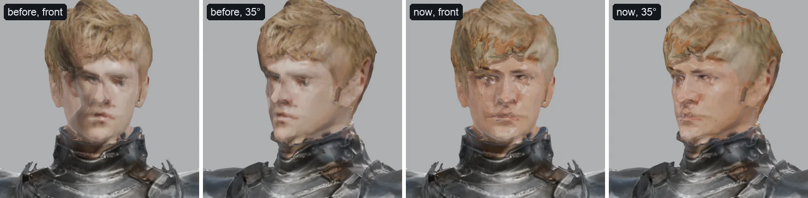
One skin tone over the face E138
In version 0.12 the skin tone evened the face too, to take the picture's shading off a shape not quite the picture's. With the face laid on in parts the shading lies on the right shape, and the tone's colour bands cut the picture's soft cheek shadow into patches; since version 0.13 the face is left as painted.
A rigid sole on the ankle bone
Until version 0.11 the planted foot was a copy of the sole - the shoe's vertices within 3 cm of the floor at rest, at most 160 - carried rigidly on the ankle bone. It is right for a shoe that is rigid below the ankle and wrong for one that blends with the shin, as Section 5.5 measures.